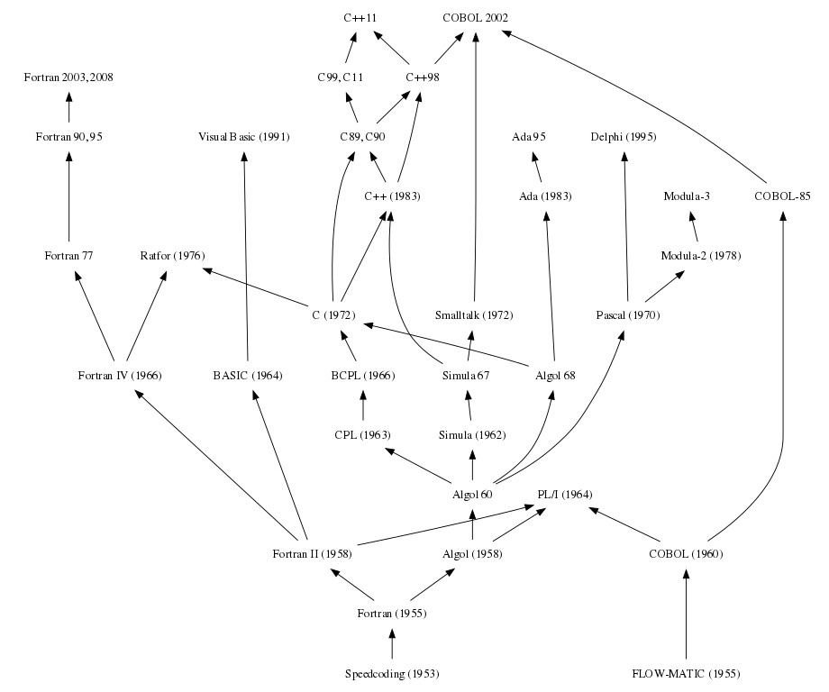

About
Hello! I’m interested in compilers, programming languages, and performance.
I work on the NVHPC C, C++ and Fortran compilers, the LLVM Flang Fortran compiler, and Python JIT compilers at NVIDIA.
These are some of my favorite posts:
Prior to working at NVIDIA, I optimized scientific applications at Pacific Northwest National Laboratory by leveraging different kinds of parallelism on CPUs and GPUs. Prior to that, I was a Data Science intern at Micron in the D.C. metro area.
You can also find me here:
These views do not in any way represent those of NVIDIA or any other organization or institution that I am professionally associated with. These views are entirely my own.Orality, Literacy, and Code
1/1/2026
Walter Ong, in Orality and Literacy (Ong82), argues that the medium of thought profoundly shapes how we think. Ong focuses on the transition from oral cultures to literate ones. While he later considered digital media, computer programs were not central to Orality and Literacy; programming languages are not considered at all:
Although the full relationship of the electronically procesed word to the orality-literacy polarity with which this book concerns itself is too vast a subject to be considered in its totality here, some few points need to be made…
Programming languages are of course a small subset of the electronically processed word, but this was the first place my mind went to. When we consider the impact of literature on human history and how comparatively brief of a time computers have been around, I have to imagine the full scope of the impact of programming languages on human cognition has yet to be imagined. At first, I thought programming languages either sit outside Ong’s oral/literate spectrum or are simply another form of literature entirely. I now believe that they do belong on the same spectrum, but are not wholly subsumed by literature. I begin by examining some notable contrasts between orality and literacy before attempting to extend Ong’s analysis to programming languages.
We will call people that primarily speak and do not know how to read or write primarily oral (or just oral) people, and those raised with literacy literate people. This is not a value judgment.
Links are at the end of the series of posts.
Orality and Literacy
If you’ve already read Orality and Literacy, this post might not be useful. This post reviews content from the book that will be relevant to the applications to programming languages later on.
Cognitive Technologies
Consider an oral person with a novel idea. They want to spread this idea to as many people as possible. What are their options? They could either:
- go to far-away places and speak in front of many people, or
- teach it to people who will spread it by word-of-mouth.
There is no way for them to record their thoughts and send them elsewhere; nothing remains of the thought except the traces in the minds of those who heard it. The thought exists as sound and event; it survives only as it is shared. Oral thought is inherently social, contextual, and temporary.
Ong notes that oral cultures rely on formulaic devices (like cliches, narratives, rhymes and rituals) to more reliably transmit ideas. These are cognitive technologies which extend memory and enable transmission. Literate people use different technologies (like line breaks, paragraphs, and mathematical notation) to preserve and organize thought.
What looks like dull or onerous repetition in the oral arts (Homeric hexameter, oral histories, mnemonic formulas) is better interpreted as technology applicable to a particular medium of communication rather than evidence of intellectual inferiority. A scribe might use dark ink on sturdy paper to ensure their ideas are accurately transmitted to someone in another country. So too do oral artists leverage the technology at their disposal to communicate as clearly as possible. Translation is difficult; tools useful in one medium may be useless, strange, or redundant in another.
The Medium Restructures Consciousness
Central to Ong’s thesis is that the means of communication change cognition. Before applying Ong’s analysis to programming languages, we need to understand how orality and literacy structure cognition differently.
Ong avoided using the term “medium” because it encourages readers to consider communication to work like this:
- Some one has a thought they would like to communicate.
- They encode that thought into a little nugget capable of being transmitted across a medium (like speech or literature).
- They transmit that nugget to another person, who
- decodes the nugget and downloads the thought into their brain.
Thinking of a ‘medium’ of communication or of ‘media’ of communication suggests that communication is a pipeline transfer of units of material called ‘information’ from one place to another… This model obviously has something to do with human communication, but, on close inspection, very little, and it distorts the act of communication beyond recognition.
In real human communication, the sender has to be not only in the sender position but also in the receiver position before he or she can send anything.
Communication can be something you do to someone else, and it can fundamentally act on the sender, not just the receiver. When we speak or write, it does not just transfer parcels of information to another person, but it fundamentally changes us. Writing enables entirely new ways of thinking. There was no such thing as a “list” in primarily oral cultures, nor was there the concept of “looking something up.” Where could anything be “looked up?” The closest conceptual match would be asking your wisest elder.
An oral person’s knowledge is organized by narrative. It is not possible to represent or maintain strict hierarchies or higher-level abstractions in narrative. Orality requires immediate social and physical context, and is therefor more socially and communally grounded.
Literacy enables greater individualism and precision. Authors often attempt context-independence such that their work does not rely too much on the audience’s context. This enables precise, systematic reasoning divorced from immediate circumstances. Writing encourages thinking of works as self-contained units with clear beginning, middle, and end.
Next, we’ll build on these ideas and apply them to programming languages.
Orality and Code
How do programming languages relate to orality? At first glance, code might seem to belong entirely to literature, having little in common with orality. It’s written, stored, and used as text, so it must be literature. While I mostly agree that code is an extension of and companion to literature, I was surprised by the connections with orality. Code is more difficult to separate from its context than literature, it’s inherently active, and it relies on formulaic patterns for communication between communities.
There is no word to describe for orality what “literature” describes for literacy. To stand in for such a word, we will use the “oral arts,” meaning works of communication that are native to primally oral people. This includes public rhetoric, recitations of songs, oral histories, and the like.
Cognitive Tech in Orality and Code
Programmers use cognitive technologies similar to oral formulas. Design patterns, comments, and naming conventions are shared devices that make programs interpretable. A future generation with different tools and more advanced programming literacy might look at our tools and ask: “Why all the repetition? Why the mythology? Just tell the computer what you want it to do.” But these metaphors and repetitive structures can and do help us manage complexity and communicate our intent.
Consider object-oriented programming. OOP is a metaphor we use to reason about programs: we talk about objects having attributes and behaviors, but those are conceptual tools, not facts about the machine or its behavior. We use the metaphor because it helps us model complexity and communicate with others. This says nothing about how useful OOP is relative to the other tools at our disposal as programmers, only that it is a tool of cognition in use today. This mirrors the patterns used in the oral arts that allow the artists to memorize and communicate for more nuanced and voluminous information to their audience.
In his famous paper Can programming be liberated from the von Neumann style? (Backus78), John Backus questions the popular contemporary cognitive technologies used for describing programs, which he ironically had a hand in forming. Backus argues that the prevailing mental models are intellectually limiting and that a more functional model would be more effective:
Conventional programming languages are growing ever more enormous, but not stronger. Inherent defects at the most basic level cause them to be both fat and weak: their primitive word-at-a-time style of programming inherited from their common ancestor – the von Neumann computer, … their division of programming into a world of expressions and a world of statements, their inability to effectively use powerful combining forms for building new programs from existing ones, and their lack of useful mathematical properties for reasoning about programs.
He describes two concepts as particularly limiting:
- Storing data to particular locations, and
- sharp distinctions between statements (which have effects and do not have results), and expressions (which have conceptual results but typically not effects).
He argues that these noetic structures hold us back from effective construction of programs. They are related to the behavior of machines, but are not inherent to programming languages, so as people working on programming languages, we should not be bound by them.
Surely there must be a less primitive way of making big changes in the store than by pushing vast numbers of words back and forth through the von Neumann bottleneck. Not only is the tube a literal bottleneck for the data traffic of a problem, but, more importantly, it is an intellectual bottleneck that has kept us tied to word-at-a-time thinking instead of encouraging us to think in terms of the larger conceptual units of the task at hand.
Note that the technology Backus refers to is not really about programming languages as they are transcribed, but the noetic structures they presume. Just as oral people cannot effectively and hierarchically organize knowledge without writing, neither can programmers constrained by a von Neumann model of programming effectively organize programs. Backus essentially argues that different cognitive technologies (like functional programming and expression-oriented semantics) should be made available to programmers, and these technologies should shape our cognition.
A language that doesn’t affect the way you think about programming, is not worth knowing.
The Social Nature of Code
To speak, you have to address another or others. People in their right minds do not stray through the woods just talking at random to nobody. Even to talk to yourself you have to pretend that you are two people… I avoid sending quite the same message to and adult and to a small child. To speak, I have to be somehow already in communication with the mind I am to address before I start speaking… I have to sense something in the other’s midn to which my own utterance can relate. Human communication is never one-way.
Although it’s tempting to consider programming at least as individual an activity as reading and writing, I argue it is far more social. Some programs are written and used in isolation, but the vast majority of useful programs are written by one person or group and used by many others. For programs and libraries to be successful, they need people to use them and technical contexts to facilitate them.
Most programs exist in a social and technical context. People must be able to communicate with each other about them. Physical infrastructure must be provided to facilitate their use. In this sense, programs resemble the town-square. I’m reminded of The Cathedral and the Bazaar: Musings on Linux and Open Source (Raymond99). In contrast, literature can be constructed entirely in isolation (and consumed in a similar manner), as was the case with 19th century philosophers like Kierkegaard.
Because speech is inherently temporary and active, it is also inherently context-bound. Prior to technologies like radio and TV, speech could only be delivered and consumed in-person, in a specific context, with other people. This inherently contextualizes speech, far more than literature or programs, though I argue here that programs are more context-bound than literature.
A Hybrid of Artifact and Action
Code has remnants of both oral art and literacy: it is an artifact of thought with a physical representation, but it inherently describes an action, almost like a spell, and always embedded in a technical context in which the code functions.
Like orality, it requires context and (usually) community to be meaningful. It exists as performance/action, not just description. Programmers use mythology and metaphor to structure their thoughts.
Like literacy, it is written, stored, and transmitted as text. It can be organized hierarchically and precisely, and it can lend itself to isolation. These points are discussed in the following post.
I believe this has something to do with the difficulties some people have with learning to program. New engineers must build mental models ex nihilo– there are not always metaphors that map the machine’s behavior to the physical world. Appropriate mental models must be built up through time and exposure. This hybrid nature suggests programming is a genuinely new form human cognition.
The next post explores the literary characteristics of programs and how they extend beyond traditional reading and writing.
Literacy and Code
Orality and code have a surprising number of characteristics in common. However, the more natural comparison is, of course, literature.
Literature leaves a physical trace in the world, while orality does not. Programming languages are unique because they do leave a trace on the world (the source code of the program is stored somewhere), but the physical record is only part of the program, unlike literature. Programs are inherently actions, like the oral arts, yet they are cast in text. Literature simply describes or prescribes; code both describes and performs, closer to a magic spell than a textbook. Code is impotent and incomplete without being executed.
Syntax and Cognition
Some aspects of programming language design are purely literate concepts, such as syntax. In Notation as a Tool of Thought (Iverson79), Iverson considers how syntax shapes cognition. He begins with his philosophical foundations:
By relieving the brain of all unnecessary work, a good notation sets it free to concentrate on more advanced problems, and in effect increases the mental power of the race.
That Language is an instrument of human reason, and not merely a medium for the expression of thought, is a truth generally admitted.
He points out some of the advantages programming languages have over regular literature:
Nevertheless, mathematical notation has serious deficiencies. In particular, it lacks universality, and must be interpreted differently according to the topic, according to the author, and even according to the immediate context. Programming languages, because they were designed for the purpose of directing computers, offer important advantages as tools of thought. Not only are they universal (general-purpose), but they are also executable and unambiguous. Executability makes it possible to use computers to perform extensive experiments on ideas expressed in a programming language, and the lack of ambiguity makes possible precise thought experiments. In other respects, however, most programming languages are decidedly inferior to mathematical notation and are little used as tools of thought in ways that would be considered significant by, say, an applied mathematician.
Programming languages are executable, deterministic, and unambiguous. These characteristics offer cognitive tools that literature does not.
APL, Glyphs, Ideographs
Iverson’s thesis is that the most useful concepts of mathematical notation and programming languages come together in his programming language APL. Those unfamiliar with APL’s syntax may consider it a cognitive inhibitor rather than an aid, yet the language’s terse syntax does provide an interesting study of the capability of a language’s syntax to affect the thought process of its users.
APL’s dictionary is comprised of glyphs glyphs that provide visual hints to their function instead of English words.
⌈0.5
1
⌊0.5
0
The glyph ⌊ visually suggests taking its operand from midpoint down to the floor, reminding the programmer of its function (“round down”). With two operands, these glyphs compute minimum and maximum, evoking similar imagery:
1⌊2
1
1⌈2
2
The transpose operator ⍉ suggests spinning the matrix around its diagonal. One imagines themselves holding both ends of the diagonal line and spinning the circular part of the glyph around it, swapping the rows and columns:
M ← 3 3 ⍴ ⍳9
M
1 2 3
4 5 6
7 8 9
⍉M
1 4 7
2 5 8
3 6 9
In this way, APL provides a dictionary of flexible hieroglyphs that give the programmer visual hints as to their function. APL’s glyphs function like ideographs like “1” and “2”: a Chinese speaker and an English speaker will not understand each other’s explanations of transposition, but both visually understand the meaning of “⍉”. The characters communicate meaning independent of spoken language. Gesture serves a similar function in oral peoples; neighboring communities may not be mutually comprehensible, but they can point and motion with their hands to communicate.
Proponents of APL (myself included) can only hope for adoption to branch out as presently popular forms of writing have:
When a fully formed script of any sort, aphabetic or other, first makes its way from outside into a particular society, it does so necessarily at first in restricted sectors and with varying effects and implications. Writing is often regarded at first as an instrument of secret and magic power.
If the declining popularity of Chinese pictographic scripts is any indicator, a simple alphabet is an aid to adoption and modern offshoots of APL are not well-positioned to achieve widespread adoption.
Semantic Editing
Modern programming environments offer editing tools with no comparison in a typical written setting, thanks in particular to the determinability of code. Formally defined grammars allow procedural analysis of code that is not possible in prose. The earliest examples of this are seen in the Lisp community, where the editing environment was an early focus.
As the experience of working with text as text matures, the maker of the text, now properly an ‘author’, acquires a feeling for expression and organization notably different from that of the oral performer before a live audience… The writer finds his written words accessible for reconsideration, revision, and other manipulation until they are finally released to do their work. Under the author’s eyes the text lays out the beginning, the middle and the end, so that the writer is encouraged to think of his work as a selfcontained, discrete unit, defined by closure.
Just as the transition from orality to literacy offered new tools for construction of thought, so too do modern editors. In particular, language servers make the entire semantic context of a program available to the programmer directly, freely searchable and modifiable. In prose, the best we have is tools to look up the definitions of words, but there is nothing like an English language server that would allow an author to navigate text as a semantic tree. Authors can construct the semantic information themselves by organizing their work into chapters or files, but the burden is on the author to maintain the structure. Editors understand the full technical context and update continuously.
Print, as has been seen, mechanically as well as psychologically locked words into space and thereby established a firmer sense of closure than writing could.
As print “locked words into space,” editors bring programs to life.
Literature in Programming
Two subsets of programming are unique in their relation to literacy. Comments and literate programming are both inherently works of literature embedded in or combined with code.
Comments exist in an interesting overlap of literacy and code. They are (usually) strictly literary devices embedded in code, with no effect on the resultant program. In this case, code completely subsumes the category of literature, since any work of literature can theoretically exist inside a program. Yet, they are not typically meaningful outside the technical context they physically reside in.
Donald Knuth studied the boundary between code and literature in Literate Programming:
I believe that the time is ripe for significantly better documentation of programs, and that we can best achieve this by considering programs to be works of literature.
Let us change our traditional attitude to the construction of programs: Instead of imagining that our main task is to instruct a computer what to do, let us concentrate rather on explaining to human beings what we want a computer to do.
For a more literature-forward analysis of programs, Literate Programming is a must-read. Knuth dealt with the specifics of typesetting documents in great detail across several volumes, such as his 1999 work, Digital Typography.
Digital typography was even the titular motivation for Dennis Ritchie to begin work on the Unix operating system at Bell Labs; although he probably just wanted an excuse to work on his own OS after the failure of the Minix operating system, developing a proper digital typesetting program for the Lab was at least the rationale for funding his effort.
Programs are inherently social and embedded in a social and technical context. If the program is to be of use to anyone other than the author, some portion of the technical context required to run the program must be communicated to other people. If the program is to be extended for any purpose other than the original one, the logic the program follows must be interpretable to someone else. All but the simplest programs require communication between people to be useful.
Effects on Cognition
Ong avoids moralizing the distinction between oral and literate people, avoiding even implicitly moral terms like “illiterate”. Nonetheless, he does not shy away from the benefits of literacy:
And elsewhere:
Orality is not an ideal, and never was. To approach it positively is not to advocate it as a permanent state for any culture. Literacy opens possibilities to the word and to human existence unimaginable without writing. Oral cultures today value their oral traditions and agonize over the loss of these traditions, but I have never encountered or heard of an oral culture that does not want to achieve literacy as soon as possible. Yet orality is not despicable. It can produce creations beyond thereach of literates, for example, the Odyssey. Nor is orality ever completely eradicable: reading a text oralizes it. Both orality and the growth of literacy out of orality are necessary for the evolution of consciousness.
If literacy changed cognition by enabling abstract thought, hierarchical organization, and precise specification, what might code do?
Rather than manipulating text alone, the programmer works on semantic structure with immediate feedback. Thought experiments are executable directly and provide instant feedback. Programmers learn to build on top of abstractions and communicate with other people in new ways.
Compare the history of programming languages to the history of literacy. Literacy is at the very least several thousand years old while programming languages are about one hundred years old, at most. The difference between the Automatic Programming of John Backus and Grace Hopper and modern programming languages is astounding. What differences might we see in the next thousand years? What effects might those differences have on our cognition?
Conclusion
Programming languages exhibit characteristics of both orality and literacy.
- Like oral performance, code is inherently contextualized, formulaic, and active.
- Like literature, it is written, textual, revised, and precise.
They could only have been designed by a literate mind, yet they are not fully subsumed by literature. They are text that acts on the world directly, not by virtue of influencing people.
People who write code employ oral and literary cognitive technologies in addition to entirely new ones that have not been academically analyzed as far as I can tell. Reading Ong alongside Backus, Knuth and Iverson provides anthropological, social, technical, historical and philosophical context for how programming languages came to be, and how we might design new ones.
Debates about programming languages and paradigms are not solely technical disagreements, but reflections of different ways of organizing thought and extending cognition, analogous to the shift from orality to literacy itself. Programming language design is about communication and human cognition. When we design a new language or choose between paradigms, we are not arbitrarily choosing how to give instructions to computers; we are building a cognitive toolbox that shapes how programmers think and how communities coordinate.
Links
- Backus78: Can Programming Be Liberated from the von Neumann Style?
- Boole54: Laws of Thought
- Ong82: Orality and Literacy
- Fettes23: Book Review: Orality and Literacy: The Technologizing of the Word
- Iverson79: Notation as a Tool of Thought
- Knuth84: Literate Programming
- Perlis: EPIGRAMS IN PROGRAMMING
- Raymond99: The Cathedral and the Bazaar
- Sturgill12: Review: Orality and Literacy by Walter J. Ong
- Tao08: Use good notation
- Whitehead11: An Introduction to Mathematics
Notes on Orality and Literacy
Loose collection of personal notes from reading Ong’s Orality and Literacy. See the prior post for my collected thoughts.
mnemonics and formulas
- Does code remind me more or orality or literacy? Simply reading the technical text does not contain the full context required to interpret it, more similar to orality. The organizational and technical context are immediate and often required for interpretation.
- Orality is inherently active, non visual, and contextualized. It only ever exists as an event in a moment in a context, while literature is an artifact of thought, independent of a context. Code is a hybrid of both: an artifact of thought, but inherently describing an action, almost like a spell, and always embedded in a technical context in which the code functions.
- Sound only exists as it is going out of existence. There is no stopping or having sound. It is inherently perishing. Thoughts are conceived of in primarily oral cultures as such.
- However complex and rigorous, primarily oral thoughts cannot be independent and purely logical, because as soon as the thought is had, it ceases to exist, absent some mechanism for committing the thought to memory and transferring it to others.
- Code is different from plain ’ol literature describing or prescribing action; it is action, (via a translator). It is not a call-to-action, it is action in some fundamental way.
Characteristics of Orally Based Thought
- Additive rather than subordinative
- Orality favors the cliche because it’s a memory aid and ensures the message will travel further.
- there’s lots of thematic repetition, and they must stay intact. Their persistence is evidence of the effectiveness of the cliche in allowing the moral to travel through time and space. It’s not low-minded to use them, it’s part of the medium. Analysis/deconstruction is risky-possible destroying the message forever if the analysis propagates through too many minds such that the message ceases to travel organically. The same can be said for “redundant” or “copious” continuity.
- it’s like the page numbers or paragraphs. it’s not redundant to leave that extra space there, because it’s really useful in helping the reader keep track of what’s going on. Future iterations of humanity might look back at paragraph line breaks and other literary tools of thought and organization and consider them to be “silly” or “primitive” because they are no longer useful in whatever medium comes after writing.
- sparse linearity is actually unnatural and recent, only able to persist in human communication in the presence of longstanding artifacts of thought.
- repetition is particularly useful in live communication because of the nature of sound. It’s easy to miss a word here and there,
so repeating the message often helps the audience keep track and refine their understanding. It’s not primitive at all.
- also gives the speaker a chance to mindlessly repeat their message while they consider what to say next.
- characterized by conservatism/traditionalism
- bc what is not actively conserved is immediately lost.
- writing can also be conservative (laws were frozen in time as soon as they were written down)
4: Writing Restructures Consciousness
- writing establishes “context free” language, which is an oxymoron
- no way to properly refute text. it always says the same thing as before.
- Most persons are surprised, and many distressed, to learn that essentially the same objections commonly urged today against computers were urged by Plato in the Phaedrus and in the Seventh Letter against writing. Writing, Plato has Socrates say in the Phaedrus, is inhuman, pretending to establish outside the mind what in reality can be only in the mind. It is a thing, a manufactured product… Secondly, Plato’s Socrates urges, writing destroys memory. Those who use writing will become forgetful, relying on an external resource for what they lack in internal resources. Writing weakens the mind. Today, parents and others fear that pocket calculators provide an external resource for what ought to be the internal resource of memorized multiplication tables… Thirdly, a written text is basically unresponsive… Fourthly, in keeping with the agonistic mentality of oral cultures, Plato’s Socrates also holds it against writing that the written word cannot defend itself as the natural spoken word can: real speech and thought always exist essentially in a context of give-and-take between real persons.
- Those who are disturbed by Plato’s misgivings about writing will be even more disturbed to find that print created similar misgivings when it was first introduced.
- One weakness in Plato’s position was that, to make his objections effective, he put them into writin, just as one weakness in anti-print positions is that their proponents, to make their objections more effective, put the positions into print. The same weakness in anti-computer positions is that, to make them effective, their proponents articulate them in articles or books printed from tapes composed on computer terminals. Writing and print and the computer are all ways of technologizing the word. Once the word is technologized, there is no effective way to criticize what technology has done with it without the aid of the highest technology available.
Plato was thinking of writing as an external, alien technology, as many people today think of the computer. Because we have by today so deeply interiorized writing, made it so much a part of ourselves, as Plato’s age had not yet made it fully a part of itself, we find it difficult to consider writing to be a technology as we commonly assume printing and the computer to be.
- Writing is fundamentally unnatural, while oral speech is emergent.
Like other artificial creations and indeed more than any other, it is utterly invaluable and indeed essential for the realization of fuller, interior, human potentials. Technologies are not mere exterior aids but also interior transformations of consciousness, and never more than when they affect the word.
- Technologies like the orchestra are transformative and unnatural and take us to new heights.
- writing is inherently individual. take a teacher and a classroom and put them in conversation and the whole group participates. Have them all read and they descend into their own universes, entirely alone.
- We are so, so early in the history of programming. Consider how primitive the literature was in the advent of the written word and the alphabet. Consider how difficult it would be for Plato to consider the applications of literature we have today, and how deeply literacy permeates our collective cognition. So too are we in the very beginning of what may mature into a new offshoot of literature.
To make yourself clear without gesture, without facial expression, without intonation, without a real hearer, you have to foresee circumspectly all possible meanings a statement may have for any possible reader in any possible situation, and you ahve to make your language work so as to come clear all by itself, with no existential context. The need for this exquisite circumspection makes writing the agonizing work it commonly is.
-
Learned Latin reminds me of Algol. It’s divorced from reality, with hardly ever a full compiler or programming environment. It was purely learned. It was pronounced differently all over, but always written the same. For over a thousand years, educated peoples did all of their scientific and mathematical and abstract thinking in Latin, but hardly spoke it, if ever. Perhaps due to Algol’s academic origins and planned nature. It did not grow out of a technical setting, but was designed by committee.
-
Literate programming: mention Knuth’s Typesetting books, Jupyter notebooks, doctest, and Org mode
Mmoreover, as earlier noted, composition on computer terminals is replacing older forms of typographic composition, so that soon virtually all printing will be done in one way or another with the aid of electronic equipment. And of course information of all sorts electronically gathered and/or processed makes its way into print to swell the typographic output.
At the same time, with telephone, radio, television and various kinds of sound tape, electronic technology has brought us into the age of ‘secondary orality’. This new orality has striking resemblances to the old in its participatory mystique, its fostering of a communal sense, its concentration on the present moment, and even its use of formulas (Ong 1971, pp. 284–303; 1977, pp. 16–49, 305–41). But it is essentially a more deliberate and selfconscious orality, based permanently on the use of writing and print, which are essential for the manufacture and operation of the equipment and for its use as well.
- Notion that the “center of mass” of communication is what determines cognition; someone may be somewhat shaped by literacy but is primarily oral.
- Today’s orality is distinctly less agonistic than earlier orality. Comparisons between today’s presidential debates and 19th c debates that were in public with not amplification equipment. Trend sorta broken by trump.
6: Oral Memory, story line
Similar to what we need to do in literature, in code in order to make sense of large systems. One might ask the same of us: why use this mythology of objects and such, when we can express our ideas in more straightforward (atoms of meaning)?
Although it is found in all cultures, narrative is in certain ways more widely functional in primary oral cultures than in others. First, in a primary oral culture, as Havelock pointed out (1978a; cf. 1963), knowledge cannot be managed in elaborate, more or less scientifically abstract categories. Oral cultures cannot generate such categories, and so they use stories of human action to store, organize, and communicate much of what they know.
Second, narrative is particularly important in primary oral cultures because it can bond a great deal of lore in relatively substantial, lengthy forms that are reasonably durable—which in an oral culture means forms subject to repetition. Maxims, riddles, proverbs, and the like are of course also durable, but they are usually brief. Ritual formulas, which may be lengthy, have most often specialized content.
Thus an oration might be as substantial and lengthy as a major narrative, or a part of a narrative that would be delivered at one sitting, but an oration is not durable: it is not normally repeated. It addresses itself to a particular situation and, in the total absence of writing, disappears from the human scene for good with the situation itself.
In a writing or print culture, the text physically bonds whatever it contains and makes it possible to retrieve any kind of organization of thought as a whole. In primary oral cultures, where there is no text, the narrative serves to bond thought more massively and permanently than other genres.
And yet, with the most sophisticated mechanisms of organizing information, we still rely on metaphor and picture.
In another sense, we are so far beyond attempting to come up with narratives and metaphors, that it is nearly impossible for new CS grads to figure out what’s going on. All of us in industry have built up mental concepts ex nihilo and rely on them day to day. Other engineers understand us but it’s so difficult to build up from nothing without massive amount of exposure since there are not natural-world or oral/narrative corollaries to build upon. Maybe this is what will continue to expand in the future of literacy as we further co-develop with computers and programming languages.
Is it so difficult to keep large systems present in our heads that we too must construct narratives?
What made a good epic poet was, among other things of course, first, tacit acceptance of the fact that episodic structure was the only way and the totally natural way of imagining and handling lengthy narrative, and, second, possession of supreme skill in managing flashbacks and other episodic techniques… If we take the climactic linear plot as the paradigm of plot, the epic has no plot. Strict plot for lengthy narrative comes with writing.
As the experience of working with text as text matures, the maker of the text, now properly an ‘author’, acquires a feeling for expression and organization notably different from that of the oral performer before a live audience. The ‘author’ can read the stories of others in solitude, can work from notes, can even outline a story in advance of writing it. Though inspiration continues to derive from unconscious sources, the writer can subject the unconscious inspiration to far greater conscious control than the oral narrator. The writer finds his written words accessible for reconsideration, revision, and other manipulation until they are finally released to do their work. Under the author’s eyes the text lays out the beginning, the middle and the end, so that the writer is encouraged to think of his work as a selfcontained, discrete unit, defined by closure.
This is extended even further in code. Consider the applications of
editor integrations. In a properly configured text editor,
a variety of unique tools are available to developers.
Words and sections of text appear in different colors; some may be
typeset as italic or bold.
Should the developer change the text such that the semantic meaning
of the aforementioned text changes, the typesetting may too change,
reflecting the new role the text plays in the context of the program.
Developers are able to jump directly from a set of characters to their definitions,
or simply hover their mouse over some text to learn more about it or see
any potential errors resulting from the text.
Consider how remarkable of an extension
to literacy this is; can a reader “jump” from some point in a
narrative text to the definition of its concept? We can look up definitions
of words, or search the internet, but in many editors, the full semantic
context of a set of characters is available to the author.
There is no tool to analyze and navigate the regular text as a semantic tree of
information.
The language-server (for example, clangd for C or C++)
makes the semantic structure and full context
of my program available to the developer in an instant,
updating as soon as changes are made.
I can think of no corollary in regular literature, because the
semantics are not similarly determinable.
Print, as has been seen, mechanically as well as psychologically locked words into space and thereby established a firmer sense of closure than writing could.
Just as print froze words in time space, code brings them to life. They are inherently actions.
- Detective novels (and the like) could only have come into play with literacy bc they require too much precision for orality.
Insofar as modern psychology and the ‘round’ character of fiction represent to present-day consciousness what human existence is like, the feeling for human existence has been processed through writing and print. This is by no means to fault the present-day feeling for human existence. Quite the contrary. The present-day phenomenological sense of existence is richer in its conscious and articulate reflection than anything that preceded it. But it is salutary to recognize that this sense depends on the technologies of writing and print, deeply interiorized, made a part of our own psychic resources. The tremendous store of historical, psychological and other knowledge which can go into sophisticated narrative and characterization today could be accumulated only through the use of writing and print (and now electronics). But these technologies of the word do not merely store what we know. They style what we know in ways which made it quite inaccessible and indeed unthinkable in an oral culture.
7: Some Theorems
- Ong is so forthright about all the subtopics of this book that should be investigated for further study.
Over the centuries, the shift from orality through writing and print to electronic processing of the word has profoundly affected and, indeed, basically determined the evolution of verbal art genres, and of course simultaneously the successive modes of characterization and of plot
Man, how much more will the LSP and other editor integrations change the way we think? What about AI editor integration’s effects on cognition? Not only do we have recluse, individualistic reading and writing, but we have access to another mind, reading and writing alongside us, seeing everything we see.
Marshall McLuhan "The medium is the message."
Paradoxically, Plato could formulate his phonocentrism, his preference for orality over writing, clearly and effectively only because he could write.
To speak, you have to address another or others. People in their right minds do not stray through the woods just talking at random to nobody. Even to talk to yourself you have to pretend that you are two people… I avoid sending quite the same message to and adult and to a small child. To speak, I have to be somehow already in communication with the mind I am to address before I start speaking… I have to sense something in the other’s midn to which my own utterance can relate. Human communication is never one-way.
- Some notes on why the “media model” is not the right way to think about communication. we aren’t sending nuggets of information down a tube to be decoded by the other person. We can do something to someone else and we are shaped by the media as well.
History of Compilers
10/23/2025
I feel that the history of compilers has not yet been as a cohesive story, but only as a subplot of other histories. The links between different threads of compiler history are interesting and they provide a unique perspective on computing that hasn’t been satisfactorily explored yet, in my opinion. This PDF is a collection of my personal research on the book that I wish existed–one on the history of compilers in particular.
Link to the PDF
David MacQueen on the History of Compilers
11/4/2025
In this interview, David MacQueen and I discuss the history of compilers, especially as it relates to the evolution of Standard ML, but also discussing changes he would like to make to the language, the influence of Peter Landin and the λ-calculus, and modern compiler technologies.
I really enjoyed this conversation and I’m thankful to David for taking the time to chat. See this post for the motivation for this interview.
This is transcript was originally AI-generated, but I’m editing it by hand as I review pieces of it. Apologies for any errors.
with uh these two voice all right well i'm recording on my side too and you're
you got yours so i think we can just uh hop back in i'm thinking that uh maybe
we'll do a little five to ten minute intro on some of your background how you
got into working on ml and then you know maybe a 30 35 minute maybe a 45 minute
total conversation and the most of it we'll just be chatting about the history
of compilers maybe we'll talk a bit about you know the logic for computable
functions and how that led to ml as this i can give you a bit of ml background
sure yeah yeah so yeah so my name is dave mcqueen i was trained as a
mathematical logician in computability theory at mit i was in the air force for
a while then i went to edinburgh as a postdoc in 1975 and spent almost five
years in edinburgh and that's where i turned into a computer scientist and i
worked with people like rob burstle who was my boss and rob miller and
basically the theory of programming languages uh my background in mathematic
mathematical logic was uh relevant and useful anyway so um edinburgh was a kind
of special place in the 70s in the 70s and since then in terms of european uh
theoretical computer science which is quite different from american theoretical
computer science in the sense instead of focusing on algorithms and complexity
theory in the u.s uh european theoretical computer science tended to uh look at
um connections between logic and and computer science and in particular uh uh
the theoretical foundations of programming languages and um so the lambda
calculus was a major inspiration source of ideas right back church around 1930
and later ideas uh about types uh that were introduced by alonzo church and uh
well introduced originally by uh russell and whitehead around 1911 uh as a
defense against uh um paradoxes like russell's paradox and uh then uh turned
into a kind of augmented version of the lambda calculus called the simply type
lambda calculus by church in a paper in 1940 uh and uh and uh then kind of
rediscovered and popularized by some computer scientists back in the uh 60s
mostly uh christopher strachey uh and uh peter landon um both of whom had kind
of uh non-standard informal kinds of education because there wasn't uh computer
science discipline in the 1950s uh there were things going on at cambridge
manchester uh around turing and and so on but uh and early at bletchley park
earlier in bletchley on the code breaking uh technology mm-hmm so that was the
kind of british context and there were people like tony hoar that were involved
in this uh program language you know semantics and right uh really work on
verification and applying logic to programming yeah and if if i can interject
so you know around this time i'm i feel like today it's a little bit hard to
overstate the influence of the development of algol had on all of these
languages and there were you know called by name and called by value in these
things and then a lot of landon and strachey's papers were a little more strict
evaluation semantics is that right maybe you can speak to the development of
algol and there was the algol group um there were uh i don't recall whether
strachey or landon had direct connection one moment uh yeah no worries yeah
he's getting a call from my wife i'm just hello i'm uh i'm in the midst of a
remote discussion okay about compilers very quickly uh i'm at pedro's with sin
we finished our shopping and we're eating lunch okay no problem right bye she's
having lunch with her friends good to know good to glad we got that settled uh
anyway um so i'm kind of vague about uh you know obviously um uh john bacchus
uh peter norr from denmark um um uh the algol 68 guy uh so there was a group uh
sure involved in in the algol development uh that was late 50s through early
1960s and then there were some uh interesting there was probably the first book
about compilers was the description of the algol 60 compiler mm-hmm but uh and
strachey's work around the mid 1960s was part of it involved uh definition of a
new kind of systems programming language she called cpl right right epl and
that was an algol um 60 derived language uh and um uh it had i don't think
peter landon was involved directly in cpl yeah i think he was not on the papers
but i think around the same time he was uh busy translating he had a company it
was a kind of software consulting company gotcha in london and he hired um uh
peter landon and peter landon uh got very enthusiastic about the lambda
calculus and wrote a burst of very important papers from about 64 to 66 uh one
was uh the next 700 programming languages where he described a kind of uh
syntactically sugar sugared lambda calculus that he called i swim if you and um
then he wrote about uh a abstract machine for evaluating uh that language or
the lambda calculus right uh and he also wrote a couple of papers about how to
model the semantics of algol 60 by translating algol 60 into the lambda
calculus with various right right devices and tricks and that machine was the
was it landon's secd machine yeah the secd machine that's right right it had
four components the store the stack the environment the control and the dump
which was more stack right yeah anyway um so those papers uh had a huge impact
and uh later on uh robin milner was interested in writing a uh uh proof
assistant this would be an interactive system to help uh a person uh perform
formal proofs in a in a particular logic which was called lcf or logic for
computable functions and this is at stanford right he did that work initially
at stanford and then came brought it back to edinburgh right right yeah around
1973-74 and logic for computable functions was a logic for reasoning about
functions and recursion and so on developed by um dana scott in the late um
late 60s mid to late 60s and he developed that um because he was trying to find
a mathematical model for the lambda calculus uh and he got frustrated he
couldn't find a model because of the uh fundamental problem of self-application
that the model of the lambda calculus had their support the idea of buying a
function to itself and for a long time scott couldn't figure out how to build
such a model and he decided to fall back on on a logic for reasoning about uh
these kinds of functions but then he did discover a model around 1969 which is
the scott domain model infinity model uh and uh so he never published that the
earlier paper that described the lcf logic uh kooch um i swim and all that was
the name title of the logic it it's since been published in uh logic and
symbolic computation gotcha right uh as uh sort of uh retrospective uh
publication and so now ml enters the picture because this lcf system yeah yeah
uh robin milner had a a robin milner was another sort of self-taught british
computer scientist he um had a good education uh good mathematical background
and he was teaching at a public school you know private secondary school in
britain and um he got interested in doing research and he um i think he had a
position at swansea and he managed to get a kind of a research visit for a year
or two at stanford around 1971 72 and at stanford he uh met with a guy named uh
uh wyrock uh wyrock uh wyrock and uh they together uh thought they could write
a theorem prover that would use this logic and so they the first first
generation of that was uh it was called ml no it was called uh lcf theorem
prover uh what didn't exist at that time that was at stanford they wrote the
system in lisp and lisp and lisp was the meta language right right pro language
if you like in the language for writing uh proof tactics but um he then got a
position where miller then got a position to edinburgh and came to edinburgh
sometime in late 73 mid i think and um brought in a couple postdocs over the
next years got some funding and uh decided to do a proper lcf theorem prover
and instead of using lisp which was uh insecure in the sense that it was not
statically typed um he chose to use i swim as the meta language but added a
type system and a static type checker and beyond that he um kind of
rediscovered um the idea of inferring types and this was a a fairly old idea in
the logic world but it wasn't known in computer science so no they essentially
rediscovered it and the um ml metal language for the lcf theorem prover and
that was in the mid to late 70s they kind of finished this theorem prover
around 1978 and they published a uh a paper um on the theorem prover and then
miller published a paper on the type system and so the the purpose of you know
they had lisp and ice women landed his original papers dynamically typed right
but the the issue was was a kind of thought experiment language uh although i
swim uh after he left um working for strachey he went to new york and he worked
at univac for a while but he also had a visiting position for a while at mit
and so he taught people at mit about ice swim and there was actually an
implementation effort led by evans and wolzencraft at mit in the late 60s and
they called their implementation pal i forget what pal stands for but it was
basically ice swim and so uh but i don't think uh the pal uh work had any
visibility or influence in edinburgh um but the reason that lisp didn't work
very well or even dynamic ice swim was because if you you know made some
mistake in your list code you could get a a proof that was wrong right right so
the point uh static type checking was that there would be an abstract type of
theorem and the only way you could produce a value of type theorem um is to uh
use inference rules that were strongly typed and uh the strong typing uh
guaranteed in principle the correctness of the proof so you would be able to
generate any unprovable or non-proved theorems other than by uh application of
the proof rules the inference rule uh and so it was logical security that the
type system was providing but in order to have some language that was um closer
to lisp in in flexibility uh they'll never have the idea of introducing this uh
automatic uh type inference system and as i said uh earliest uh work on
something like that was uh 1934 by by um curry uh and then later on curry in
the 50s when he was writing his book about uh um about uh combinator logic he
had a chapter in that book about uh what he called functionalities for for
conduct combinators which were essentially his term for types uh uh in the 1934
paper he kind of then formally um described um described something that you
would call type inference and then came back to that uh later on in in the 60s
and then roger hindley a logician at uh swansea uh took that up and wrote a
paper about it as well and this was before um milner knew about it so later on
i mean had published his paper about it somebody had told him that there was
this earlier work by curry and hindley but in fact there was the the first
actually um published algorithm for type inference was uh produced by max
newman in 1943 and max newman was turing's uh mentor at cambridge with
professor of mathematics and uh uh uh was interested in things like goodless
proof and foundational issues and uh he was the one who sent turing off to
princeton to work with perch and get a phd and um later on he became the head
of the manchester uh computing laboratory and hired turing there toward the end
of his life anyway uh so max newman in a different context had thought about
type inference and wrote a paper about it and he was his main target was type
inference for coin's new foundation which was a kind of uh alternate
formalization for sort of logic but he also had a section that did uh applied
the ideas to lambda calculus anyway so that uh early work by newman was
interesting but uh nobody knew about it and henley rediscovered it back many
years later um anyway so this is a case where there was parallel work in logic
and computer scientists but they weren't aware of each other well and at this
point the lambda calculus and combinatory logic are sort of cousins right
solving a lot of the same problems right they're equivalent right combinatorial
logic is essentially the lambda calculus without variables and you have a bunch
of uh combinator reproduction rules instead of the beta reduction that would
calculate right right so um move my phone a little bit closer to make sure
anyway um so that was the kind of background cultural um situation in edinburgh
in the late 70s and i've arrived at 1975 um but i was working at that time
there was a computer science department and rob milner and his group of
postdocs and grad students were in the computer science department and they
were at the king's buildings campus which was a kind of science campus three
miles south of the rest of the university which was in the center of town uh
and um there was a school of artificial intelligence uh so the early blossoming
of artificial intelligence around edinburgh and i worked for ron burstle who
was in the school of artificial intelligence and uh some of some of his other
postdocs and students and uh um um we developed a kind of parallel language
called hope which was a um language derived from or evolved from a rather
simple first order uh functional language that kind of resembled girdle's uh
generally recursive equations of uh 1930 uh which were part of the uh leading
to the incompleteness still anyway um we developed this language called hope
and we borrowed some ideas from ml in particular the general type system and
the type inference and type checking uh approach and uh it had its own um
special thing which was later called algebraic data types and uh so algebraic
data types came came from hope um based on part of the evolution from this
first order language and then um in the 80s uh there was a another effort to
design uh a kind of first class uh functional programming language which uh
robin initially called standard ml because it was trying to standardize and
unify several um threads of work including the ml that was part of the lcf's
theorem prover and the hope language that ron bristol and i had developed and
um cambridge was off the people at cambridge and inria were off uh kind of
evolving lcf and in in in the ml dialect there so uh so robin proposed this
sort of unified standard ml that had uh aspects of hope and uh and lcf ml and
through various meetings of mostly edinburgh people or people in the edinburgh
culture like myself i was then bill labs um we designed the standard ml
language from about 1983 to 86 and then robin's idea robin viewed it just as a
kind of language design effort and a major goal was to produce a formal
definition of the formal definition of the language using uh tools that had
been developed at edinburgh for operational semantics so there was a kind of
edinburgh style operational semantics and that was used to give a formal
definition of the ml uh language standard ml language and that was published as
a book by mit press 1990 um and um but raman's goal was essentially to produce
produce that language design and the corresponding formal definition published
as a book and uh as an actual programming language he had no intention of using
it and he wasn't terribly interested in implementing it uh he had a kind of
naive idea that uh uh once it was out there some commercial software house
would say we should write write a compiler for this thing uh of course that
didn't that eventually kind of happened there was a software house that uh
harlequin limited uh later on in the 80s that uh had a project to implement a
ml compiler because their boss at that time was interested in producing a lisp
compiler a ml compiler and a dylan compiler where dylan was this uh language
developed at apple that uh nobody remembers kind of a lisp dialect uh
interesting anyway uh but uh uh uh i was at bell labs and i uh got together
with the new young faculty member andrew appell at princeton who was interested
in and writing compilers and uh so we got together and uh started working in
spring of 1986 was working on a new compiler for standard ml and uh there were
other kind of derivative compilers uh there was something called edinburgh
standard ml which was kind of derived from an earlier edinburgh ml compiler
which was derived from a uh compile that luca cardelli wrote when he was a
graduate student um or dialect so the uh and then andrew was a real computer
scientist with a real computer science degree from carnegie mellon and he knew
about things like code generation runtime systems and garbage collection and so
on um and uh you know before when we developed hope for instance and when uh
the lcf ml was developed it was just piggybacking on in the lcf's case it was
piggybacking on a lisp implementation and so the kind of nitty-gritty stuff was
handled cogeneration garbage collection and so on were handled by the
underlying lisp and uh the hope implementation that i worked on was uh hosted
by a pop two which was uh an edinburgh developed uh cousin of lisp uh symbolic
programming language um rather influenced by by landon landonism maybe you can
speak to it i find it so interesting that you were at bell labs and appell at
princeton and in a roughly similar time period um i think you also had aho at
bell labs and ulman at princeton so we took very different approaches to
compilers yeah after edinburgh i went to um well i i tried to get back to
california so i had a kind of aborted so one year stay at isi in southern
california and i went to bell labs and um uh there a guy named robbie seti who
was one of the authors co-authors of the later edition of the dragon book on
compilers um he was interested he had become interested in semantics of
programming languages and so uh they hired me at bell labs and um um um aho was
there he was a department head of the kind of theory department in the center
this better way unix was developed and so there there was the hard hardcore
unix group that uh richie and thompson and kernahan and pike and later on and
uh and so on uh doug mcelroy who's my boss uh and uh uh that was the orthodox
culture at bell labs of course by the time i got there in the beginning of 81
uh unix was already a big success and well established and and so on and the
unix people basically all worked in the communal terminal room up on the fifth
floor um next to the pdp 70 right pdp 70 right right time sharing system and uh
i was never part of that group and two doubt two doors down the hall there was
this new guy um who joined bell labs a bit before i did probably 1980 or 79
named bjarne stustrup and he was working at trying to make c into an
object-oriented language because he had uh done his graduate work using simula
simula 67 at cambridge right right and simula simula simula was originally also
an extension of algol 60 but for parallel process simula was explicitly a
derivative of algol 60 right the idea the class was just uh uh almost like cut
and paste combination of blocks of algol code uh with weird control structures
um anyway uh so there was that object-oriented stuff going on down the hall but
uh uh we were on different bandwidths so there was better communication and uh
um also not very much communication between me and and the sort of unix
orthodox culture i you know used the unix system and uh one of the first things
i i did when i first arrived at bell labs to like make my computing world a
little bit more comfortable is first i ported a version of emacs to the uh
which was alien culture and to the local unix system and i also wrote a version
of yak in list so i had to figure out steve johnson's weird code for the yak um
anyway but pretty soon after that i got involved in well first uh working on
further development of hope and then starting in 83 and started working on
standard ml why do you think there was so little mutual interest between what
you were working on and the unix folks well it's kind of background and culture
the unix approach was very seat-in-the-pants kind of hacking uh approach and uh
they didn't think very formally about what they were doing basic express things
at two levels one was vague pictures on a on a blackboard whiteboard where you
had boxes and arrows between boxes and things like that and code so they they
would translate between these sort of vague diagrams and uh and uh assembly or
later c code and c is essentially a very high level pdp 11 assembly language if
as far as they're concerned um and uh you know i had a more mathematical way of
trying to understand what was going on and uh uh so it was not easy to
communicate um dennis ritchie originally had a mathematical background but uh
and as one point or another i tried to discuss concepts uh like the stream
concept in in unix with him um but uh yeah one main reason i was at bell labs
is because doug mcelroy who hired me had done some work relating to um stream
like co-routining and i had worked on that at edinburgh with with gil khan um
so that my first work in computer science so that involved functional
programming and uh lazy evaluation a particular way of uh organizing that and
it kind of connected conceptually with the notion of the stream in in in unix
you know piping pipelines uh of essentially stream processing where you know
the input and output were pipe streams um anyway um but uh srushe also didn't
connect with this orthodox culture very strongly because uh he as i said wanted
to turn c into an object-oriented language and he did that initially by writing
a bunch of pre-processor macros to define a class-like mechanism and that
evolved into c plus plus and much later c plus plus compilers it was because
initially kind of pre-processor based he had he started with the um cpp unix uh
pre-processor and evolved that into a more powerful pre-processing system was
called c front right right and at some stage it was called c with classes um
and later on c plus plus and uh and and it's interesting though now nowadays i
mean i think i think i think it's herb sutter that's working on uh something
called cpp front which is the the c front for c plus plus to to turn modern c
plus plus into yeah very interesting uh yeah i'm not very keen on macro
processing uh front ends especially if you if you're interested in types
they're very problematical right if you want to define a language that has a uh
well-defined uh provably sound type system macros are a huge mess right right
well maybe we can return to ml so we've got some sort of standard ml but at
inria there's the beginnings of what would be camel and then ocaml right so at
the beginning so the first meeting was a kind of accidental uh uh gathering of
people at edinburgh in april of 83 and robin wanted to present his uh proposed
uh standard ml that he worked on a bit earlier and it turned out that uh one of
the groups at inria that would have close connection with robin and uh research
work at edinburgh was uh gerard wetz group at uh inria and as a member of that
group there was a guy named guy kusino who worked on uh um was part of wetz
group at uh inria and he happened to be in edinburgh and kind of was involved
in these meetings as a kind of representative of the inria people and um he
took the ideas made notes and took the ideas back to edinburgh and they they
contributed a a critique or a you know feedback uh about the first uh iteration
of the design uh so in fact uh the inria people were connected to the
beginnings of standard ml through that connection and geek kusino and gerard
wetz um in the next next following year we had a second major design meeting
and um i believe kusino came to that one as well there were several people from
edinburgh and people who just happened to be around i was around um luca
cardelli was around of course rod burstall and robin milner and some postdocs
and grad students and so on uh and uh we made a decision i swim had two
alternative syntaxes for local declarations essentially a block structure one
was let declaration in expression where the in expression defined the scope of
the declarations and there was an alternate one that was used in in in i swim
which was expression where declaration so you have the declaration coming after
the expression and uh when they scale up for fairly obvious software
engineering reasons uh it's better to have the declarations before the uh scope
rather than after the scope because the scope might be uh uh you know you might
have a 10 page expression followed by the declarations on page 11. right right
it's kind of hard to understand the code and you have a kind of tug of war if
you have uh let declaration in expression where declaration to you know prime
or something which declaration applies first uh anyway so it seemed uh
unnecessary to deal with these difficulties with the wear form and so we
decided to drop the wear form and only have the let form in ml and uh this
upset the inria people um they thought that where was wonderful and they wanted
to keep wear so they decided you can't have let the anglo-saxons uh have
control of this thing so they they did their french uh branch or fork of the
design but they kept wear for a while and eventually dropped it anyway so
that's the original connection and unfortunately they also made their own you
know satisfied their own taste in terms of certain concrete syntaxes where you
just said the same thing but the concrete syntax was slightly different in
their dialect just making it um unnecessarily difficult to translate code back
and forth um and in this time shortly after some of the first standardization
efforts there was significant work done on the representation of modules is
that right yeah so that was my contribution um i had been thinking about a
module system for hope and i wrote a preliminary paper about that and it was
kind of inspired by uh work in kind of modularizing formal specifications in
software and there was kind of a school of algebraic specifications and ron
burstle was connected with that joint work with joseph gogan um who was at ibm
and later ucla um anyway so uh i was inspired by that party and also by work in
uh um type systems as logics uh curry howard i've heard of the curry howard
isomorphism things like that in the work of uh per martin luft the swedish
logician um and so there were these sort of type theoretic logics and so part
of the inspiration for module ideas came from that and part of it came from the
parallel work on modularizing algebraic specifications and uh so i wrote up a
when the first description of the first description of ml was published as a
paper in the 1984 list conference and i had a another paper in parallel
describing the module system and then over the next couple years we further
refined that and um it became a major feature of standard ml and um i'm still
thinking about that i would love to get that i would love to get to that once
we cover some of the other history in between there and some of the changes
you'd like to make because i think there's a lot of anyway implementation of
standard ml okay so uh obviously the lcf implementation was a compiler but it
compiled uh the ml code in the lcf system into lisp and then invoked the lisp
evaluator to to do execution um so code generation was basically a translation
to lisp and uh similarly that's the way i did the hope implementation by
translating to pop two and then evaluating in pop two which i believe is still
how to some extent the ocaml compiler today works i believe there's an option f
lambda that gives you these big lisp expressions uh yeah well it's easy to to
write an interpreter and right uh what happened with ocaml i won't try to
represent them sure because i wasn't involved in that but uh originally the
reason for the name camel c-a-m-l was that uh one of the researchers at inria
whose name just in you know floating in my head but i can't pull it up uh he
had been studying category category theoretic models of lambda calculus uh you
know there's a certain adjoint situation that can be used to define what a
function is and what function application is and out of that adjoint situation
in category theory you can derive some equations and then you can interpret
those equations as a kind of abstract machine and so he called that the
categorical abstract machine language or machine and then camel was introduced
as the categorical abstract machine language so there's no connection to ml as
in meta language it's a right so that ml how funny yeah there is a connection i
believe uh but uh another way of explaining the name is categorical abstract
machine language interesting but i think they they like that because it had
both ml and this other mathematical uh interpretation right right and so they
actually you know implemented this uh abstract machine uh derived from these
categorical equations but it was from an engineering point of view it didn't
work very well wasn't performing as well as they would like and so they fell
back at inria they had their own list uh that had been developed at lisp uh by
inria researchers it's called lulisp uh and even spun off into a company but
the lulisp people had uh developed infrastructure such as a runtime system with
garbage collection and a uh kind of low-level abstract machine uh into which
they compiled lisp and uh so after the the categorical abstract machine turned
out to be not so good from an engineering standpoint they adopted the lisp
infrastructure and uh translated the camel surface language into the uh lisp
abstract machine and ran it on the lulisp operating system uh lulisp runtime
system mm-hmm and um that was much better and um that was much better and um
was considered a serious thing because it was commercial being commercialized
mm-hmm better do with things like france lisp and and things like that at the
time various uh interlisp uh france lisp uh lulisp and um um uh but then a guy
named xavi lewar arrived as a young fresh researcher and he was a kind of
wizard programmer and he uh implemented a uh his own implementation of camel
which he called camel special light and because it was much more lightweight
and uh accessible if you like and it beat the pants off of the lulisp
implementation in terms of performance and so he became the kind of lead
developer as camel evolved and he worked at did some research at the language
level and also uh heroic work on the on the implementation and that's the
original origin and then later on a a phd student of dda ramey at inria uh as a
phd project developed an object system on top of camel and they thought that
was uh a neat opportunity for marketing because of the great popularity of
object-oriented programming and so it became whole camel but it was a good
experiment in the sense that the old camel programming community had an option
of using the intrinsic uh functional facilities of old camel as a essentially
an ml dialect or they could use the object-oriented extension and it turned out
nobody used the object-oriented extension and whether that's because it wasn't
a really good object-oriented extension or because the functional model beats
the object-oriented model which is my preferred explanation and so what did you
you were working on an sml implementation at the time what did that compiler
look like in right so we started uh and rappel arrived at princeton in early
1986 and we got together fairly quickly after that and decided to build a
compiler and um uh i knew the type system i had implemented uh similar stuff
for the hope language and uh so i knew how to write the type checker and type
inference and things of that sort and i had my ideas about the module system
and how to implement that so i i took the front end where type checking type
inference and module stuff was uh taken care of and uh andrew uh took the back
end and the interface between those was essentially just lambda calculus there
was a intermediate language produced by the front end which was untyped lambda
calculus and then andrew wrote a optimization phase and uh code generation and
built a runtime system with a a fairly straightforward copy garbage collector
and the runtime system was written in c but one of the objectives uh from the
beginning was that we had some a point to prove which was that ml was a good
language for writing a compiler because a compiler is basically a symbolic
processing process mm-hmm so a language that's good at symbolic processing like
ml should be a good language for writing a compiler and so everything was
written in quite quickly students at princeton produce a ml version of lex and
an ml version of yak black and i i wrote the first lexers and parsers just you
know by hand um but uh fairly soon we replaced those by generated lexers and
parsers tools and um um so those tools probably came along in about 1987 uh and
uh andrew had a number of students uh and we had some joint um kind of postdoc
workers that were employed as summer interns at bell labs and or visitors at
bell labs who worked on uh you know fairly hardcore compiler issues and of
course uh there are interesting different problems for a compilation in a
lambda calculus based language with true first class functions in comparison
with fortran pascal c etc that's really great right stuff and uh there were
also technical problems introduced by object-oriented programming like if you
wanted to be able to be able to c plus plus compiler or something of that sort
which uh we're not unconnected with functional programming because
object-oriented programming is just one way of bolting on higher order features
to a imperative language and objects and classes and so on are basically higher
order things as they're uh elaborations of uh function closures right right
anyway uh so uh andrew and his his students wrote a whole series of important
papers about uh techniques for optimizing uh functional uh programs and of
course there were other communities there was the haskell community that came
along in the late 80s um and they were interested in the more doctrine so ml is
a functional language in that functions of first class um which is as far as
i'm concerned the main idea the big idea then there's uh if you take the lambda
calculus or combinatorial logic seriously there's the issue of order of
evaluation or alcohol 60 if you like mm-hmm and alcohol 60 and um so the the
phenomena there is that you're compiling into a language that supports uh say
lazy evaluation which is essentially called by name plus memorization right
right and that was a hot topic in the mid 1970s there was a lot going on there
was uh uh uh friedman and wise and uh ashcroft and wage and uh henderson and
morris and there was a bunch of papers um occurring around 1975. and it's
remarkable to the degree to which strict call by value semantics have just
essentially worn out in nearly every major program well that's because um lazy
evaluation is a nice piece of magical machinery um that you can do some really
neat stuff with right the the applicability where they are big wins is rather
narrow and uh so if you want to do you know series larger systems programming
and you have lazy value operation you have to turn it off right right around it
to get the kind of efficient so it's uh it's one of my principles in terms of
language design is that magical things turn out to be things to avoid you don't
want too much magic in your language now ml has the magic of automatic type
inference and i think overall that's a clear win but from the experience of the
haskell community where they introduce compiler pragmas to turn off laser
evaluation and that sort of thing um so the idea is there's a trade-off they
said we'll have lazy evaluation which we love and you can do all these
interesting tricky things uh which i did earlier back in edinburgh working on
the stream processing stuff so some of the big examples of cute things you can
do with lazy evaluation geocon and i developed in our work at edinburgh but in
return you you need to have purity as one of the trade-offs ml has impurity it
has side effects it has variables or reference values that can be updated and
mutated and arrays in standard ml and uh we don't have a very theoretically
sophisticated way of explaining that it's just part of the semantics of the
language allows you to do these side effects and in real life ml programming
you tend to try to avoid those right programming a you know 99 percent
functional style but in uh haskell that tentative purity is uh which is
necessary it's going to have lazy evaluation because lazy evaluation makes it
hard to tell when things are going to happen things that happen change the
state it's more important to know when they're going to happen right right
anyway uh so they they have lazy evaluation and they have purity except that uh
in the real world you need some kind of state and so they introduce monads with
monad various monads and they have them it's set so a haskell program is in
some sense uh describing how to construct a monad it's sort of like can you
know about continuation passing style right right but there the the programming
model is that the what a program does is construct a continuation in fact the
continuation representing the whole program and in um haskell you construct a
monad representing the action of the whole program and then at the end you fire
off that monad and uh compute the new state and that firing off the monad is a
piece of extra magic right unsafe uh what is it called unsafe something other
there's a magic operation for firing off the monad that you built right right
anyway so i as you can tell i am happy with the impure slightly theoretically
embarrassing situation in ml well and so the impurity is represented really
just by those two type operators there's a reference type operator if you avoid
the ref the ref type and the array type you're in a pure functional language
exactly exactly and so other than modules after some of the initial sml
standardization efforts there haven't been too many changes right in between
them right so uh as i said we started in 86 and by summer of 87 we actually had
a system that bootstrapped itself just barely made it to the bootstrapping
milestone because we were using a kind of flaky prototype implementation called
edinburgh standard ml which was this earlier system that had been modified to
incorporate a certain number of ml features in early implementation in the
module system etc and it was not robust but it got it fortunately it got us to
the point where we could bootstrap our own compiler and that happened in in the
spring of 87 and from then on we just had uh continuing work on these uh
optimization techniques and uh i went through about three or four successive
implementations of the module system and i'm contemplating a fifth right now uh
but uh and then uh so andrew and his students published a bunch of papers we
published a couple of papers describing the system as a whole and andrew and
his students published a string of papers having to do with things like closure
conversion how to represent closures register allocation things of that's right
um specialized to the context of ml and uh uh in the mid to late late 90s and
into the 2000s uh two main things happened one was um uh the flint group at
with zong xiao at yale do you know do you know this group so they zong xiao was
a phd student of andrews and he went and got a job at yale and he built built
up a research group and they were collaborators with on standard ml of new
jersey and their big project was to so as i mentioned earlier the interface
between the front end and the back end and the back end originally was just a
really straightforward untyped lambda calculus because there's this uh i guess
it's the curry there's church and curry you can look up church and curry and
they're different attitudes to what what the types role is in the language
whether say type lambda calculus you do the type checking and then you throw
away the types and you just execute the lambda calculus that's essentially the
i think that's the curry's approach as opposed to the church approach which is
the types are really there so the initial approach was the do the type checking
throw away the types compile the lambda calculus and uh the flint group wanted
to show that there was uh benefit from keeping the types and trying to exploit
the types for various optimizations yeah mainly telling giving you more
information about the representation of things machine representation and
whether arguments are going to be passed in registers or on the stack or
somehow uh as part of the continuation closure or something and uh so they
pursued in a in this flint project at yale the idea of uh and because they we
had modules which are kind of higher order types involve higher order types
they used a fancy higher order version of the type lambda calculus called f
omega i didn't heard of f omega but it's it's kind of the canonical higher
order type lambda calculus where you have not only types but type functions
type operators as uh as parameters and uh so you needed this higher order stuff
in order to model uh length the uh module system which was kind of a module
level lambda calculus uh a functional language and uh so on the static side you
had to deal with uh higher order type constructs so they they developed their f
omega based intermediate representation replacing the plain untyped lambda
calculus that was used before confusingly using the same name for it p lambda
uh and uh and uh they developed various optimizations and and a full kind of
middle end with a series of uh uh optimizations uh uh some of which were fairly
conventional some of which were were um special to this in trying to exploit
the types and uh uh uh uh uh made somewhat more complicated by the way they
implemented the this higher order type system this f omega like type system um
and uh you know this is started in the early 90s and so you had the the kind of
cycles and memory available for the technology of that era and they found that
uh uh uh the compiler optimization computations they need to perform were
expensive and so they made things more complicated in order to optimize uh for
the technology and that's another theme you you find if you have a system that
lasts long enough and of course this is in the middle of the uh more's law
exponential race so um decisions that are made in the 1990s uh to save space or
or time may not be the best decisions 30 years later yeah so that's one of the
things i'm thinking about working on so to lead in i would love to maybe shift
to that right now so i when i think about something like the module system in
sml i'm also thinking about um other forms of you know higher order computing
in c plus plus for example the template system is sort of like this pure
functional language on top of the base language that's sort of different and
separate may i have no idea because i don't talk to even when we were two doors
down the hall uh but uh it seems to me that there there may have been some
inspiration from the module system that led to the template system in c plus
plus and so what do you think about having this higher ordered part of the
language be such a fundamentally separate part of the language as opposed to
you know well i view it as a fairly integral part myself and uh there is a
choice in fact different implementations of standard ml uh take different
approaches uh if you view the module system as simple simply first order that
is not a full functional language of modules but just the first order language
of models you can get away with treating it kind of like c plus plus templates
or essentially an elaborate macro system you can essentially eliminate that
stuff and then compile what you get after eliminating that and um the milton
compiler which is an alternative implementation of standard ml takes that
approach so they get rid of polymorphism they get rid of the module system and
then they have a simpler type system to work it with and and it also requires
them to do whole whole whole program uh compilation uh so if you're willing to
take the hit of uh of doing whole program compilation and you restrict your
view of the module system as being first order you can get away with treating
the module system as a kind of macro level uh part of the language and uh uh uh
so you can generate a language which is just sort of tight and functional sure
tight um and um and with whole program analysis there's other things uh
optimizations that become available uh so milton kind of went all out toward uh
uh gaining performance optimal performance uh and they win some of the times uh
not all the time uh and uh but uh i was interested in uh pursuing the model of
uh the module system as a functional language including higher order functions
so uh i spent a lot of time thinking and and working on uh first class functors
or uh you have you have structures which are the basic modules which are just
encapsulated pieces of environment if you like but both static and dynamic and
uh then you have these functors which are functions over those those things and
then you can the higher order things would be functors over functors or
functors producing functors etc now my model handles that fine but uh it
removes the or at least makes things much much more difficult if you wanted to
pre-process away the module system and so what is that what do you what would
you what would you like to change you've got we've got the gap between the
module system as it stands today and sml and then where you would like to take
things in uh uh nothing really drastic there are a couple features that i think
were mistakes for instance we have a special declaration if you have a module
or structure s you can declare open s and essentially what that does is dumps
all the bindings inside the module s into the current environment environment
and you can say open a b c d e f g you know a whole bunch of things and we used
to do that a lot in the early days but it turns out to be bad software
engineering in a concrete way in that you have a kind of polluted namespace and
given the the name food you don't know which module it came from if you have a
whole bunch of at the beginning of your your module you open a whole bunch of
the stuff so anyway uh so i'd like to just get rid of this open declaration and
get rid of it and we've come to over the years essentially eliminated from our
own code generally by just introducing a one character abbreviation for some
module that we would have opened in so it can say s dot foo instead of simply
foo right do you think that hurts the extensibility at all like if you were to
say have i don't know my list as a part of your code base that overrides the
default list where you could open the list module and then you know override
some things in there but yeah the problem is that if you open a module you may
be accidentally overriding things that you didn't mean to override because the
module you're opening might have 30 components and now you've possibly
overridden anything whose name clashes with those 30 components so it improved
it's a it's a hygiene thing better hygiene namespace hygiene if you like and
there's other minor things like because of an edinburgh local practice in pop
two it was possible to declare new infix operators in with a given binding
power priority pressure precedence and this is a bad idea just in general in
language of science so i i want to get rid of that um and um uh you know a few
cleanups like that of features that turned out over the over the year and there
that we had a a kind of uh partial and reluctant revision of the language in
1997 so the original book was published at mit press by 1990 and then in 1997
uh four of the principles rob milner and his student uh and bob harper from cmu
and myself happen to be in cambridge for a a research program at the newton
institute and so we started meeting and and discussing how how to fix various
problems that we've discovered in standard ml since 1990 uh except that there
was sort of kind of uh the radicals and the conservatives and conservatives
kind of won out and um um so for instance um equality is a uh a perennial issue
and what how do you treat equality uh you know and uh obviously quality of
integers is pretty straightforward so it's kind of per types so equality of
lists you know the lists may be to a billion element long so if you're
comparing two lists that are a billion elements long it's going to take a long
time so it's kind of not not a bounded fixed expense involves recursion if
there's recursive types involved and so uh the mistake we made originally was
extending polymorphism to handle equality so we introduced a special kind of
polymorphic type variable called an equality variable which had tick tick a as
its notation double tick at the beginning hyphen and uh these variables could
only be instantiated by types uh that supported equality and so the notion of a
type that supports equality is a kind of generic notion uh at least
conservatively speaking because um certain primitive types like int has an
equality string has an equality which compares character by character on the
string and uh data types like list have an equality even though it's uh you
have to generate a recursive function a particular type so this kind of generic
uh notion of equality and so the polymorphic variables would range only over
types that supported this generic equality and therefore you could apply
equality to the values of the types even though the types were unknown and so
so to implement such an idea there are two approaches uh the approach one
approach is that implicitly anytime you parameterize over an equality type uh
you silently pass an equality operation in as well and that leads to the notion
of the notion of classes in haskell what they call classes technology i believe
was because they were trying to borrow on the hype of object-oriented
programming with classes right on the hype right anyway uh so uh so i don't
like type classes in haskell and this is an example of a type class if you
implement it that way it turns out that there's a tricky implementation that
doesn't involve passing implicit uh equality operators which is that uh if a
type is one of these generically you know one of these types that supports
generic quality then we have enough it just so happens that we have enough
information for the purpose of garbage collection in our runtime
representations so you can interpret the runtime representations to do equality
that's how we implement it we both we what uh one of andrew's graduate students
did the type class style implementation just to show that it could be done but
uh anyway so that's a kind of hack and it's kind of uh it works uh without
having an actual type class like mechanism with implicit uh operators being
passed um but it works because of a uh accidental that's not quite hello hi not
quite okay right okay bye bye we can close it we can close up here if you want
on uh i see we're getting it you know about our yeah so in terms of uh yeah let
me try to summarize so there's all kinds of details i could go into sure the ml
story and uh um the big thing is that in the functional programming community
uh and some of this uh migrated a little bit to the object-oriented pro
community because there are some common commonalities uh dealing with higher
order stuff and dealing with types uh too but um um if you look at you know
pascal c uh etc then um essentially you know python if you want to write python
compiler or whatever this uh well lisp has its own peculiarities because of
dynamic binding sure and so on and so on and dynamic typing as well um so
there's type you know there's there's javascript and there's typescript uh
anyway um but because of the computational model that based on the lambda
calculus and the presence of higher order functions and uh also opportunities
presented by static typing um there's some interesting um there's some
interesting compilation programs problems that uh come up in that context that
are different from the mainstream you know high performance computing and
fortran or something or even c compilers or go compilers or what have you uh
and um um so there's been an interesting interaction and of course uh there's a
different kind of involvement of theory in these functional programming
languages and particularly related to their type systems uh but also
historically to the uh order of evaluation issue and that sort of thing uh so
there's a kind of different line of things that i have never gone to a pldi
conference i've been working on a compiler for many years but uh i i submitted
one paper to pldi but it wasn't admitted it wasn't accepted because um the
program committee had no idea what i was talking about probably um this was a
when you have these algebraic data types uh and you do pattern matching over
algebraic data types to do decomposition and dispatch at the same time uh that
process can be automated so there's a notion of a match compiler pattern match
compiler why is the code doing pattern matching and most many functions in in
language like ml or haskell involve uh some kind of uh non-trivial pattern
match and so writing a match compiler is kind of part of implementing a a
functional language with algebraic data types and so i back in around 1980 81 i
was thinking about that and i wrote a paper later with a summer intern and
submitted to pldi but they had no idea what a match compiler would be useful
didn't relate to you know conventional compilation technology yeah i think it
reminds me of some of what they have in uh lvm for some peepholes when doing
instruction selection and some of these small transforms that you know you
could sort of describe transforms in a higher level description language which
is interesting yeah yeah we have a current issue in standard ml because i have
one continuing collaborator john reppi at university of chicago formerly bell
labs and um um he recently you know facing you know we we did a lot of
architectures back in the 90s mainly so we had a kind of architecture
independent code generation framework called ml risk and we had a bunch of you
know we uh spark uh mips um alpha uh ibm power blah blah blah so we had a whole
bunch of and eventually x86 as well um but um we had this technology for
writing uh code generators for risk architectures which uh was kind of uh a big
thing in the 90s when there were still a lot of people selling risk
architectures but and then it kind of they kind of died out and everything
everything became x86 and then now there's arm you know big thing uh especially
if you're using apple computers uh need an arm code generator so john um um
decided and and john was the one who would have to write a new new code
generator i've never written a code generator i could but i'm not it'd be a big
big push for me right um and john decided he would just take an off the shelf
solution and adopt llvm not to be straightforward for instance uh llvm off the
shelf doesn't support the calling convention that we use in standard ml big
things about the calling convention is that uh uh we don't have use a stack uh
and instead you have essentially continuation closures that are play the role
of the stack frame and this continuation closures are heap allocated and
garbage collected and that makes certain things very easy like um concurrency
or you know multiple threads uh are very easy when they don't have to share a
stack and move stuff in and out of the stack closures allocated in the heap and
uh llvm doesn't know about that sort of thing and so details the calling
convention have to be hacked in to the generic llvm and then there's strange
bugs that never occur in mainstream uses of llvm that turn up when we when john
uh tried to apply so it turned out to be a multi-year non-trivial effort to get
a llvm and of course then the the llvm community and who's ever in charge of
that is not interested in and you know they probably don't know anything about
the existence of ml and they're not interested in uh upstreaming uh changes to
support us and it's you know hundred and some thousand year lines of uh c plus
plus code so now the compiler is mostly c plus plus and don't program in c plus
plus anyway so uh um john with great effort has come up with uh an x86 and an
and an arm uh pair of code code code code generators based on and uh so this uh
llvm code gets integrated into the runtime system so the compiler produces some
kind of serialized piece of data and it gets passed over the runtime system and
uh uses input to the llvm c plus plus code and it has to be stored again into
the so in the run so the runtime system has passed some sort of thunk maybe
with some lvm byte code and then that gets executed as opposed to it's just a
bunch of bytes right it's not it's a uh because the runtime system doesn't know
what a thunk is it just knows bytes right so it's a pic it's a pickle piece of
llvm compatible input right so that i was saying it's they passed some llvm
byte code some you know partially compiled as the the bytes format format of
the llvm ir and then gets executed you know you know probably um over a dozen
passes of optimization before you get to the stuff that's actually passed to
the llvm and then presumably the llvm does its own stuff um and so exactly so
this kind of violates one of our original principles when andrew and i started
working on the compiler to show that you didn't need some other language or we
didn't want to take off the shelf technology and stick it in uh we just wanted
to have a pure sml solution i would i would really like to get back to that
interesting well i think we're we're at about an hour and a half so i think we
can probably wrap it up here but right so if you have any further questions as
you try to digest this uh just let me know yeah i certainly will i will uh
thank you so much for for taking the time i'm gonna stop the recording here but
i appreciate you very much for for taking the time to to talk with me about
this you're welcome yeah yeah it's fun
Dataflow CPUs
9/27/2025
An exploration of dataflow architectures, initially inspired by this paper.These days, most CPUs vendors differentiate themselves in a few ways:
- More cores,
- Specialized cores,
- Wider vectors, different vector schemes (SVE/SME),
- Lower power consumption
(Arm’s scalable vector extensions are probably my favorite from this list.)
None of these, though, actually breaks the basic assumption behind the machines: a program is (conceptually) a sequence of instructions executed in some order.
That assumption is convenient. It maps directly to how we think about writing code and how compilers and OSes are organized. But it’s not the only way to organize computation. Enter: dataflow architectures.
Dataflow vs Von Neumann
In a von Neumann machine you have a program counter, you fetch instructions, and you execute them (with pipelines, speculation, out-of-order tricks, etc.). Dependencies are enforced by registers, memory and the compiler’s choices. The result: when the hardware waits for data, you get wasted cycles.
Dataflow flips the control model. Instructions don’t wait for a program counter — they fire when their inputs arrive. Computation is driven by data tokens; tokens carry the readiness that triggers work. You can think of it like a kitchen where dishes get cooked whenever their ingredients show up, not when some head chef calls the next order.
A pretty good mental model for this can be found in an old parallel programming workbook:
The Linda Model
How to Write Parallel Programs, a charming little workbook on parallel programming, uses the Linda model to explain parallel programming concepts. This model is a very good fit for understanding dataflow architectures, I think:
The Linda model is a memory model. Linda memory (called tuple space) consists of a collection of logical tuples.
There are two kinds of tuples. Process tuples are under active evaluation; data tuples are passive. The process tuples (which are all executing simultaneously) exchange data by generating, reading and consuming data tuples. A process tuples that is finished executing turns into a data tuple, indistinguishable from other data tuples.
Linda exposes a shared tuple space: data tuples sit in the space, and process tuples (the active things) consume and produce them.
Parallelism is more naturally exposed; you might imagine Linda as a giant bowl of soup with data and instructions floating around, and when an instruction’s data are ready, it triggers the instruction to execute, which might then generate more data and trigger more instructions. That maps very naturally onto dataflow: tokens in, tokens out; no central program counter; execution happens opportunistically.
Challenges
Why haven’t dataflow processors eaten the market? There are some challenges. Namely:
- Matching data with their instructions and the instruction lifecycle can be pretty expensive,
- resource allocation is hard, and
- handling data structures is also hard.
A fully pure dataflow processor sorta assumes instruction purity and idempotency, which doesn’t mesh well with immutability.
Another formidable problem is the management of data structures The dataflow functionality principle implies that all operations are side-effect free; that is, when a scalar operation is performed, new tokens are generated after the input tokens have been consumed. However, absence of side effects implies that if tokens are allowed to carry vectors, arrays, or other complex structures, an operation on a structure element must result in an entirely new structure.
This poses a bit of a challenge, to put it lightly. The paper suggests hybrid approaches that seem far more plausible to me.
This hybrid model involves grouping elements of programs into grains (or macroactors). Within a single grain, operations are performed as sequentially (to the extent that you consider modern CPUs to execute instructions sequentially), and each grain itself is scheduled in a dataflow manner.
This convergence combines the power of the dataflow model for exposing parallelism with the execution efficiency of the control-flow model. Although the spectrum of dataflowlvon Neumann hybrid is very broad, two key features supporting this shift are sequential scheduling and use of registers to temporarily buffer the results between instructions.
[H]ybrid dataflow architectures can be viewed as von Neumann machines extended to support fine-grained interleaving of multiple threads.
In either approach, you need lots of coprocessors to do things like match up data and instruction tags and move memory around, since there may not be registers outside the local scope of a grain or microactor. Consequently, this addresses another downside of the dataflow model; exceptions/interrupts are not well-ordered. If exceptions are well-ordered within the context that the user expects, then the parallel execution is transparent to the user. In a full dataflow model, exceptions may fire unreliably. This is also an issue with the control-flow model when the user opts-in to additional out-of-order execution, like vectorization.
Visualization
You can sort-of imagine instructions and grains in dataflow processors to work like coroutines which await on values corresponding to puts on the instruction/grain’s input ports. You might think this sounds like plain ’ol out-of-order execution on the CPU in my phone. What’s so special? Great question!
I think register scheduling is probably the biggest difference. In your phone’s A19 for example, Apple’s compiler has already decided which registers will be used to render the animations for this website. In a dataflow processor however, the compiler can pretend it has infinite registers like an SSA IR and they’ll all get mapped to the ports available on the processor and scheduled dynamically. This is much closer to the Linda model with an infinitely large tuple space.
Take this animation:
The input data are ready when the program starts. Once each input datum for an instruction is ready, the hardware can pick up the instruction and fire, no matter the physical location of the instruction’s data dependencies. The ports are really just data, not dictated by a static register file.
In a von Neumann architecture, the compiler may well reorder some of your instructions depending on the flags you used, but those decisions are statically determined; nearly everything is out-of-order and potentially parallel in a dataflow architecture.
Links
- The Dataflow Abstract Machine Simulator Framework
- Dataflow Architectures and Multithreading
- HPC Gets A Reconfigurable Dataflow Engine To Take On CPUs And GPUs
- Startup Claims up to 100x Better Embedded Computing Efficiency
- Wikipedia: Dataflow architecture
- How to Write Parallel Programs: A First Course
- MIT Tagged-Token Dataflow Architecture - SpringerLink
- Executing a Program on the MIT Tagged-Token Dataflow Architecture - IEEE
- MIT CSG Dataflow Research Papers
- Dataflow: Passing the Token - Arvind’s Research
- Resource Management for Tagged Token Dataflow Architecture - MIT
- SambaNova Reconfigurable Dataflow Architecture Whitepaper
- SambaNova Architecture Documentation
- Accelerating Scientific Applications with SambaNova RDA
- SambaNova vs Nvidia Architecture Comparison
- SambaNova SN10 RDU: A 7nm Dataflow Architecture - IEEE
- Ultra-fast RNNs with SambaNova’s RDA
- SambaNova SN40L: Scaling AI Memory Wall - ArXiv
- Design and Implementation of the TRIPS EDGE Architecture
- Simulator for heterogeneous dataflow architectures
Book Recs
9/23/2025
A few books I felt like sharing, in no particular order. My goodreads is up to date with the books I’m currently reading or have read.
Fictions, Jorge Luis Borges
In each short story, you’re dropped into an ocean of context, and it’s occasionally difficult to find your footing. Tasteful use of satire and irony, and each story is short enough that you can finish a couple in an evening. Enjoyably mind-binding; I have not found an author who can match Borges’ mastery of language and storytelling.
The Idea Factory: Bell Labs and the Great Age of American Innovation
This was probably my favorite read of the year. I was already somewhat familiar with the story of Bell Labs, but this book made the characters feel alive and each phase of the lab’s history feel connected to the broader story.
In the history of Claude Shannon was particularly fascinating to me. There were several chapters I found so compelling that I had to find books covering those topics in more depth to add to my reading list. This book is worth a read, even if you only pick a few chapters of interest; the latter chapters certainly build on the earlier ones, but they also stand alone quite well.
Optimizing Compilers for Modern Architectures: A Dependence-based Approach
Most compiler textbooks (read: The Dragon Book) focus on parsing, semantic analysis, and native code generation. While these are rich fields with interesting problems, my interest in compilers is mostly in optimization, which this book covers in depth. In particular, it covers dependence analysis and other loop analyses which are key for vectorization and performance on modern CPUs.
The Soul of a New Machine
This is a classic; the protagonists are teams of engineers racing to design a new computer architecture. There are plenty of debugging heroics and fun business stories from the earlier days of computing, but do note that I found most of the people written about to be highly unlikable. This book is almost The Wolf of Wall Street but for computer engineers.
How to Write Parallel Programs
I was first handed this book by a mentor who learned to program on punchcards and spent his career optimizing scientific programs. One might assume this book to be more dated than it really is. While it lacks sufficient detail to write performant programs for all purposes on all hardware, this book gives a gentle and well-written introduction to some core concepts. It’s particularly well-suited to CPU shared-memory parallelism in my opinion.
How to Read a Book
I first read this about 5 years ago, at which point it fundamentally changed the way I read. Revisiting the fundamentals of reading comprehension as an adult was extremely helpful to me, and the book’s notion of different levels of reading for different purposes is with me every time I read, from news articles to books, poetry, and technical literature.
Array Cast
8/1/2025
I had the opportunity to chat with the Array Cast hosts about compilers, array programming languages, and my career journey. You can find the episode here.
Why UB is Good (When It Comes to Strict Aliasing)
7/23/2025
Undefined behavior (UB) is when a program has violated the expectations or preconditions of the language. This often means each implementation of the language has free-reign to do whatever it wants.
Sometimes, this means LLVM will turn your relative-error calculation into a pile of garbage. Some languages make it easier or harder to create a program with UB. It is nearly impossible to evoke UB in Python (but still possible), and it is nearly unavoidable in C.
UB is useful because it means that implementations of a language are not overly burdened by the rules of the language. For example, accessing the same memory at the same time from multiple threads in UB in C. It would be nearly impossible for a C compiler to adhere to the rules of the language if this weren’t the case - the compiler would need to guard every access to memory with a global lock, not unlike Python’s GIL. Instead, the compiler is allowed by the language specification to assume that if a user is accessing the same memory at the same time, they either know what they are getting into or they deserve the consequences. Many languages (C and C++) are specified in terms of an abstract machine, a machine that does not exist in the real world, but is close enough to the actual hardware that the ISO standard can be adequately specific without being too bound to today’s hardware. Volatile variables are a great example of this.
Other languages make UB much more difficult to encounter. Rust is a key example of an offline-compiled language with no garbage collector that prevents many cases of UB, but lots of other languages are far more safe for different reasons. Python is a great example - unless you run into UB in a particular implementation of the language, you are unlikely to encounter it.
There are some cases where UB is not just unavoidable due to the language specification, but it is also useful for optimization purposes.
Strict Aliasing
When a function is called from somewhere outside the current translation unit, most compilers are unable to make very many assumptions about the function’s arguments. For example, in C, the compiler has to assume that the arguments may be pointing to the same memory:
void foo(int *x, int *y, int n) {
for (int i = 0; i < n; i++) {
x[i] = y[i];
}
}
If these two pointers point to the same chunk of memory, than performing any iterations of this loop out of order would potentially result in incorrect answers.
LLVM versions this loop, meaning it performs an overlap check on the pointers before jumping into a vectorized loop if they don’t alias within the loop’s tripcount, and it falls back on a sequential loop if they do.
If the compiler can assume that x and y do not alias, it can vectorize that loop or replace it with a memcpy.
One way to inform your C compiler that your pointers do not alias is to use the restrict keyword.
void foo(int *restrict x, int *restrict y, int n) {
for (int i = 0; i < n; i++) {
x[i] = y[i];
}
}
Clang will indeed turn this loop into a memcpy without versioning.
Strict Aliasing in C and C++
There are some additional rules where strict-aliasing applies, in particular type-based aliasing. See the Strict Aliasing section of C++ reference. Essentially, this means that pointers to different types of objects are not allowed to alias in most situations, and if a user breaks this rule, the program contains undefined behavior. Why is this useful?
As we saw before, in order to communicate to the compiler that two pointers do not alias, we need to use the restrict keyword explicitly; it is opt-in, and many users to not know to do this, even if they know a priori that the pointers do not alias.
It is not so with strict-aliasing.
Let’s revisit the original example, but this time we’ll pass an int-pointer and a float-pointer instead of two pointers to values of the same type.
void foo(int *x, float *y, int n) {
for (int i = 0; i < n; i++) {
x[i] = y[i];
}
}
In this case, the compiler does not need to version the loop for aliasing. The loop is still versioned in a less expensive way to check that the tripcount is large enough for vectorization, but the checks are now much less onerous because the compiler can now assume that the pointers will not run into each other.
If a user broke this rule on purpose, the result would be undefined behavior:
int x[10];
foo(x, (float*)x, 10);
The compiler will not be able to catch this case unless the user opts-out of the strict-aliasing rules with a flag like -fno-strict-aliasing.
The situation is much improved over the restrict keyword, at the very least because it is opt-out!
Users will get performant code by default, so long as they aren’t breaking the language rules.
The fact that the compiler can make this assumption is beneficial for performance, and if the user breaking the strict-aliasing rules were not UB, the compiler would have to guard against the possibility of overlapping memory all the time.
There are lots of gotchas with strict aliasing rules in C and C++. For example, the two arguments passed here are allowed to alias:
struct { int x[10]; } s;
int x[10];
foo(s.x, x, 10);
Members of structs are usually not allowed to alias however. To make matters worse, C and C++ differ in some of their strict aliasing rules. Shafik Yaghmour wrote a great blog post: What is the Strict Aliasing Rule and Why do we care? It’s specific to C and C++, but it gives you an idea of when and why strict aliasing rules may kick in.
Strict Aliasing in Fortran
Fortran has additional rules for strict aliasing which help Fortran compilers generate much better code. As I’ve discussed before, arrays in Fortran are not simply handles to memory like they are in C. They do not decay to pointers. They contain shape information unlike arrays-of-arrays in C.
Here’s our original example in Fortran:
subroutine foo(x,y,n)
integer::n
integer,dimension(n)::x,y
x=y
end subroutine
The LLVM Flang compiler will give us the same code as when we used restrict in C.
This is because the two arrays are treated as if they are of different types.
LLVM expresses the concept of strict-aliasing in its IR via type-based aliasing metadata. This metadata attaches information about the types of values in memory being loaded from or stored to, and then analyses passes in LLVM are able to determine if the values are allowed to alias or not. In this link, I’ve dumped the LLVM IR for this Fortran example with metadata enabled.
This is the body of the vectorized loop with the metadata enabled:
define void @foo_(
ptr writeonly captures(none) %0,
ptr readonly captures(none) %1,
ptr readonly captures(none) %2
) {
; ...
vector.body: ; preds = %vector.body, %vector.ph
%index = phi i64 [ 0, %vector.ph ], [ %index.next, %vector.body ]
%8 = getelementptr i32, ptr %1, i64 %index
%9 = getelementptr i8, ptr %8, i64 16
%wide.load = load <4 x i32>, ptr %8, align 4, !tbaa !10
%wide.load2 = load <4 x i32>, ptr %9, align 4, !tbaa !10
%10 = getelementptr i32, ptr %0, i64 %index
%11 = getelementptr i8, ptr %10, i64 16
store <4 x i32> %wide.load, ptr %10, align 4, !tbaa !12
store <4 x i32> %wide.load2, ptr %11, align 4, !tbaa !12
%index.next = add nuw i64 %index, 8
%12 = icmp eq i64 %index.next, %n.vec
br i1 %12, label %middle.block, label %vector.body, !llvm.loop !14
; ...
}
!0 = !{!"flang version 22.0.0 (https://github.com/llvm/llvm-project.git 7dc9b433673e28f671894bd22c65f406ba9bea6f)"}
!4 = !{!5, !5, i64 0}
!5 = !{!"dummy arg data/_QFfooEn", !6, i64 0}
!6 = !{!"dummy arg data", !7, i64 0}
!7 = !{!"any data access", !8, i64 0}
!8 = !{!"any access", !9, i64 0}
!9 = !{!"Flang function root _QPfoo"}
!10 = !{!11, !11, i64 0}
!11 = !{!"dummy arg data/_QFfooEy", !6, i64 0}
!12 = !{!13, !13, i64 0}
!13 = !{!"dummy arg data/_QFfooEx", !6, i64 0}
Notice the metadata present on the loads and stores:
%wide.load = load <4 x i32>, ptr %8, align 4, !tbaa !10
store <4 x i32> %wide.load, ptr %10, align 4, !tbaa !12
; ...
!10 = !{!11, !11, i64 0}
!11 = !{!"dummy arg data/_QFfooEy", !6, i64 0}
!12 = !{!13, !13, i64 0}
!13 = !{!"dummy arg data/_QFfooEx", !6, i64 0}
The metadata here is indicating via type-based aliasing metadata that the LLVM optimizer may treat the two chunks of memory accessed by those loads and stores as belonging to entirely different types! This is, along with other reasons I discussed in my blog on my ideal array language, why I think Fortran is so amenable to performance and optimizations. Compilers have such rich information available to them by default.
Strict Aliasing in Rust
I’m not a Rust expert, but from my understanding, Rust has far stricter aliasing rules than C and C++, and the borrow checker goes a fairly long way to help enforce non-aliasing by default, even for memory of the same type. This is summarized as “aliasing xor mutability”.
Just for comparison, the equivalent loop in Rust generated the same LLVM IR as the Fortran example did.
fn foo(x: &mut [i32], y: &[i32], n: usize) {
for i in 0..n {
x[i] = y[i];
}
}
Conclusion
Ultimately UB is dangerous to the extent that languages expose it to their users without their opting-in.
The UB surface area exposed to C and C++ users is massive, and it’s nearly impossible to avoid.
I consider myself quite proficient in C++; I’m careful to use std::unique_ptrs when I need to convey ownership semantics with raw memory, and container types like std::vector convey similar aliasing information to Fortran’s array types (but without all the array-polymorphism ☹️).
I still find it extremely difficult to write correct and performant code in C++ without loads of tooling to support me.
UB is not an inevitability of programming languages, and as programming language developers and compiler implementers, we are able to do better and we should do better. In some cases, it can be useful to express UB to optimizers for the purpose of optimizing code that is already more or less known to be correct.
As a large part of the surface area of popular programming languages however, I think it’s a disaster, and we who have a say in programming language design should aspire for more.
- John Regehr
Try an SMT solver
2025-07-21
A language that doesn’t affect the way you think about programming, is not worth knowing.
Let’s explore this leetcode problem as an example:
- You are given an
m x nbinary matrix grid. - A row or column is considered palindromic if its values read the same forward and backward.
- You can flip any number of cells in grid from 0 to 1, or from 1 to 0.
- Return the minimum number of cells that need to be flipped to make all rows and columns palindromic, and the total number of 1’s in grid divisible by 4.
I’ll be using the Python bindings to the Z3 SMT solver.
When using an SMT or SAT solver, you don’t conceptualize how to solve the problem, you just describe the problem in a way that the solver can understand, and then ask it if your description is satisfiable. If it is, you can extract a model from the solver that can evaluate inputs in the context of your solution.
def solve(grid: List[List[int]]) -> int | None:
...
def test():
assert solve([[1,0,0],[0,1,0],[0,0,1]]) == 3
assert solve([[0,1],[0,1],[0,0]]) == 2
assert solve([[1],[1]]) == 2
The first thing we need to do is represent the grid in the solver. We will create an optimizer and a grid of z3 length-1 bit vectors with unspecified values.
s = z3.Optimize()
n = len(grid)
m = len(grid[0])
zgrid = [[z3.BitVec(f'grid_{i}_{j}', 1) for j in range(m)] for i in range(n)]
Then we create constraints on this grid and ask Z3 to find us an optimal solution, and then we can evaluate the properties of the model that we are interested in.
# Add a constraint that each cell matches its mirror image
for i in range(n):
for j in range(m):
s.add(zgrid[i][j] == zgrid[n-i-1][m-j-1])
Notice that we are using == between actual numeric values and symbolic values that we defined as z3 objects.
The z3 bindings do not so much as perform operations themselves, but they provide a DSL for describing constraints that are then consumed by the actual solver.
# Create z3 objects for the sum of all bits in the grid
# and the sum of the differences between the grid z3
# will solve for and the original grid
sum = z3.IntVal(0)
diff = z3.IntVal(0)
for i in range(n):
for j in range(m):
sum += z3.If(zgrid[i][j] == 1, 1, 0)
diff += zgrid[i][j] != grid[i][j]
# Constrain the sum of the grid to be divisible by 4
s.add(sum % 4 == 0)
# Minimize the number of differences between the grid z3
# will solve for and the original grid
objective = s.minimize(diff)
At this point, we have provided enough information to the solver to find the optimal solution:
# If the solver is able to find a solution, we can
# extract the model and evaluate the objective function.
if s.check() == z3.sat:
return int(objective.value())
The s.check() call will return z3.sat if the provided constraints are satisfiable, and z3.unsat if they are not.
Once we’re done, we can also look at the representation used by the underlying solver, which uses s-expressions to represent the constraints. These are the sexprs for the last solution we looked at:
print(s.sexpr())
(declare-fun grid_0_0 () (_ BitVec 1))
(declare-fun grid_1_0 () (_ BitVec 1))
(assert (and (= grid_0_0 grid_1_0) (= grid_1_0 grid_0_0)))
(assert (let ((a!1 (mod (+ 0 (ite (= grid_0_0 #b1) 1 0) (ite (= grid_1_0 #b1) 1 0)) 4)))
(= a!1 0)))
(minimize (+ 0 (ite (distinct grid_0_0 #b1) 1 0) (ite (distinct grid_1_0 #b1) 1 0)))
(check-sat)
(declare-fun grid_0_0 () (_ BitVec 1))
(declare-fun grid_1_0 () (_ BitVec 1))
(assert (and (= grid_0_0 grid_1_0) (= grid_1_0 grid_0_0)))
(assert (let ((a!1 (mod (+ 0 (ite (= grid_0_0 #b1) 1 0) (ite (= grid_1_0 #b1) 1 0)) 4)))
(= a!1 0)))
(minimize (+ 0 (ite (distinct grid_0_0 #b1) 1 0) (ite (distinct grid_1_0 #b1) 1 0)))
(check-sat)
Quarters on a Chessboard
This was a far more complex puzzle I had fun exploring with z3.
You have a chessboard, and on each square sits a quarter, showing either heads or tails at random. A prize is hidden under one random square.
- Player 1 enters the room, inspects the board, and is allowed to flip exactly one coin of their choosing. Then Player 1 leaves.
- Player 2 enters the room (without knowing which coin was flipped) and must select the square they believe hides the prize.
How can Player 1 and Player 2 agree on a strategy so that Player 2 always finds the prize, no matter where it is hidden or how the coins are initially arranged?
Since fall of 2024, I’ve been thinking about this puzzle on and off since a friend explained it to me. I’ve come up with a few solutions, but I was finally able to settle on a solution that I’m happy with, with the aid of the Z3 theorem prover.
Step 1: Prove Exhaustively for 2x2 Boards
My goal was to formulate a proof of a much smaller problem using the Python bindings to the Z3 theorem prover that looked like this:
There exists functions F and G such that for all possible chessboards board and prize locations prize:
F(board, prize) = i'board' = board ⊕ i'G(board') = prize
Assuming whatever properties of an 8x8 board that make this problem tractable also hold for a 2x2 board, I could analyze the proof of the smaller board and extrapolate the solution to the 8x8 board.
I communicated this to the Z3 theorem prover through the python bindings, and it returned exhaustive lookup table solutions for F and G.
This is a snippet of how I described the problem to Z3 (full code linked at the bottom):
board_size = 2
power = board_size.bit_length()
cell_sort = BitVecSort(power)
board_sort = BitVecSort(board_size)
a_board = BitVec('a_board', board_sort)
a_cell = BitVec('a_cell', cell_sort)
flip = Function('flip', board_sort, cell_sort, board_sort)
# assert that only a single bit has been flipped by the flip function.
# The input board xor-ed with the output board must yield a power of two.
s.add(
ForAll(
[a_board, a_cell],
Or(
[
(flip(a_board, a_cell) ^ a_board) == BitVecVal(2**i, board_size)
for i in range(board_size)
]
),
)
)
# Guess function always returns a number corresopnding to the chess square
# that the flipper intended to communicate.
guesser = Function('guesser', board_sort, cell_sort)
s.add(
ForAll(
[a_board, a_cell],
guesser(flip(a_board, a_cell)) == a_cell,
)
)
I then fed in every possible 2x2 board and verified that the generated solutions were correct.
board_size = 2
all_boards = list(itertools.product([0, 1], repeat=board_size*board_size))
for flat_board in all_boards:
board = np.array(flat_board, dtype=np.uint).reshape((board_size, board_size))
for money in range(board_size*board_size):
zboard = board_to_bitvec(board)
ztarget = BitVecVal(money, cell_sort)
s.add(guesser(flip(zboard, ztarget)) == ztarget)
# Ensure we found a solution
assert s.check() == sat
m = s.model()
# Verify the model gives the correct solution
flipped = m.evaluate(flip(zboard, ztarget))
guess = m.evaluate(guesser(flipped))
print(pbv(zboard), pbv(flipped), guess, ztarget)
assert guess.as_long() == ztarget.as_long(), 'Guess does not match target'
I then had a table of solutions for the 2x2 board to analyze:
| board | flipped | target | guess |
|---|---|---|---|
| 0000 | 1000 | 0 | 0 |
| 0000 | 0100 | 1 | 1 |
| 0000 | 0001 | 2 | 2 |
| 0000 | 0010 | 3 | 3 |
It started to look eerily similar to a solution I came up with in November 2024. This is what I texted my friend:
person1: pos = xor all the positions together and then flips the coin at position pos ^ prize index. person2 xors all the indices of heads together and the result is the prize location
I was too busy to check at the time, but this looked exactly like the solution z3 arrived at.
Step 2: Prove by Counterexample for 8x8 Boards
I then tried to give the solution to z3 and see if it could find a counterexample. With some AI help I was able to express the solution in z3 constraints:
board_size = 8
bits = board_size.bit_length()
s = Solver()
board, prize_index = BitVec('board', board_size), BitVec('prize_index', bits)
original_parity = xor_sum_z3(board, board_size)
flip_index = original_parity ^ prize_index
s.add(
ULT(prize_index, BitVecVal(board_size, bits))
)
s.add(
ULT(flip_index, BitVecVal(board_size, bits))
)
flip_mask = BitVecVal(1, board_size) << ZeroExt(board_size - bits, flip_index)
board_prime = board ^ flip_mask
guess = xor_sum_z3(board_prime, board_size)
counterexample = Not(guess == prize_index)
s.add(counterexample)
And upon checking the solver, I got unsat, meaning that the solution was correct (so long as I correctly expressed the solution to z3).
My Ideal Array Language
2025-07-20
What do I think the ideal array language should look like?
- My Ideal Array Language
- Why does this matter?
- User-Extensible Rank Polymorphism
- Value Semantics and Automatic Bufferization
- Compilation Step
- SIMT and Automatic Parallelization
- Array-Aware Type System
- Syntax
- Conclusion
- Bonus: Comparing Parallel Functional Array Languages
Why does this matter?
The fundamental units of computation available to users today are not the same as they were 20 years ago. When users had at most a few cores on a single CPU, it made complete sense that every program was written with the assumption that it would only run on a single core.
Even in a high-performance computing (HPC) context, the default mode of parallelism was (for a long time) the Message Passing Interface (MPI), which is a descriptive model of multi-core and multi-node parallelism. Most code was still basically written with the same assumtions: all units of computation were assumed to be uniform.
Hardware has trended towards heterogeneity in several ways:
- More cores per node
- More nodes per system
- More kinds of subsystems (GPUs, FPGAs, etc.)
- More kinds of computational units on a single subsystem
- CPUs have lots of vector units and specialized instructions
- NVIDIA GPUs have lots of tensor cores specialized for matrix operations
- New paradigms at the assembly level
- Scalable Vector Extensions (SVE) and Scalable Matrix Extensions (SMEs) on Arm
- Tight hardware release schedules, meaning less and less time in between changes in hardware and more and more rewrites required for hand-written code at the lowest level
The old assumptions do not hold true anymore, and programming languages need to be aware of these changes and able to optimize around them.
Imagine the units of computation available in 2025 as a spectrum from SIMD units, to tensor cores, to CUDA cores, to small power-efficient Arm CPU cores, to large beefy AMD CPUs. It is easy to imagine this spectrum filling in with more specialized hardware pushing the upper and lower boundaries and filling in the gaps. One day it might be as natural to share work between nodes as it is between individual SIMD lanes on a single CPU core. This level of heterogeneity is not something that can be ignored by a programming language or a programming language ecosystem. I believe languages and compilers that do not consider the trajectory of hardware development will be left behind to some degree.
User-Extensible Rank Polymorphism
IMO this is what makes something an array language. No language can be an array language without rank polymorphism.
Numpy provides some rank polymorphism, but it’s not a first-class language feature.
Numpy also needs to be paired with a JIT compiler to make python a real array language, so NUMBA or another kernel language is required for Python to make the list.
Otherwise, users would not be able to write their own polymorphic kernels (ufuncs).
Similarly, the JAX and XLA compilers provide an array language base, but without a kernel language like Pallas or Triton, it’s not extensible enough for every use case they care about.
A proper array language will have an array language base with the ability to write kernels directly, either by exposing lower-level details the user can opt-in to, or by allowing primitives to be composed in a way the compiler can reason about.
User Extensibility in Mojo
- MLIR primitives exposed in the language
- Pushing details out of the compiler and into the language
- Helps extensibility; fewer uses of compiler builtins
- Standard library contains lots of language features that are usually implemented in the compiler
- recent talk on GPUMODE
Value Semantics and Automatic Bufferization
Most of the major ML frameworks have value semantics for arrays by default, and it gives the compiler much more leeway when it comes to memory. Not only is manual memory management a huge pain and a source of bugs, if the ownership semantics are not sufficiently represented in the language or the language defaults are not ammenable to optimization, the compiler will have a much harder time generating performant code.
My understanding of the Rust borrow checker is that its purpose is to handle the intersection of manual memory management and strict ownership. Users choose between value and reference semantics, and the compiler helps you keep track of ownership. Summarized as “aliasing xor mutability”.
Thanks Steve, for helping clarify the Rust bits!
Fortran’s Array Semantics
In a way, value semantics and automatic bufferization of arrays is part of why Fortran compilers are able to generate such performant code.
When you use an array in Fortran, you are not just getting a pointer to a contiguous block of memory. If you access an array from C FFI, you get access to an array descriptor or a dopevector which contains not only the memory backing the array, but also rich shape, stride, and bounds information.
This is not always how the array is represented in the final program however; because the low level representation of the array is only revealed to the user if they ask for it, the compiler is able to optimize around it in a way that is not possible with C.
In C, the compiler must assume arrays alias each other unless the user provides explicit aliasing information. In Fortran, it is exactly the opposite: unless the user informs the compiler that they formed a pointer to an array, the compiler can assume that the array has exclusive ownership. The language rules dictate that function arguments may not alias unless the user explicitly declares them to be aliasing. This means the compiler can optimize around array operations in a way that is only possible in C with lots of extra effort from the user.
Additionally, Fortran represents rank polymorphism natively.
Just like Numpy universal functions (ufuncs), Fortran has the concept of ELEMENTAL procedures which can be called on arrays of any rank.
Comparison with MLIR Types and Concepts
MLIR is the compiler infrastructure backing many of the major ML frameworks. I won’t go too deep into MLIR here, but many of the components of MLIR are designed to handle array descriptors and their associated shape, stride, and bounds information in various intermediate representations.
An intermediate representation (IR) is the language used inside of a compiler to represent the program. There are often several IRs in a compiler, each with a different purpose and possibly different semantics.
MLIR provides infrastructure for heterogeneous IRs, meaning many different IRs can co-exist in the same program. These IRs are called dialects, and each dialect defines its own operations and types, and often conforms with semantics defined in the core of MLIR so they can compose with other dialects that are not specific to the project.
MLIR has a few array representations, most prominently the memref and tensor types, tensor being the more abstract, unbufferized version of a memref.
The process of bufferizing, or converting ops with tensor semantics to ops with memref semantics (described here) is how abstract operations on arrays are converted to a more concrete representation with explicit memory backing.
One might consider the tensor dialect to be a purely functional, un-bufferized array programming language that is primarily internal to the compiler.
In fact, see this quote from Chris Lattner:
What languages changed the way you think?
I would put in some of the classics like Prolog and APL. APL and Prolog are like a completely different way of looking at problems and thinking about them.
I love that, even though it’s less practical in certain ways. Though all the ML compilers today are basically reinventing APL.
Array languages lend themselves to compilation for a few reasons:
- The lack of bufferization is a great match for compiler optimizations; if the buffers do not exist in the user’s program, the compiler can optimize them and sometimes get rid of them entirely.
- Functional array langauges are a closer match to the internal representation of array programs in many compilers, particularly MLIR-based ones.
- The buffers are left entirely up to the compiler
- Most modern compilers use SSA form for their internal representation, meaning every “value” (virtual register) is assigned to exactly once.
- For example, to set an element in
tensor-land, one must create an entirely new tensor. Which operations actually result in a new buffer being created is left up to the compiler.
Take this example from the MLIR docs:
%r = tensor.insert %f into %t[%idx] : tensor<5xf32>
The the tensor with %f inserted into the %t tensor at index %idx is %r: an entirely new tensor.
Compare this with the bufferized version in the memref dialect:
memref.store %f, %t[%idx] : memref<5xf32>
The memref.store operation has side effects and the backing memory is modified in place.
This is a lower-level representation, and typically harder to reason about.
The compiler may have to consider if the memory escaped the current scope before modifying it in place, for example.
The higher-level tensor dialect is much closer to function array programming languages, so a functional array language is a great match for an optimizing compiler.
Fortran Array Semantics in MLIR
The LLVM Flang Fortran compiler was one of the first users of MLIR in the world outside of ML frameworks.
Flang has two primary MLIR dialects for representing Fortran programs: hlfir and fir, or high-level Fortran intermediate representation and Fortran intermediate representation, respectively.
hlfir initially represents Fortran programs that are not bufferized, meaning the compiler can optimize around array operations without considering the details of memory management, except when required by the user’s program.
Take this Fortran program:
subroutine axpy(a, b, c, n)
implicit none
integer, intent(in) :: n
real, intent(in) :: a(n,n), b(n,n)
real, intent(inout) :: c(n,n)
c = a * b + c
end subroutine
At this godbolt link, we can see the IR for this program after every compiler pass in the bottom-right panel, which is MLIR in the hlfir and fir dialects.
A savy reader might notice that the hlfir dialect is not bufferized, meaning the memory backing the arrays is not represented in the IR.
The language semantics give the compiler this freedom.
After each pass, the IR is dumped with this message: IR Dump After <pass name>.
If you search for IR Dump After BufferizeHLFIR, you can see the IR after the compiler pass that introduces memory to back a temporary array used to calculate the result.
If you then turn the optimization level up to -O3 by changing the compiler flags in the top-right, you can search for the pass OptimizedBufferization which leverages the language semantics to reduce and reuse memory in the program, and you’ll notice that the temporary array is no longer present in the IR.
An ideal array language should be able to represent this kind of dynamic shape information in the type system and leave space for the compiler to perform these sorts of optimizations.
Aside: Dependent Types in Fortran
You may have also noticed that the shapes of the matrices passed to the function are dynamic - the parameter n is used to determine the shape of the arrays.
In the IR dumps, you can see that the shapes are used to determine the types of the arrays at runtime; the types of the arrays depends on the parameter passed into the function.
This is represented in the IR like this:
func.func @_QPaxpy(
%arg0: !fir.ref<!fir.array<?x?xf32>> {fir.bindc_name = "a"}, // ...
) {
// ...
%12 = fir.shape %6, %11 : (index, index) -> !fir.shape<2>
%13:2 = hlfir.declare %arg0(%12)
{fortran_attrs = #fir.var_attrs<intent_in>, uniq_name = "_QFaxpyEa"}
: (!fir.ref<!fir.array<?x?xf32>>, !fir.shape<2>, !fir.dscope)
-> (!fir.box<!fir.array<?x?xf32>>, !fir.ref<!fir.array<?x?xf32>>)
Compilation Step
Whether offline or online compilation, there needs to be a compilation step. Part of the beauty of array languages is the language semantics, but the real power comes from the ability to optimize around those semantics.
If a user adds two arrays together, it’s imperative that a compiler is able to see the high-level information in the user’s program and optimize around it.
Offline vs Online Compilation
One might argue for either offline compilation (like Fortran, with an explicit compilation step) or online compilation (like Python, where the compiler is invoked at runtime). For workloads with very heavy compute, it is likely that the process driving the computation can outpace the hardware, meaning it is not very costly to have the compiler invoked while the program is running.
It can be quite a downside to have the compiler on the hotpath, especially for smaller programs where it might become a bottleneck.
Compilers built for offline compilation can often get away with suboptimal performance.
As long as users can lauch make -j and get their program back after grabbing a coffee, it’s not usually a big deal.
Online compilation introduces an entirely new set of challanges, but the lower barrier to entry for users may be worth it.
All major ML frameworks driven by Python make this tradeoff, for example.
Compiler Transparency and Inspectability
Compiler optimizations are notoriously unreliable. If there were a library that was as unreliable and opaque as most compilers, I do not believe users would be willing to adopt it. In addition, most compiler reporting is built for compiler engineers, not users. For a user to have any understanding of why their program is slow, they need to be able to understand the optimizations that the compiler is not performing, and be able to inspect compiler logs.
A good example of this is the LLVM remarks framework - I find this framework indispensible for debugging performance issues, especially when paired with a profiling tool like linux perf.
Pairing up the hot paths in the profile with the remarks from the compiler gives a good indication of what the compiler is not optimizing and why - but again this is built for compiler engineers, not users.
If a user finds that their C program is slow, they might look at Clang’s optimization remarks and find that a function in their hot loop was not inlined because of the cost of the stack space taken up by the a function in the inner loop, or that dependence analysis failed because the user did not provide enough aliasing information to the compiler. Even if they manage to dump the logs and use LLVM’s remarks-to-html tool and generate a readable report of their program, they may still have problems finding actionable information in that report. User-facing optimization reports and hints are a must.
Example: NVHPC’s User-Facing Optimization Reporting
This is one of my favorite features of the NVHPC compilers - they all have a user-facing optimization reporting framework.
Adding -Minfo=all and -Mneginfo=all to the command line gives a detailed report of the optimizations that the compiler is performing, optimizations that were missed, and why.
void add_float_arrays(const float *a,
const float *b,
float *c,
size_t n)
{
for (size_t i = 0; i < n; ++i) {
c[i] = a[i] + b[i];
}
}
// -Minfo output:
// add_float_arrays:
// 8, Loop versioned for possible aliasing
// Generated vector simd code for the loop
// Vectorized loop was interleaved
// Loop unrolled 4 times
It doesn’t take too savy of a user to see the Loop versioned for possible aliasing remark and wonder “Well, how do I tell the compiler that these arrays are not aliasing?”
Of course, annotating the arrays with restrict gives the compiler this information:
void add_float_arrays(const float *restrict a,
const float *restrict b,
float *restrict c,
size_t n)
{
for (size_t i = 0; i < n; ++i) {
c[i] = a[i] + b[i];
}
}
// -Minfo output:
// add_float_arrays_restrict:
// 20, Generated vector simd code for the loop
// Vectorized loop was interleaved
Of course, the language semantics should be enough to tell the compiler that arrays in a function like this do not alias, but this is an example of what friendly user-facing compiler reporting looks like, in my opinion.
SIMT and Automatic Parallelization
SIMT vs SIMD
SIMT is a programming model that allows for parallel execution of the same instruction on multiple threads. Users typically write a function which recieves a thread identifier, performs operations on data, and writes to an output parameter. It is nearly impossible to not achieve parallelism with SIMT; once you have described your function in this way, the compiler has to do not other work in order to achieve parallelism. SIMT kernels often operate in lockstep, meaning that every instruction in a SIMT kernel is executed by every thread, but instructions in a thread that is not active are not committed to memory.
In this example, every thread executes both the if and the else branches, but only threads that are active in either region will actually write to pointer.
if thread_id < 2: # [1, 1, 1, 1] - all threads active
pointer[thread_id] = 1 # [1, 1, 0, 0] - 2 active threads
else:
pointer[thread_id] = 2 # [0, 0, 1, 1] - 2 active threads
So, the user may write a divergent (meaning lots of if/else branches that differ between threads) or otherwise suboptimal program, but they do not have to worry about whether parallelism was achieved or not.
SIMD is a programming model that allows for parallel execution of the Same Instruction on Multiple Data elements.
Unless users achieve SIMD by writing platform-specific intrinsics directly by specifying they want to use a particular assembly instruction to add two vectors of 8 32-bit floats together, they are relying on the compiler to generate the SIMD code for them.
The lack of trust in compiler to generate near-optimal SIMD code was a major hurdle to adoption. Users savy enough to write their own assembly were always able to take advantage of the latest hardware, but this basically necessitates rewriting their code each time they want to leverage a new hardware target.
I believe SIMT was a part of the success of the CUDA programming model in part because of how reliably it achieves parallelism (Stephen Jones discusses this in his 2025 GTC talk, and this talk on scaling ML workloads had some interesting points too). With CUDA, users described their programs in terms of SIMT kernels, functions which execute in parallel.
With that in mind, in my ideal array language, users must be able to opt in to SIMT programming, but achieve SIMT programming through automatic parallelization.
Default Modes of Parallelism
In this ideal language, a descriptive paradigm for parallelism should be the default while allowing users to opt in to a more prescriptive paradigm if they desire. A descriptive model should be the default because it gives the compiler a huge amount of flexibility without putting a large burden on the user.
Users should be able to write SIMT kernels with really specific information about how the compiler should map the code to the hardware, while relying on automatic parallelization for most cases.
Array-Aware Type System
The type system should be able to represent the shape, stride, and bounds of an array with automatic type inference. I think the flexibility of OCaml’s type system would be a nice match. Type annotations are not needed, but they are available if users or library authors would like to opt in to stricter constraints. Some Hindley-Milner style type inference giving users the ability to opt in to type declarations while allowing the compiler to infer types and optimizer around array information when it’s available would be ideal. This may be paired with a high-level LTO compilation system that allows the compiler to perform whole-program optimizations and infer more array information in the type system may allow for more aggressive optimizations.
This PLDI 2025 talk on representing array information in the type system was really interesting - I don’t know if it’s my ideal, but it was fun to watch someone explore the space.
Syntax
I purposefully do not have a strong opinion here. I think the syntax is too dependent on the target audience and I don’t think my ideal language would succeed without a strong community of users. That being said, the core algorithms of array programming must be representable in a consistent way.
Take numpy for example.
Coming to the language, one might expect a uniform way to perform generic algorithms like reduce and map.
You end up needing to define your own ufunc and call it like <ufunc>.reduce().
Contrast this with a language like BQN, where a sum reduction is just +´.
I recognize APL-like languages are not approachable or maintainable for everyone, but the flexibility and uniformity of APL-like languages ought to be considered.
Conclusion
Hardware is getting more and more heterogeneous and strange, and programming languages need to be ready. I believe that modelling programs as functional, unbufferized array programs is the most effective and flexible way to map a large domain of programs to the hardware of today and tomorrow. As compiler engineers and folks generally working in the space of programming languages, the onus is on us to build programming languages and programming language facilities that are prepared for the hardware of the future.
Bonus: Comparing Parallel Functional Array Languages
After writing this post, my friend and colleague sent me the paper Comparing Parallel Functional Array Languages: Programming and Performance, which I found highly relevant. These are the thoughts I jotted down while reading it.
I was unsure of this statement about APL:
Almost all APL primitives have data parallel semantics making them a natural fit for SIMD architectures. There are, however, two challenges: APL does not guarantee the associativity and referential transparency required for the safe parallel execution of operations like scan (\ or ⍀); and, the high-level expression of parallel array operations may not necessarily map effectively to a specific SIMD architecture.
In my understanding, APL does not allow users to obtain reference to arrays directly, so every object has value semantics, and if the compiler elides buffers that are not needed, the user ought never notice.
I loved section 3.2. Array Representation, and tables 1, 2, and 3. The comparison of type systems in various array languages was extremely informative, and I left wanting to learn more about Futhark.
Section 3.3. Parallel Computation Paradigms made note of the restrictions on higher-ordered functions in array programming languages, which I think is helpful to note for usual functional programmers who are perhaps used to higher-ordered functions all over the place. One must not use higher-ordered functions too liberally in array languages for performance reasons; although functional programming can lend itself to highly performant parallel code, it is not due to thier support for higher-ordered functions.
If I could write another paper with these authors, I would title it The Unreasonable Optimizability of Functional, Unbufferized Array Languages. I believe it captures the essence of what I care about when it comes to array languages. While the paper was endlessly fascinating, I am less interested in the syntax of the languages and more interested in the semantics and the optimizations made available to the compiler by virtue of those semantics. The lines-of-code comparisons were interesting and the ease with which the user interacts with the language is important, but the optimizability of languages which are capable of representing their programs as functional, unbufferized and array-oriented is what I find most compelling.
This is why I am still so interested in Fortran even though it is largely a procedural language - the Flang compiler is able to represent programs in an unbufferized array-oriented SSA intermediate representation, which lends itself so well to optimization.
Values
Understanding someone’s motivations makes collaboration smoother. It clears the friction from conversations and decisions. If you want to know what principles guide my actions, here they are.
Curiosity
My feeling is that a good scientist has a great deal of what we can call curiosity. I won’t go any deeper into it than that. He wants to know the answers. He’s just curious how things tick and he wants to know the answers to questions.
- My career goal is to maximize the time I spend exploring ideas and problems, driven by curiosity.
- I chose to take an orientation of curiosity towards any problem I work on. Replace feelings of frustration, anger and disappointment with curiosity when possible.
Intentional Communication
First and foremost, people took writing seriously. They took pains with their own writing, and they were great critical readers of what other people wrote.
Everyone gave generously of their time; it was simply part of the culture that you provided detailed comments on what your colleagues wrote… [This] was one of the things that made the Labs a great place to be.
- Effective written and spoken communication must be a core competency. Emails, comments, code review, personal messages and official documents convey the appropriate tone and level of detail.
- Comments in software are the guideposts for future developers, most importantly myself.
- When speaking, I am either prepared to speak or explain that I will speak more at a later time when I am prepared.
Honesty
- Expect my words to reflect full, honest understanding; I’ll ask when I don’t understand something.
- In solutions or discussions, I share what I do and don’t understand.
- This includes times when honesty is uncomfortable or inconvenient.
Rigor
- Any artifact of my work demonstrates rigor and thoughtfulness.
- In summaries or descriptions, I outline options, weigh them, and recommend one. If it leaves loose ends for someone else, it’s not done.
- Rigor implies good engineering. I write quality code.
Empathy
- In any exchange, I consider the receiver; how it’ll land and how they might feel.
- The code I write considers the user and the next developer to read or modify it. Have empathy on the developer that maintains your code, because it will most likely be you.
- This includes writing tools for tasks that others also perform.
- Link to NVIDIA’s core values page
- Principles of Technology Leadership | Bryan Cantrill | Monktoberfest 2017
- Changelog episode with Bryan Cantrill
- Oxide’s principles page
Debugging in Parallel
2024-09-04
The most important skill in debugging compilers is the ability to bisect your problems.
Given that you have a bug report…
- Does last last year’s compiler work? Bisect all the changes to your compiler in the last year!
- Does the bug reproduce with all your optimization passes disabled? Bisect your optimization passes!
- Does the bug have multiple functions? Bisect your functions by disabling inlining and optimizations until you find one function that triggers the bug!
- Does the bug have multiple files? Bisect your files by disabling optimizations on every file until you find one that triggers the bug!
- Is the bug one giant function? Bisect the code inside that function by outlining chunks of code until you find a chunk that, when outlined, allows the test to pass!
- Does the bug show up with a change you made to the compiler? Bisect the instances of your transformation or change until you find the problematic call!
This post is about the last bullet point. If you can frame your bug as a search-space of smaller bugs, you can automate the process of finding the root cause.
Let’s say you have a compiler pass that performs some transformation. You check in a change to the compiler…
void my_pass(ast_t *ast) {
// perform some transformation
}
…and you get a bug report back. Something is broken, but it only shows up in a huge translation unit, and your pass runs thousands of times. How do you reduce the problem?
Constrain the Problem
I break the code before and after my patch into two new functions, each called from the old depending on some environment variable:
void old_pass(ast_t *ast) { /* ... */ }
void new_pass(ast_t *ast) { /* ... */ }
void my_pass(ast_t *ast) {
static int num_calls = 1;
char *env;
fprintf(stderr, "num_calls=%d\n", num_calls);
if (num_calls == std::atoi(std::getenv("USE_NEW_CODE"))) {
new_pass(ast);
} else {
old_pass(ast);
}
num_calls++;
}
I can then change from the command line which code path the compiler will use when my pass is run:
# Disable my new change
USE_NEW_CODE=0 build/bin/clang ./bug.c -O3
# Enable my new change only on the first call
USE_NEW_CODE=1 build/bin/clang ./bug.c -O3
Rather than using environment variables, the same can be accomplished with clang’s cl::opt command line options.
opt has the command line flag -opt-bisect-limit=<limit> for bisecting LLVM passes, and you can do the same thing in your own pass.
MLIR-based tools have similar functionality, but because MLIR is multithreaded at the framework-level, you usually need to disable threading with -mlir-disable-threading for this sort of bisecting.
There are built-in tools for bisecting MLIR passes as well, but I haven’t used them.
If we then turn this build and run step into a script that runs in a temporary directory, we’re almost ready to test the entire problem space in parallel:
$ cat >test.sh <<EDO
#!/usr/bin/env bash
start=$PWD
pushd $(mktemp -d)
USE_NEW_CODE=$1 $start/build/bin/clang $start/bug.c -O3
./a.out && echo $* pass || echo $* fail
EOD
Now, we could run this script from 1 up to the number of times your optimization kicks in for the failing test case, but we can do better.
We can use GNU parallel1 to test the entire problem space on all our cores:
$ seq 1000 | parallel --bar -j `nproc` ./test.sh {} '&>' logs/{}.txt
100% 400:0=0s 400
$ grep -r fail logs/
out-314.sh:314: fail
out-501.sh:501: fail
This gives you every individual instance in which your new code caused the failure (in case there were multiple). You can also bisect the failures by using a minimum and maximum instead of only enabling your new code for one single instance, in case this does not work.
creduce along with LLVM’s bugpoint and llvm-reduce can also be helpful, but not when your test application is segfaulting.
creduce tends to create all kinds of segfaults and works best when you have more specific output in the failure case you can grep for.
-
GNU parallel is a shell tool for executing jobs in parallel using one or more computers. A job can be a single command or a small script that has to be run for each of the lines in the input. ↩
Linux Perf Notes
2024-08-31
First, RTM.
Brendan Gregg’s perf one-liners. Reread these every time. What you want is probably here. You should browse the rest of his site as well.
Please, read the manpages.
The perf man pages could be more thorough and some commands are not well-documented (looking at you, perf diff), but they are invaluable resources.
Visibility
They key to performance is understand what your application is doing.
Think about this in two ways: first from the top-down, then from the bottom up.
Top-Down
Bottom-Up
perf is ideal for this.
This script watches most of the events I care about and generates all the reports in one place.
set -x
events="cycles:u,instructions,user_time,cache-misses,branch-misses,task-clock"
freq=99 # sampling frequency
app=$PWD/a.out
config="$*"
name=$(echo "$*" | sed -e 's/ /_/g')
ulimit -Ss unlimited
test -d $name || mkdir $name
pushd $name
perf record \
--output perf.data \
--call-graph fp \
-F $freq -e "$events" \
-- taskset 0x2 $app >/dev/null
perf report \
--stdio -G \
--inline --itrace=i \
> perf.report
perf stat record \
-o perf-stat.data \
-e "$events" \
-- taskset 0x2 $app >/dev/null
# --stdio much preferred to --stdio2
perf annotate -i perf.data --stdio > perf.annotate
popd
I like to create separate directories for all the data on a per-flag basis because I’m trying lots of different flags when investigating a performance change. This way, each time I want to try another combination of flags, my history is preserved in its own directory and I don’t have to wait to look at any reports:
# whatever directory was created by the above script
d="flags"
perf report -i $d/perf.data
perf stat report $d/perf-stat.data
$PAGER $d/perf.annotate
$PAGER $d/perf.report
Build with -fno-omit-frame-pointer so perf can give you reasonable traces.
Debug info (perf record --call-graph=dwarf) works okayyy but you’ll end up with massive perf output files that take forever to load into perf-report and other tools.
Why is my app slower when I X?
I’ve seen next-to-noone mention perf diff for looking at differences between two profiles.
I’ve found it invaluable when comparing performance of the same app built differently or with different compilers.
make FLAGS="-O0"
perf record ...
make FLAGS="-O3"
perf record ...
perf diff
perf-diff is worse when name mangling is different (e.g. with Fortran apps) because perf can’t match the events up.
Variable Length Arrays
Scattered notes from learning about the implementation of VLAs in C.
What is VLA?
Variable-length arrays are dynamic, stack-allocated arrays. The compiler needs to increase the stack size in the current stack frame to allocate enough space for the array. Assuming negative stack-growth like on x86, the compiler will decrease the stack pointer sufficiently to store the array.
This is almost identical to alloca.
Both alloca and VLAs are essentially primitives to modify the stack pointer.
Eg:
// Subtracts N from current stack pointer returns sp
int *curr_sp = alloca(N * sizeof(int));
// equivilant to
int curr_sp[N];
One key difference between the two:
- The memory alloca() returns is valid as long as the current function persists.
- The lifetime of the memory occupied by a VLA is valid as long as the VLA’s identifier remains in scope.
- You can
allocamemory in a loop for example and use the memory outside the loop, a VLA would be gone because the identifier goes out of scope when the loop terminates.
Memory Layout
Because the stack grows down on most platforms, the stack pointer after an alloca or VLA allocation but arrays are addressed sequentially upwards, the address of the first element of a VLA array (or the pointer returned by alloca) will be the value of the stack pointer after it’s modified.

Element 0 of the array or alloca-allocated memory is therefore immediately above the stack pointer after allocation, and is addressed by increasing sequentially until the end of the array.
Accessing past the array will then run into previously declared stack variables.
When the function returns, the stack space will be available for subsequent function calls to use automatically, so there is no need to explicitly free memory allocated by VLA/alloca.
Examples
These arrays are declared like any other automatic arrays, but with a length that is not a constant expression. The storage is allocated at the point of declaration and deallocated when the block scope containing the declaration exits.
// ./vla <size>
int main(int argc, char** argv) {
int len = atoi(argv[1]);
int array[len];
for (int i=0; i<len; i++)
array[i] = i;
}
Declaring the array decrements the stack pointer enough to provide memory for the array:
<!-- {% include vla/inspect-stack.c %} -->
$ uname -a
Linux carbon 5.15.0-71-generic #78-Ubuntu SMP Tue Apr 18 09:00:29 UTC 2023 x86_64 x86_64 x86_64 GNU/Linux
$ gcc inspect-stack-vla.c && LEN=10 IDX=4 ./a.out
&vla[0]: 140737151458112
before: 140737151458160
after: 140737151458112
diff: 48
Notice that the address stored in the stack pointer after declaring the VLA array is the same as the address of the first element of the VLA array as depicted in the diagram above.
alloca
Instead of declaring a VLA array, we can create a pointer to memory allocated by alloca to produce the same effect:
#include <stdlib.h>
#include <stdio.h>
#include <stdint.h>
#include <alloca.h>
#define SAVESTACK(X) asm( "mov %%rsp, %0" : "=rm" ( X ));
int main(int argc, char** argv) {
int len = atoi(getenv("LEN"));
int idx = atoi(getenv("IDX"));
register uint64_t sp0, sp1;
SAVESTACK(sp0);
// int vla[len];
int* vla = alloca(len * sizeof(int));
SAVESTACK(sp1);
for (int i=0; i < len; i++)
vla[i] = i;
printf("&vla[0]: %ld\nbefore: %ld\nafter: %ld\ndiff: %ld\n", (uint64_t)&vla[0], sp0, sp1, sp0-sp1);
return vla[idx];
}
$ gcc inspect-stack-alloca.c && LEN=10 IDX=4 ./a.out
&vla[0]: 140728646054592
before: 140728646054640
after: 140728646054592
diff: 48
Compare the GCC docs for alloca with that of variable length arrays and notice the similarities:
The function alloca supports a kind of half-dynamic allocation in which blocks are allocated dynamically but freed automatically.
Allocating a block with alloca is an explicit action; you can allocate as many blocks as you wish, and compute the size at run time. But all the blocks are freed when you exit the function that alloca was called from, just as if they were automatic variables declared in that function. There is no way to free the space explicitly.
Why Might This Be a Bad Idea?
The dynamic nature of VLAs means the offset of stack variables declared after the VLA into the stack frame of the function is also dynamic - which means the function will need extra instructions to calculate the address of these variables whenever they are referenced in the body of the function.
This may be a worthwhile tradeoff, but know that use of VLAs means your code may need a few extra instructions every time you use stack variables.
LLVM IR
Docs explanation of alloca:
The ‘alloca’ instruction allocates memory on the stack frame of the currently executing function, to be automatically released when this function returns to its caller.
#include <stdlib.h>
#include <stdio.h>
/* Contrived example that uses VLA */
int main(int argc, char** argv) {
int len = atoi(getenv("LEN"));
int idx = atoi(getenv("IDX"));
int vla[len];
return vla[idx];
}
@.str = private unnamed_addr constant [4 x i8] c"LEN\00", align 1
@.str.1 = private unnamed_addr constant [4 x i8] c"IDX\00", align 1
define dso_local i32 @main(i32 noundef %0, i8** noundef %1) #0 {
%3 = alloca i32, align 4
%4 = alloca i32, align 4
%5 = alloca i8**, align 8
%6 = alloca i32, align 4
%7 = alloca i32, align 4
%8 = alloca i8*, align 8
%9 = alloca i64, align 8
store i32 0, i32* %3, align 4
store i32 %0, i32* %4, align 4
store i8** %1, i8*** %5, align 8
%10 = call i8* @getenv(i8* noundef getelementptr inbounds ([4 x i8], [4 x i8]* @.str, i64 0, i64 0)) #4
%11 = call i32 @atoi(i8* noundef %10) #5
store i32 %11, i32* %6, align 4
%12 = call i8* @getenv(i8* noundef getelementptr inbounds ([4 x i8], [4 x i8]* @.str.1, i64 0, i64 0)) #4
%13 = call i32 @atoi(i8* noundef %12) #5
store i32 %13, i32* %7, align 4
%14 = load i32, i32* %6, align 4
%15 = zext i32 %14 to i64
%16 = call i8* @llvm.stacksave()
store i8* %16, i8** %8, align 8
%17 = alloca i32, i64 %15, align 16
^^^^^^^^^^ Dynamically allocate more memory on the stack by decrementing
the stack pointer, giving sufficient space for the array
store i64 %15, i64* %9, align 8
%18 = load i32, i32* %7, align 4
%19 = sext i32 %18 to i64
%20 = getelementptr inbounds i32, i32* %17, i64 %19
%21 = load i32, i32* %20, align 4
store i32 %21, i32* %3, align 4
%22 = load i8*, i8** %8, align 8
call void @llvm.stackrestore(i8* %22)
%23 = load i32, i32* %3, align 4
ret i32 %23
}
–>
Conclusion & Links
- GCC VLA docs
- GCC
allocadocs - LLVM IR docs for
allocainstruction - LLVM source for
allocainstruction - cppreference docs on VLA
- Buffer overflow and stack frame visualization
BQN and Reflections on the Joy of Programming
We solve a leetcode problem in BQN and I rant about the joy of programming.
The Leetcode problem is “Set Matrix Zeroes” where we’re tasked with setting rows and columns of a matrix that contain zero to be all zeroes.
In BQN:
i←⟨
3‿4⥊⟨0,1,3,0,3,4,5,2,1,3,1,5⟩
3‿3⥊⟨1,1,1,1,0,1,1,1,1⟩
⟩
Z ← {
bm←0=𝕩
a←∨` ∨`⌾⌽ bm
b←(∨`˘) ((∨`˘)⌾(⌽˘)) bm
𝕩×a¬∘∨b
}
⟨"#1","#2"⟩∾i≍Z¨i
┌─
╵ "#1" "#2"
┌─ ┌─
╵ 0 1 3 0 ╵ 1 1 1
3 4 5 2 1 0 1
1 3 1 5 1 1 1
┘ ┘
┌─ ┌─
╵ 0 0 0 0 ╵ 1 0 1
0 4 5 0 0 0 0
0 3 1 0 1 0 1
┘ ┘
┘
Some other solutions from the BQN Matrix chat room:
⊢×0≠∧˝˘∧⌜∧˝ # Marshall & Dzaima (tacit!)
(≠⥊∧´)˘{𝕩×(𝔽⌾⍉∧𝔽)0≠𝕩} # Dzaima & Rampoina
{𝕩×(∧˝˘∧≢⥊∧˝)0≠𝕩} # Dzaima
On the Joy of Programming
It’s been a few months since I’ve written BQN or APL, so I feel like I’m looking at the language family with fresh eyes.
I was struck by the resemblance between solving this leetcode problem and creating art:
- I know I’m not the best at either, and many, many people can write more elegant BQN and more elegant poetry than I can (for example)
- I can thoroughly enjoy both when detached from any performance metrics - the process is far more valuable to me than the end-product
- both can be deeply social actions - sharing your painting with someone and discussing my solution with the BQN chat room are both social and exciting. Even if someone comes back with a more wonderful painting or more terse solution, I enjoy the social interaction just as much.
I stumbled upon this thread on twitter describing how Kurt Vonnegut responded to a letter from a high school English student asking for life advice. In short, his response was to do art and enjoy the process of becoming who you are.
Tear it up into teeny-weeny pieces, and discard them into widely separated trash receptacles. You will find that you have already been gloriously rewarded for your poem.
You have experienced becoming, learned a lot more about what’s inside you, and you have made your soul grow.
Creating art seems to be central to the importance of life as far as I can tell.
In some ways they were a little reserved about saying they enjoy APL at least in part due to the aesthetic of the language. I don’t think this is something to shy away from - if we can’t appreciate the beauty of what we do, why are we doing it at all?
I loved working through this rather simple problem.
I loved the process of visualizing the inputs, of thinking through possible solutions while going about my day.
I loved taking my solution to the BQN forum for more gifted and practiced BQN-ers to find far simpler and more elegant solutions than mine.
The whole process felt like writing a poem, and at the end I’m rewarded by sharing this poem with others, seeing what they come up with, and comparing their thoughts with mine.
There is a unique joy and beauty I find in BQN (and APL more broadly), and that’s what keeps me coming back.
As Kurt Vonnegut pointed out, what else could be a more worthwhile way to spend my time?
Please, give it a try, and fall in love with the community while you’re at it.
I’ve found NixOS to provide a wonderful development environment after learning a bit of the Nix language - but building and hacking on LLVM on NixOS gave me some trouble. Hopefully reading this post will save you the trouble!
Build Environment
If you’d just like to see my config, go to the end of the post where I’ve pasted the whole thing
I’m no Nix language expert by any stretch of the imagination, nor am I an expert in dynamic linking or managing an operating system.
I started with the nix-shell example provided in the nix documentation here and made additions as I found the need.
I had to pass the library directories of both GCC and GLIBC using both the -B and -L flags, because some required object files (like crt1.o) must be found at link time, and clang/gcc don’t search LD_LIBRARY_PATH for these files.
-B will tell the compilers to look in the provided paths for these files.
libcFlags = [
"-L ${stdenv.cc.libc}/lib"
"-B ${stdenv.cc.libc}/lib"
];
# The string version of just the gcc flags for NIX_LDFLAGS
nixLd = lib.concatStringsSep " " [
"-L ${gccForLibs}/lib"
"-L ${gccForLibs}/lib/gcc/${targetPlatform.config}/${gccForLibs.version}"
];
gccFlags = [
"-B ${gccForLibs}/lib/gcc/${targetPlatform.config}/${gccForLibs.version}"
"${nixLd}"
];
The official documentation uses LLVM_ENABLE_PROJECTS to enable runtimes, which is deprecated, so I first removed that in favor of a manual two-stage build for libc++ and libc++abi.
# For building clang itself, we're just using the compiler wrapper and we
# don't need to inject any flags of our own.
cmakeFlags = lib.concatStringsSep " " [
"-DGCC_INSTALL_PREFIX=${gcc}"
"-DC_INCLUDE_DIRS=${stdenv.cc.libc.dev}/include"
"-DCMAKE_BUILD_TYPE=Release"
"-DCMAKE_INSTALL_PREFIX=${installdir}"
"-DLLVM_INSTALL_TOOLCHAIN_ONLY=ON"
"-DLLVM_ENABLE_PROJECTS=clang"
"-DLLVM_TARGETS_TO_BUILD=X86"
];
cmakeCmd = lib.concatStringsSep " " [
"export CC=${stdenv.cc}/bin/gcc; export CXX=${stdenv.cc}/bin/g++;"
"${cmakeCurses}/bin/cmake -B ${builddir} -S llvm"
"${cmakeFlags}"
];
To build clang itself, I activate the nix shell and build only clang:
$ cd llvm-project
$ nix-shell
$ eval "$cmakeCmd"
$ make -C build -j `nproc`
I didn’t use LLVM_ENABLE_RUNTIMES since I had trouble passing the CMake arguments to the runtime builds through the top-level build.
The purpose of LLVM_ENABLE_RUNTIMES is to build an LLVM project using the just-built clang/LLVM, however compile and link arguments are not passed to the runtime builds using the default CMAKE_CXX_FLAGS as I expected (or at least I was unable to get this to work).
Instead, I configured a seperate set of cmake arguments for the runtimes, and manually passed the just-built clang compiler as CXX to the runtime builds like so:
cmakeRuntimeFlags = lib.concatStringsSep " " [
"-DCMAKE_CXX_FLAGS=\"${flags}\""
"-DLIBCXX_TEST_COMPILER_FLAGS=\"${flags}\""
"-DLIBCXX_TEST_LINKER_FLAGS=\"${flags}\""
"-DLLVM_ENABLE_RUNTIMES='libcxx;libcxxabi'"
];
cmakeRtCmd = lib.concatStringsSep " " [
"export CC=${builddir}/bin/clang; export CXX=${builddir}/bin/clang++;"
"${cmakeCurses}/bin/cmake -B ${builddir}-rt -S runtimes"
"${cmakeRuntimeFlags}"
];
$ cd llvm-project
$ eval "$cmakeRtCmd"
$ make -C build-rt -j `nproc`
Testing, Linking, Running
A huge issue with testing arose due to the way NixOS handles it’s dynamic loader.
When you use software in NixOS, it’s usually found somewhere in the /run/current-system/sw/ prefix, while most software expects to be run from /usr or /usr/local, or it expects to be able to find key libraries under those prefixes (eg libc.so).
Instead, each software component has it’s own prefix under /nix/store, for example:
$ which perl
/run/current-system/sw/bin/perl
$ file $(which perl)
/run/current-system/sw/bin/perl: symbolic link to
/nix/store/kpzx6f97583zbjyyd7b17rbv057l4vn2-perl-5.34.0/bin/perl
Each compiler must then know the correct locations of the standard libraries and software components, such as the dynamic loader, the standard C library, etc. To acomplish this, Nix-provided compilers ship with wrappers that inject the required flags.
If I inspect my GNU compilers, we see that I’m not using g++ directly:
$ which g++
/nix/store/gkzmfpb04ddb7phzj8g9sl6saxzprssg-gcc-wrapper-10.3.0/bin/g++
$ file $(which g++)
/nix/store/gkzmfpb04ddb7phzj8g9sl6saxzprssg-gcc-wrapper-10.3.0/bin/g++:
a /nix/store/v1d8l3zqnia3hccqd0701szhlx22g54z-bash-5.1-p8/bin/bash
script, ASCII text executable
The actual compiler is found in a seperate prefix:
$ grep 'g++' $(which g++) | head -n1
[[ "/nix/store/mrqrvina0lfgrvdzfyri7sw9vxy6pyms-gcc-10.3.0/bin/g++" = *++ ]] && isCxx=1 || isCxx=0
On my current system, the true compiler is found under /nix/store/mrqrvina0lfgrvdzfyri7sw9vxy6pyms-gcc-10.3.0.
This becomes an issue with testing LLVM because the tests run executables built with the just-built clang++, not with the wrapped compiler!
That’s why we have to inject so many flags in our shell.nix.
When I initially ran make check-cxx to run the tests for libc++, I found errors like this:
FileNotFoundError: [Errno 2]
No such file or directory:
'/home/asher/workspace/llvm-project/brt/libcxx/test/std/containers/sequences/deque/deque.modifiers/Output/erase_iter_iter.pass.cpp.dir/t.tmp.exe'
It looks like the tests rely on an executable that’s not there. However, if I check that location:
$ file /home/asher/workspace/llvm-project/brt/libcxx/test/std/containers/sequences/deque/deque.modifiers/Output/erase_iter_iter.pass.cpp.dir/t.tmp.exe
/home/asher/workspace/llvm-project/brt/libcxx/test/std/containers/sequences/deque/deque.modifiers/Output/erase_iter_iter.pass.cpp.dir/t.tmp.exe:
ELF 64-bit LSB executable, x86-64, version 1 (SYSV), dynamically linked,
interpreter /lib64/ld-linux-x86-64.so.2, for GNU/Linux 2.6.32, with debug_info, not stripped
the executable was built.
If I try to run it directly, it still appears to not exist:
$ /home/asher/workspace/llvm-project/brt/libcxx/test/std/containers/sequences/deque/deque.modifiers/Output/erase_iter_iter.pass.cpp.dir/t.tmp.exe
bash: /home/asher/workspace/llvm-project/brt/libcxx/test/std/containers/sequences/deque/deque.modifiers/Output/erase_iter_iter.pass.cpp.dir/t.tmp.exe:
No such file or directory
What’s going on here?
Dynamic Linker
If we return to the output of running file on our mysterious executable, we see it thinks its dynamic linker is /lib64/ld-linux-x86-64.so.2:
ELF 64-bit LSB executable, x86-64, version 1 (SYSV), dynamically linked,
interpreter /lib64/ld-linux-x86-64.so.2, for GNU/Linux 2.6.32, with debug_info, not stripped
However, if we look for that file, it doesn’t exist:
$ file /lib64/ld-linux-x86-64.so.2
/lib64/ld-linux-x86-64.so.2:
cannot open `/lib64/ld-linux-x86-64.so.2'
(No such file or directory)
The patchelf utility from the NixOS developers will tell us where the dynamic linker is for a given executable:
$ patchelf --print-interpreter /path/to/llvm-test.exe
/lib64/ld-linux-x86-64.so.2
Again, our executable wasn’t built by a Nix compiler wrapper, it was built by the clang we just compiled ourselves. What dynamic linker do other programs on this system use?
$ patchelf --print-interpreter $(which bash)
/nix/store/vjq3q7dq8vmc13c3py97v27qwizvq7fd-glibc-2.33-59/lib/ld-linux-x86-64.so.2
That’s right, everything on NixOS is built in its own prefix. If we had used a compiler wrapper, the flags to tell the executable which linker to use would have been injected.
I found that the linker flag --dynamic-linker will set the dynamic linker path for a given executable, and it’s used here in GCC’s compiler wrapper:
$ grep 'dynamic-link' $(which g++)
extraBefore+=("-Wl,-dynamic-linker=$NIX_DYNAMIC_LINKER_x86_64_unknown_linux_gnu")
I can’t quite figure out how NIX_DYNAMIC_LINKER_x86_64_unknown_linux_gnu is set other than that it’s set by the script in $gcc_wrapper_prefix/nix-support/add-flags.sh, but I did find the file dynamic-linker under that same prefix:
$ file $(which g++)
/run/current-system/sw/bin/g++: symbolic link to
/nix/store/gkzmfpb04ddb7phzj8g9sl6saxzprssg-gcc-wrapper-10.3.0/bin/g++
$ ls /nix/store/gkzmfpb04ddb7phzj8g9sl6saxzprssg-gcc-wrapper-10.3.0
bin nix-support
$ ls /nix/store/gkzmfpb04ddb7phzj8g9sl6saxzprssg-gcc-wrapper-10.3.0/nix-support
add-flags.sh cc-ldflags libc-crt1-cflags libcxx-ldflags orig-libc-dev utils.bash
add-hardening.sh dynamic-linker libc-ldflags orig-cc propagated-build-inputs
cc-cflags libc-cflags libcxx-cxxflags orig-libc setup-hook
So the file $gcc_wrapper_prefix/nix-support/dynamic-linker contains the path to the dynamic linker the compiler is using:
$ cat /nix/store/gkzmfpb04ddb7phzj8g9sl6saxzprssg-gcc-wrapper-10.3.0/nix-support/dynamic-linker
/nix/store/vjq3q7dq8vmc13c3py97v27qwizvq7fd-glibc-2.33-59/lib/ld-linux-x86-64.so.2
I’ll then use this in my shell.nix to get the path to the dynamic linker, and then pass that to clang for building the LLVM runtimes so the correct dynamic linker is used for executables built by clang:
dynLinker = lib.fileContents "${stdenv.cc}/nix-support/dynamic-linker";
flags = lib.concatStringsSep " " ([
"-Wno-unused-command-line-argument"
"-Wl,--dynamic-linker=${dynLinker}"
↑↑↑↑↑↑↑↑↑↑↑↑↑
] ++ gccFlags ++ libcFlags);
I’ve also added -Wno-unused-command-line-argument to the compile flags so we’re not spammed with warnings every time a link directory or file directory I pass to the compiler invokation is ignored.
We can now finally run our tests.
Sometimes required binaries are still not found by lit, so I use the cxx-test-depends target to build test dependencies and then I run lit manually:
$ make cxx-test-depends -C build-rt
$ ./build/bin/llvm-lit ./libcxx
Full Config
I was able to find lots of information about nix from playing around in the nix repl and using tab completion, like this:
$ nix repl
Welcome to Nix 2.4. Type :? for help.
nix-repl> pkgs = import <nixpkgs> {}
nix-repl> pkgs.lib.concatStringsSep " " ["one" "two" "three"]
"one two three"
nix-repl> pkgs.stdenv.cc.<TAB><TAB>
pkgs.stdenv.cc.__ignoreNulls pkgs.stdenv.cc.libc_dev
pkgs.stdenv.cc.all pkgs.stdenv.cc.libc_lib
pkgs.stdenv.cc.args pkgs.stdenv.cc.man
pkgs.stdenv.cc.bintools pkgs.stdenv.cc.meta
...
nix-repl> "${pkgs.stdenv.cc.cc}"
"/nix/store/mrqrvina0lfgrvdzfyri7sw9vxy6pyms-gcc-10.3.0"
nix-repl> pkgs.lib.fileContents "${pkgs.stdenv.cc}/nix-support/dynamic-linker"
"/nix/store/vjq3q7dq8vmc13c3py97v27qwizvq7fd-glibc-2.33-59/lib/ld-linux-x86-64.so.2"
Here’s the full config:
with import <nixpkgs> {};
let
builddir = "build";
installdir = "install";
gccForLibs = stdenv.cc.cc;
dynLinker = lib.fileContents "${stdenv.cc}/nix-support/dynamic-linker";
libcFlags = [
"-L ${stdenv.cc.libc}/lib"
"-B ${stdenv.cc.libc}/lib"
];
# The string version of just the gcc flags for NIX_LDFLAGS
nixLd = lib.concatStringsSep " " [
"-L ${gccForLibs}/lib"
"-L ${gccForLibs}/lib/gcc/${targetPlatform.config}/${gccForLibs.version}"
];
gccFlags = [
"-B ${gccForLibs}/lib/gcc/${targetPlatform.config}/${gccForLibs.version}"
"${nixLd}"
];
flags = lib.concatStringsSep " " ([
"-Wno-unused-command-line-argument"
"-Wl,--dynamic-linker=${dynLinker}"
] ++ gccFlags ++ libcFlags);
# For building clang itself, we're just using the compiler wrapper and we
# don't need to inject any flags of our own.
cmakeFlags = lib.concatStringsSep " " [
"-DGCC_INSTALL_PREFIX=${gcc}"
"-DC_INCLUDE_DIRS=${stdenv.cc.libc.dev}/include"
"-DCMAKE_BUILD_TYPE=Release"
"-DCMAKE_INSTALL_PREFIX=${installdir}"
"-DLLVM_INSTALL_TOOLCHAIN_ONLY=ON"
"-DLLVM_ENABLE_PROJECTS=clang"
"-DLLVM_TARGETS_TO_BUILD=X86"
];
# For configuring a build of LLVM runtimes however, we do need to inject the
# extra flags.
cmakeRuntimeFlags = lib.concatStringsSep " " [
"-DCMAKE_CXX_FLAGS=\"${flags}\""
"-DLIBCXX_TEST_COMPILER_FLAGS=\"${flags}\""
"-DLIBCXX_TEST_LINKER_FLAGS=\"${flags}\""
"-DLLVM_ENABLE_RUNTIMES='libcxx;libcxxabi'"
];
cmakeCmd = lib.concatStringsSep " " [
"export CC=${stdenv.cc}/bin/gcc; export CXX=${stdenv.cc}/bin/g++;"
"${cmakeCurses}/bin/cmake -B ${builddir} -S llvm"
"${cmakeFlags}"
];
cmakeRtCmd = lib.concatStringsSep " " [
"export CC=${builddir}/bin/clang; export CXX=${builddir}/bin/clang++;"
"${cmakeCurses}/bin/cmake -B ${builddir}-rt -S runtimes"
"${cmakeRuntimeFlags}"
];
in stdenv.mkDerivation {
name = "llvm-dev-env";
buildInputs = [
bashInteractive
cmakeCurses
llvmPackages_latest.llvm
];
# where to find libgcc
NIX_LDFLAGS = "${nixLd}";
# teach clang about C startup file locations
CFLAGS = "${flags}";
CXXFLAGS = "${flags}";
cmakeRuntimeFlags="${cmakeRuntimeFlags}";
cmakeFlags="${cmakeFlags}";
cmake="${cmakeCmd}";
cmakeRt="${cmakeRtCmd}";
}
CUDA 101: Matrix-Vector Product
2022-02-10
The foundation of GPU programming is linear algebra. This post takes you from a basic linear algebra example problem to a GPU-accelerated example that calculates a matrix-vector product.
Key Takeaways
- Correctness precedes parallelism and performance
- Identify and understand the underlying algorithms at play
- Speed is not the same as efficiency
- Use sane defaults, only optimize after profiling and testing
- Use the most specialized tool for the job
NOTE: This post is geared towards those without significant experience in linear algebra, high performance computing, or GPU programming.
Outline
- CUDA 101: Matrix-Vector Product
- Key Takeaways
- Outline
- Mathematical Understanding of Algorithm
- Algorithm Analysis
- C on the Host
- CUDA C
- CUDA C++
- Conclusion
- BQN Example
- Links, References, Additional Reading
Mathematical Understanding of Algorithm
We’ll be performing a matrix-vector dot product several ways in this post.
The operation is depicted below:

Let p be the result of the dot product of matrix Mat and vector v.
The dot product is calculated like so:
\
=
v_0 \cdot \left[ {\begin{array}{c} Mat_{0, 0} \ Mat_{1, 0} \ Mat_{2, 0} \ \end{array} } \right] + v_1 \cdot \left[ {\begin{array}{c} Mat_{0, 1} \ Mat_{1, 1} \ Mat_{2, 1} \ \end{array} } \right] + v_2 \cdot \left[ {\begin{array}{c} Mat_{0, 2} \ Mat_{1, 2} \ Mat_{2, 2} \ \end{array} } \right]
\
=
\left[ {\begin{array}{cc} (Mat_{0,0} \cdot v_0) + (Mat_{0,1} \cdot v_1) + (Mat_{0,2} \cdot v_2) \ (Mat_{1,0} \cdot v_0) + (Mat_{1,1} \cdot v_1) + (Mat_{1,2} \cdot v_2) \ (Mat_{2,0} \cdot v_0) + (Mat_{2,1} \cdot v_1) + (Mat_{2,2} \cdot v_2) \ \end{array} } \right] \ $$
Notice how values of v are broadcast to match the shape of Mat:
We can broadcast values of v into columns of a matrix with the same shape as the matrix Mat, and then pair the Mat and v element-wise, creating a matrix of tuples (or a 3d matrix if you prefer):
This is sometimes called a tuple space, or the domain of our algorithm. The book How to Write Parallel Programs: A First Course covers tuple spaces in great detail.
Now that we have constructed our tuple space, we might group our computations into self-contained units of work along each row.
Let tuplespace be the 2 dimensional matrix tuple space given above. We then may form a vector with units of work yielding indices of the output vector:
Equivalently:
Our units of work may independently operate on subsets (rows) of our tuple space.
Algorithm Analysis
The first question we must ask ourselves when parallelizing code is this: are any iterations of the algorithm dependent on values calculated in other iterations? Is iteration N dependent on calculations in iteration N-1?
In other words, are the loop bodies entirely independent of each other?
If so, our algorithm is loop independent and trivially parallelizable. This slidedeck from a UT Austin lecture are helpful additional reading on this topic.
The fundamental algorithm at play here is a reduction or a fold. If you see these terms elsewhere in literature, documentation, or algorithms in libraries or programming languages, they almost certainly mean the same thing. Some collection of values are reduced or folded into a single value.
You might be thinking to yourself, we are starting with a collection of values (a matrix) and yet we end up with a collection of values (a vector). How is this a reduction/fold?
This is a good question: the reduction is not performed over the entire matrix, but only the rows of the matrix. Each row of the matrix is reduced into a single value.
The algorithm each unit of work performs is called transform-reduce (or sometimes map-reduce).
Although transform-reduce might seem like two algorithms (it kinda is!), it is such a universal operation that it is often considered it’s own algorithm (or at least it’s packaged as its own algorithm in libraries). For example, the Thrust abstraction library that ships with NVIDIA’s CUDA Toolkit has the transform-reduce algorithm built-in.
In this case, we would like to transform our input tuples by multiplying two elements together, and then reduce our input using the sum operator.
In Python, a given unit of work might look like this:
from functools import reduce
tuplespace_row0 = [
(0, 2),
(1, 2),
(2, 2),
]
def work(tupl):
return reduce(
lambda a, b: a + b, # use + to reduce
map(lambda x: x[0] * x[1], # use * to transform
tupl # input tuple
)
)
# Input to map is mat_row
# Input to reduce is [0, 2, 4]
# Final value is 6
print(work(tuplespace_row0)) # yields 6
The following formula is a more formal definition of a single unit of work in our example:
In the above case, the summation is the reduce operation, and the multiplication of the matrix elements and vector elements is the transform operation, transforming each tuple into a scalar before the reduction.
The key insight about this reduction is that no unit of work depends on another unit of work. The domains of each unit of work are non-overlapping. In other words, this algorithm is loop independent and can be parallelized along the rows of our tuplespace, again given by:
It was by identifying and understanding the underlying algorithms (broadcast and transform-reduce) of our higher-level algorithm that we are able to determine if and how it is parallelizable and loop independent.
NOTE: Even if your operation seems to be loop dependent, there are sometimes clever tricks you can use to parallelize your code. Perhaps you just haven’t been exposed to the correct algorithm yet!
We now hopefully understand that a matrix-vector product is formally a broadcasted multiply followed by a series of sum-reductions and that we can parallelize our algorithm by breaking it up into self-contained units of work. We can now move on to implementing and parallelizing the algorithm.
C on the Host
The code for such a calculation might look like this in C:
void matvecmul(int* mat, int* vec, int* out, int m, int n) {
for (int i=0; i < m; i++)
for (int j=0; j < n; j++)
out[i] += vec[j] * mat[j+(i*n)];
}
Here’s some example data fed into our matrix vector product:
int main() {
int M = 3;
int N = 4;
int mat[M*N];
for (int i=0; i < M*N; i++) mat[i] = i;
int vec[N];
for (int i=0; i < N; i++) vec[i] = i;
int out[M];
memset(out, 0, sizeof(int[M]));
matvecmul(mat, vec, out, M, N);
return 0;
}
The output of this program (with some printing code added in):
Matrix:
0 1 2 3
4 5 6 7
8 9 10 11
Vector:
0 1 2 3
Output:
14 38 62
Feel free to verify these results and play around with other values using online software like this CASIO calculator website, or a scripting language. Here’s an example of the above problem using BQN, one of my favorite languages to use when understanding an algorithm.
Demonstrating that we have a correct algorithm with tests is a precondition for optimizing and parallelizing an algorithm:
We know that a given index in our output vector can be computed independently of any other indices in the output vector from the respective row in our tuple space. We can then pull out a function that performs a single unit of work as identified above.
int unit_of_work(int* mat, int* vec, int row, int n) {
double sum = 0;
mat += row * n;
for (int i=0; i < n; i++)
sum += mat[i] * vec[i];
return sum;
}
Compare this now with the single unit of work we described above:
Our new matvecmul function can now just iterate over all the rows and dispatch the actual work to the unit_of_work function.
We can even use OpenMP to parallelize our loop:
void matvecmul_on_tuplespace(int* mat, int* vec, int* out, int m, int n) {
// dispatch calculations to unit_of_work for each row of mat
#pragma omp parallel for
for (int row=0; row < m; row++)
out[row] = unit_of_work(mat, vec, row, n);
}
You might have noticed that our new implementation has more code than our original implementation, and might be slightly more complex. This is okay, and it gets at an important point:
This excellent podcast episode from the lead HPC architect at NVIDIA explains this point in detail.If our code performs more work overall it is less efficient. If that additional work means we can perform calculations on multiple threads or additional devices resulting in lower runtime, it is faster and we’ve increased its speed. The key difference between speed and efficiency is this: speed is a factor of time and efficiency is a factor of work. Sometimes optimizing code means improving speed, other times efficiency. Most of the time, to run code on a GPU, you do have to perform more work to set up the calculation, so strictly speaking our code will be faster and less efficient.
CUDA C
CUDA C is the basis of the CUDA runtime, and forms the foundation for all other CUDA-related abstractions. We’ll take a look at some basic concepts before jumping into the code. This CUDA C introductory slide deck is helpful in understanding the basics.
Core Concepts
Host and Device
When working with a GPU, it’s important to keep in mind the difference between the host and the device.

Just like your CPU, your GPU has access to it’s own memory. Programming a GPU entails managing your CPU’s memory along with your GPU’s memory. If you would like your GPU to have access to some memory you’re using on the CPU, you’ll have to allocate memory on the GPU and copy it over.
If you don't tell the GPU to perform any work, then your CUDA C code is really just C code: ```c #includeYou can then invoke NVIDIA’s compiler, NVCC, to compile the program:
$ cat hello.cu
#include <cstdio>
int main() {
puts("Hello!");
return 0;
}
$ nvcc hello.cu -o hello && ./hello
Hello!
If you invoke nvcc with the -v flag for extra verbosity, you can see that nvcc actually uses a host compiler to build the parts of your program that don’t involve running code or manipulating memory on the GPU.
nvcc uses multiple passes, where it compiles the CUDA code and generates host-only source for the host compiler to compile.
See this Compiler Explorer link and look at the compilation output window in the bottom right pane to see all the output.
Notice that GCC is invoked, along with the program ptxas.
PTX is an assembly target, so your CUDA programs will emit ptx code which can be run on your GPU’s special purpose processing units.
The command line flags for code generation can be complicated.
Refer to the official CUDA programming guide when needed.
Just as you can use asm volitile("" : : : ""); in C and C++ to write inline assembly, you can also write inline ptx assembly in your programs.
Also like C and C++, it is almost certainly more effective for you to write your code in a higher level language like CUDA C++, and write PTX after profiling and testing, when you are sure you need it.
If you’re careful, you might also have noticed that GCC was passed the command line argument -x c++, even though we’re working in plain CUDA C.
This is because cuda code is by default built on the host as C++.
If you use the oldest CUDA compiler available on Compiler Explorer, you’ll see that it still defaults to building the host code under C++14.
The full NVCC compilation pipeline is depicted below:

Using the CUDA Runtime
In this example, we introduce three aspects of the CUDA programming model:- The special keyword
__global__ - Device memory management
- Kernel launches
// square.cu
#include <cstdio>
#include <cuda.h>
#include <cuda_runtime.h>
__global__ void square(int *ar, int n) {
int tid = threadIdx.x;
if (tid < n)
ar[tid] = ar[tid] * ar[tid];
}
int main() {
#define N 10
// Allocate static memory on host
int ar[N];
for (int i=0; i < N; i++) ar[i] = i;
// Allocate memory on device, copy from host to device
int* d_ar;
cudaMalloc(&d_ar, sizeof(int[N]));
cudaMemcpy(d_ar, ar, sizeof(int[N]), cudaMemcpyHostToDevice);
// Launch kernel to run on the device
square<<<1, 15>>>(d_ar, N);
// Copy memory back from device
cudaMemcpy(ar, d_ar, sizeof(int[N]), cudaMemcpyDeviceToHost);
// Display values after kernel
for (int i=0; i < N; i++)
printf("%d ", ar[i]);
puts("");
// Deallocate memory
cudaFree(d_ar);
return 0;
}
$ nvcc square.cu -o square
$ ./square
0 1 4 9 16 25 36 49 64 81
__global__ indicates that the code runs on the device and is called from the host.
Keep in mind that we have two memory spaces and two execution spaces.
The following table enumerates common operations in C along with their CUDA counterpart:
The kernel launch parameters determine how many streaming multiprocessors (SMs) will execute code on the GPU.
The first two parameters are objects of type dim3, and they can be up to three-dimensional vectors.
The first kernel launch parameter is the grid size, and the second is the block size.
Grids consist of blocks.
Blocks consist of threads.
Therefore, the total number of threads launched by your kernel will be:
CUDA kernels may be launched with a 1-3 dimensional grid, and a 1-3 dimensional block. The image below might have been launched with these kernel launch parameters:
dim3 grid_size(3, 3, 1);
dim3 block_size(3, 3, 1);
myfunc<<<grid_size, block_size>>>();

You might also notice that we guard our operation with this if statement.
if (tid < n)
ar[tid] = ar[tid] * ar[tid];
For performance reasons, it’s usually best to launch your kernels with a multiple of the number of threads in a given block on your GPU, so you may launch with more GPU threads than you need.
For additional reading on the hardware implementation of the CUDA programming model, please refer to chapter 4 of the NVIDIA CUDA Programming Guide.Shared Memory
Although each thread launches with its own stack memory, threads can share memory just like OS threads. The third kernel launch parameter determines how many bytes will be allocated for each block that is launched.
In the following example, we make use of CUDA shared memory, as indicated by the `__shared__` keyword annotating the array in our kernel, as well as our use of the third kernel launch parameter: ```cuda #includeglobal void mulsum(int* a, int* b, int* out, int n) { int tid = threadIdx.x; extern shared int tmp[]; /* ▲
- │ ┌───────────────────────────────┐
- │ │External and shared, allocated │
- └──┤by the cuda runtime when kernel│
- │ is launched │
- └───────────────────────────────┘ */ if (tid >= n) return;
tmp[tid] = a[tid] * b[tid];
__syncthreads();
if (tid == 0) { int sum = 0; for (int i=0; i < n; i++) sum += tmp[i]; *out = sum; } }
int main() { #define N 10
int a[N]; for (int i=0; i < N; i++) a[i] = i;
int b[N]; for (int i=0; i < N; i++) b[i] = i;
int* d_a; cudaMalloc(&d_a, sizeof(int[N])); cudaMemcpy(d_a, a, sizeof(int[N]), cudaMemcpyHostToDevice);
int* d_b; cudaMalloc(&d_b, sizeof(int[N])); cudaMemcpy(d_b, b, sizeof(int[N]), cudaMemcpyHostToDevice);
int* d_out; cudaMalloc(&d_out, sizeof(int));
mulsum<<<1, N, sizeof(int[N])>>>(d_a, d_b, d_out, N); /* ▲
-
│ -
┌────────┴────────────────────────────┐
-
│Size of shared memory to be allocated│
-
│ for kernel launch │
-
└─────────────────────────────────────┘ */
int out; cudaMemcpy(&out, d_out, sizeof(int), cudaMemcpyDeviceToHost); printf(“%d\n”, out);
cudaFree(d_a); cudaFree(d_b); cudaFree(d_out); return 0; }
```console
$ nvcc mul-sum-reduce.cu && ./a.out
285
Notice how our shared memory is declared:
extern __shared__ int tmp[];
It is external because we are not allocating the memory in our kernel; it’s allocated by the cuda runtime when we pass the third parameter to the kernel launch parameters:
mulsum<<<1, N, sizeof(int)*N>>>(d_a, d_b, d_out, N);
▲
│
┌─────────────┴───────────────────────┐
│Size of shared memory to be allocated│
│ for kernel launch │
└─────────────────────────────────────┘
There can only be one segment of shared memory in a kernel launch, so the shared memory segment will be interpreted as whatever type we declare our shared memory with.
In this case, it’s an array of ints.
Although there is strictly one segment of shared memory in a kernel launch, you can still declare multiple variables as __shared__, so long as they all fit in the allocated shared memroy.
We also introduced another CUDA extension to the host language: __syncthreads().
__syncthreads() is a fence or barrier, a point which no thread in that block can cross until all threads have reached it.
__syncthreads()
There are many other CUDA primitives for atomic, and synchronization operations, such as atomicAdd.
CUDA Mat-Vec Multiply
We again return to our matvecmul example, this time armed with some knowledge about the CUDA runtime and some software and hardware abstractions.
#include <cstdio>
#include <cuda.h>
#include <cuda_runtime.h>
__global__ void matvecmul(int* mat, int* vec, int* outv,
int m, int n) {
int rowidx = blockIdx.x;
int colidx = threadIdx.x;
extern __shared__ int tmp[];
if (colidx < n && rowidx < m) {
tmp[colidx] = mat[colidx + (rowidx * n)] * vec[colidx];
__syncthreads();
if (colidx == 0) {
int sum = 0;
for (int i=0; i < n; i++)
sum += tmp[i];
outv[rowidx] = sum;
}
}
}
int main() {
#define M 10
#define N 15
int a[M*N];
for (int i=0; i < M*N; i++) a[i] = i;
int b[N];
for (int i=0; i < N; i++) b[i] = i;
int* d_a;
cudaMalloc(&d_a, sizeof(int[M*N]));
cudaMemcpy(d_a, a, sizeof(int[M*N]), cudaMemcpyHostToDevice);
int* d_b;
cudaMalloc(&d_b, sizeof(int[N]));
cudaMemcpy(d_b, b, sizeof(int[N]), cudaMemcpyHostToDevice);
int* d_c;
cudaMalloc(&d_c, sizeof(int[M]));
matvecmul<<<M, N, sizeof(int[N])>>>(d_a, d_b, d_c, M, N);
int c[M];
cudaMemcpy(c, d_c, sizeof(int[M]), cudaMemcpyDeviceToHost);
cudaFree(d_a);
cudaFree(d_b);
cudaFree(d_c);
return 0;
}
After adding some printing code to our example above, we get the following:
$ nvcc matvecmul.cu && ./a.out
Matrix:
0 1 2 3 4 5 6 7 8 9 10 11 12 13 14
15 16 17 18 19 20 21 22 23 24 25 26 27 28 29
30 31 32 33 34 35 36 37 38 39 40 41 42 43 44
45 46 47 48 49 50 51 52 53 54 55 56 57 58 59
60 61 62 63 64 65 66 67 68 69 70 71 72 73 74
75 76 77 78 79 80 81 82 83 84 85 86 87 88 89
90 91 92 93 94 95 96 97 98 99 100 101 102 103 104
105 106 107 108 109 110 111 112 113 114 115 116 117 118 119
120 121 122 123 124 125 126 127 128 129 130 131 132 133 134
135 136 137 138 139 140 141 142 143 144 145 146 147 148 149
Vector:
0 1 2 3 4 5 6 7 8 9 10 11 12 13 14
Output:
1015 2590 4165 5740 7315 8890 10465 12040 13615 15190
In our CUDA C example, we launch a block for each row of our matrix. This way, we can share memory between each thread operating on a given row of the matrix. A single thread per row can then perform the sum reduction and assign the value to the index in the output vector.
CUDA C++
Naive Approach
In our previous CUDA C example, we weren’t really using CUDA C perse, but CUDA C++. If you read the introductory chapter in the official NVIDIA CUDA Programming guide, you’ll see that CUDA C is really just CUDA mixed with the common language subset between C and C++ on the host. We were using CUDA C++ the whole time, we just restricted ourselves to the C subset of C++ for simplicity.
#include <cstdio>
#include <thrust/device_vector.h>
#include <thrust/host_vector.h>
#include <thrust/sequence.h>
#include <cuda.h>
#include <cuda_runtime.h>
/* ┌───────────────────────────┐
│Using thrust's pointer type│
│ instead of int* │
└───────────────────────────┘ */
__global__ void matvecmul(
thrust::device_ptr<int> mat,
thrust::device_ptr<int> vec,
thrust::device_ptr<int> outv,
int m, int n) {
int rowidx = blockIdx.x;
int colidx = threadIdx.x;
extern __shared__ int tmp[];
if (colidx < n && rowidx < m)
{
tmp[colidx] = mat[colidx + (rowidx * n)] * vec[colidx];
__syncthreads();
if (colidx == 0) {
int sum = 0;
for (int i=0; i < n; i++)
sum += tmp[i];
outv[rowidx] = sum;
}
}
}
int main() {
#define M 10
#define N 15
/* ┌────────────────────────────────┐
│ Using thrust's host and device │
│ vectors over raw arrays. │
│No longer need to use cudaMemcpy│
│ or cudaMalloc! │
└────────────────────────────────┘ */
thrust::device_vector<int> a(M*N);
thrust::sequence(a.begin(), a.end(), 0);
thrust::device_vector<int> b(N);
thrust::sequence(b.begin(), b.end(), 0);
thrust::device_vector<int> c(M, 0);
matvecmul<<<M, N, sizeof(int[N])>>>(a.data(), b.data(), c.data(), M, N);
/* ┌────────────────────────────┐
│The assignment operator will│
│ perform the cudaMemcpy │
└────────────────────────────┘ */
thrust::host_vector<int> out = c;
puts("Output:");
for (int i=0; i < M; i++)
printf("%d ", out[i]);
puts("");
return 0;
}
$ nvcc thrust-ex.cu && ./a.out
Output:
1015 2590 4165 5740 7315 8890 10465 12040 13615 15190
As you can see, the code looks quite similar, except for the lack of memory management. This is hiding a few extra details as well. In our original CUDA example, we first allocate and assign to memory on the host before copying it to the device. In this example, we allocate memory on the device first, and perform assignments on the device.
In this line, we allocate device memory for our matrix, and assign values to it on the device.
thrust::device_vector<int> a(M*N);
thrust::sequence(a.begin(), a.end(), 0);
thrust::sequence is almost identical to std::iota or for (int i=0; i < N; i++) vec[i] = i;, except that it may execute on the device.
In this new example, we launch three kernels instead of one: one for each call to thrust::sequence, and one for our manual kernel launch.
You can look at the details of the ptx assembly in Compiler Explorer here.
More Sophisticated Approach
Remember all that fuss about fundamental algorithms in the earlier sections? How our fundamental algorithm here is a transform-reduce?
Well, in our first-pass CUDA implementation, we don’t really use this to our advantage. Our kernel contains the following lines:
if (colidx == 0) {
int sum = 0;
for (int i=0; i < n; i++)
sum += tmp[i];
outv[rowidx] = sum;
}
While we used a raw loop at least once per block, an optimized reduction will perform something like the following:

Extremely performant reductions are actually quite hard to get right - it’s easy to get some parallelism in a reduction, but it takes significant effort to truly maximize the speed you can get from a GPU. This slidedeck from the NVIDIA developer blog details various approaches to optimizing a reduction operation on a GPU. Thrust’s reduce implementation will even select different strategies and launch parameters based on the sizes of the data it operates on.
The point of this Thrust discussion is not to dissuade you from writing raw CUDA kernels - it’s to dissuage you from doing it too early. In the majority of cases, it’s likely that using a library around raw CUDA kernels will result in faster code and less development time. Once you have already written your code using known algorithms, once you have tested your code to demonstrate its correctness, once you have profiled your code to demonstrate where the performance bottlenecks are on the target architectures you care about, then it makes sense to write raw CUDA kernels.
So let’s try again, using Thrust’s parallel algorithms to compute the reductions for each row of the matrix-vector multiplication (godbolt link here):
#include <cstdio>
#include <thrust/iterator/zip_iterator.h>
#include <thrust/tuple.h>
#include <thrust/device_vector.h>
#include <thrust/host_vector.h>
#include <thrust/sequence.h>
__global__
void broadcast_to_matrix(thrust::device_ptr<int> mat,
thrust::device_ptr<int> vec,
int m, int n) {
const auto col = blockIdx.x;
const auto row = threadIdx.x;
if (row < m and col < n)
mat[col+(row*n)] = vec[col];
}
int main() {
#define M 10
#define N 15
thrust::device_vector<int> a(M*N);
thrust::sequence(a.begin(), a.end(), 0);
thrust::device_vector<int> b(N);
thrust::sequence(b.begin(), b.end(), 0);
thrust::device_vector<int> broadcasted_b(M*N);
broadcast_to_matrix<<<N, M>>>(broadcasted_b.data(), b.data(), M, N);
thrust::host_vector<int> c(M);
thrust::zip_iterator iter(thrust::make_tuple(a.begin(), broadcasted_b.begin()));
for (int i=0; i < M; i++)
c[i] = thrust::transform_reduce(iter+(i*N), iter+(i*N)+N,
[] __device__ (auto tup) -> int {
return thrust::get<0>(tup) * thrust::get<1>(tup);
},
0,
thrust::plus<int>()
);
puts("Output:");
for (int i=0; i < M; i++)
printf("%d ", c[i]);
puts("");
return 0;
}
Since we’re using some more fancy C++ features, we have to pass some extra flags to the compiler:
$ nvcc -std=c++17 --extended-lambda fancy.cu && ./a.out
Output:
1015 2590 4165 5740 7315 8890 10465 12040 13615 15190
The first kernel is launched manually, since we’re just broadcasting values from the vector to another vector to match the shape of our matrix. We perform this step so we can create a zip iterator from the matrix and the broadcasted vector:
thrust::zip_iterator iter(thrust::make_tuple(a.begin(), broadcasted_b.begin()));
This means we can feed the single iterator into our transform_reduce operation.
Elements obtained by the zip iterator are passed into our lambda function, and we simply multiply the two values together, before using the plus functor to reduce the vector of intermediate values for a given row into a scalar:
for (int i=0; i < M; i++)
c[i] = thrust::transform_reduce(iter+(i*N), iter+(i*N)+N,
[] __device__ (auto tup) -> int {
return thrust::get<0>(tup) * thrust::get<1>(tup);
},
0,
thrust::plus<int>()
);
If we want to use threading on the host as well, we can even use an OpenMP directive:
#pragma openmp parallel for
for (int i=0; i < M; i++)
c[i] = thrust::transform_reduce(iter+(i*N), iter+(i*N)+N,
[] __device__ (auto tup) -> int {
return thrust::get<0>(tup) * thrust::get<1>(tup);
},
0,
thrust::plus<int>()
);
We’ll have to tell nvcc to pass the -fopenmp flag to the host compiler:
$ nvcc -std=c++17 --extended-lambda -Xcompiler -fopenmp fancy.cu
The Best Tool for the Job
We have by now hopefully learned that we should use the most specialized tool for the job, and we should write kernels by hand only when we’re sure we can do better than your libraries of choice. We can take this principle one step further with a little extra knowledge of our problem.
A matrix-vector product is a very common linear algebra operation, and a member of the Basic Linear Algebra Subroutines interface, which CUDA provides a library for (CUBLAS). Because this is such a common operation, NVIDIA provides an extremely fast implementation - far more optimized than anything we would write by hand.
This knowledge of our problem leads us to using the most appropriate library, and likely to the fastest solution.
#include <cstdio>
#include <thrust/device_vector.h>
#include <thrust/host_vector.h>
#include <thrust/sequence.h>
#include <cuda.h>
#include <cuda_runtime.h>
#include <cublas_v2.h>
int main() {
#define M 10
#define N 15
cublasHandle_t ch;
cublasCreate(&ch);
thrust::device_vector<double> a(M*N);
thrust::sequence(a.begin(), a.end(), 0);
const double alpha = 1.0;
const double beta = 0.0;
thrust::device_vector<double> b(N);
thrust::sequence(b.begin(), b.end(), 0);
thrust::device_vector<double> c(M);
#define PTR(x) thrust::raw_pointer_cast(x.data())
cublasDgemv(
ch,
CUBLAS_OP_T,
N, M,
&alpha,
PTR(a), N,
PTR(b), 1,
&beta,
PTR(c), 1
);
#undef PTR
thrust::host_vector<double> hc = c;
puts("Output:");
for (int i=0; i < M; i++)
printf("%.1f ", hc[i]);
puts("");
cublasDestroy(ch);
return 0;
}
$ nvcc cublas.cu -lcublas && ./a.out
Output:
1015.0 2590.0 4165.0 5740.0 7315.0 8890.0 10465.0 12040.0 13615.0 15190.0
Conclusion
BQN Example
Personally, I use BQN to prototype solutions to problems and to better understand the fundamental algorithms at play; you don’t have to know an APL in order to understand this, but it might be helpful. Feel free to skip this section; it is not critical to understanding the concepts.
Here’s a permalink to the BQN snippet.
# Same matrix as in our C example
mat ← 3‿3⥊↕10
┌─
╵ 0 1 2
3 4 5
6 7 8
┘
# Same vector as in our C example
vec ← 3⥊2
⟨ 2 2 2 ⟩
+˝⎉1 mat×vec
⟨ 6 24 42 ⟩
The core algorithm is seen in the final expression:
+˝⎉1 mat×vec
▲ ▲
│ │ ┌───────────────────────────┐
│ └─────┤Multiply rows of mat by vec│
│ │ element-wise │
│ └───────────────────────────┘
│ ┌─────────────────────────┐
│ │Sum-reduce rows of matrix│
└─────┤ resulting from mat×vec │
└─────────────────────────┘
Alternatively:

Links, References, Additional Reading
- BQN matvecmul example
- Matrix-Vector Product image
- UT Austin slides on loop-carried dependencies and parallelism
- How to Write Parallel Programs: A First Course
- Thrust parallel algorithms library
- ADSP podcast episode from the lead HPC architect at NVIDIA discussing speed vs efficiency
- Bryce Adelstein Lelbach’s talk on C++ standard parallelism
- Kokkos
mdspansingle header - CUDA C Introduction Slides
- More sophisticated CUDA matrix-vector product implementations
- Slides on CUDA reduction operation
Debugging Performance in Compilers
2022-12-12
Overview of how I debug performance regressions when developing a compiler. I don’t claim this is the best way to do it, email me or tweet at me if you’ve got better ideas😉
Starting Point
Compilers are very complicated and the results can be surprising. Sometimes performance issues only show up in large scale real-world applications. How do you go about debugging such an issue?
As you might expect, narrowing down the issue to be minimal and reproducible is the first task. Ideally, we narrow the performance regression down to a single translation unit, though sometimes this isn’t enough. For this post, we’ll assume that the bulk of the performance regression you see in your application is coming from one translation unit, and that you know which patch is causing the regression (if you don’t know which patch is causing the regression… well you can bisect the recent patches too😁).
Bisecting the Object Files
Assume we have two compilers: compiler A which doesn’t have the “bad” changes (the “good” compiler), and compiler B which does (the “bad” compiler). We’ll start by building the application with both compilers, building half of the object files with compiler A and half with compiler B. Say we have 100 object files that are linked into the application; we’d build the first 50 with compiler A and the second 50 with compiler B.
If the perf regression isn’t observed after you re-link all the object files into the application, then we know the bulk of the issue is in the object files that were just built with compiler A. We can then rebuild all the object files in the second 50 with compiler A and build object files 26-50 or 1-25 with compiler B. In this way, we bisect all the translation units until we find the single TU with the largest impact on performance.
This can be really tedious and manual, but it’s not too hard to script😉.
Bisecting the Source File
Now that we’ve narrowed our regression down to a single TU, our work gets a little more complicated. We can use the same bisection process as before, but this time we’ll have to do it on a single file. To acomplish this, we’ll have to figure out which parts of the source file depend on each other so we can break it into two new source files, one to be built with compiler A and one to be built with compiler B (all other TUs being built with the “good” compiler).
Depending on the situation you may create two source files, each with half of the content of the original, or maybe you’ll use the same source file but use macro guards so each compiler only builds half of the source, eg:
/* includes, declarations, and global defs up here */
#ifdef COMPILERA
// stuff built with the good compiler...
#else /* COMPILERB */
// stuff built with the bad compiler...
#endif
You may then add -DCOMPILERA to the invokation of compiler A so each compiler only builds half of the TU in question.
Again, if we don’t see the perf regression, we swap the macro guards and try again.
We then have compiler B build a quarter of the original TU and have compiler A build the other 3/4ths, and see if we observe the regression, etc etc.
Ideally, at the end of this process we know exactly which function(s) are causing the regression.
What Next?
After we’ve narrowed the regression down to a function or two (🤞) things can get tricky, and very much depends on the nature of the changes that caused the regression.
At this point I think it’s best to ask some questions:
- Was the patch in question related to a specific pass?
- Can the effects of that pass be seen in the function(s) we found to be causing the regression?
- Is the regression observed when the pass is disabled?
- Do you notice any obvious differences between the IR the compilers generate for the identified functions?
- Can you use those differences to work backwards to the code that generated that IR?
- If you enable lots of debugging output (like dumping all the
optpass remarks) and build with compilers A and B and then diff the output, are there any glaring differences? Maybe an earlier change allowed another pass (uninvolved in the patch) to perform some transformations it otherwise would not, or maybe vice-versa.
Why Might This Not Work?
Sometimes the effects only occur in a short function that is always inlined, in which case you might not find a specific TU or set of functions at the root of the regression; for this reason, you might want to crank the inlining pass down as low as it goes to help you narrow down the issue. It’s often best to use the fewest optimizations possible when debugging this sort of thing (so long as you still observe the behavior).
std::expected’s Monadic Interface
2022-01-15
std::expected and some spectacular extensions are hopefully coming to C++23.
Existing Practice
I’m used to seeing code that looks like this, not just in C but in C++ codebases too:
int main() {
int ierr;
double * mat = (double*)malloc(sizeof(double[100]));
ierr = dowork(mat, 10, 10);
check_error(ierr);
ierr = domorework(mat, 10, 10);
check_error(ierr);
free(mat);
}
Integers represent error conditions, and these usually map to an error message like so:
const char* error_messages[] = {
"success",
"got some failure",
"another kind of failure",
};
enum error_types {
success,
some_failure,
some_other_failure,
};
void check_error(int ierr) {
if (ierr) {
printf("got error '%s'\n", error_messages[ierr]);
exit(ierr);
}
}
This way when you encounter an error condition in some function, you just return the corresponding error code like so:
int dowork(double* matrix, int M, int N) {
// do some work here
if (/*some error condition*/)
return some_failure;
// success state
return success;
}
And the error handler reports the failures:
Program returned: 1
got error 'got some failure'
On one hand, there’s a sense of security to writing code like this. You always check your error conditions, your code never throws exceptions, and the range of possible failures is very clear. I don’t mind this pattern in C, but in C++ we have some goodies that are far nicer to use in my opinion (especially in C++23).
Why std::expected is Awesome
I’ll be using mdspan from the Kokkos implementation and expected from Sy Brand’s implementation for this section.
In the last year, 3 papers have come through the ISO C++ mailing lists for std::expected, and the most recent paper from Jeff Garland proposes some of Sy Brand’s wonderful extensions to std::expected which allow you to chain together monadic operations on expected values:
and_thenor_elsetransform
I think these extensions are extremely elegant, and I think some folks that are more used to the C-style error handling could be won over.
Using std::expected means your errors have value semantics, which is something I like about the C-stlye error handling.
Chaining together these operations makes the programmer’s intent so much clearer.
Let’s look at another example using matrices, but this time using expected and mdspan.
expected Example
I’ll get some using statements out of the way:
namespace stdex = std::experimental;
using mat_t = stdex::mdspan<double,
stdex::extents<
stdex::dynamic_extent,
stdex::dynamic_extent
>
>;
using expect_mat = tl::expected<mat_t, std::string>;
I can’t help but marvel at how nice and readable this looks: The intent of the programmer is very clear in my opinion, even without seeing the rest of the code.
int main() {
auto raw = std::make_unique<double[]>(25);
auto mat = mat_t(raw.get(), 5, 5);
setup(mat) // zero initialize
.and_then(set_diag) // set the diagonal of the matrix
.and_then(print) // print out some values
.or_else(report_errors); // if unexpected, print the error and quit
}
/*
* Program returned: 0
* 1.0 0.0 0.0 0.0 0.0
* 0.0 1.0 0.0 0.0 0.0
* 0.0 0.0 1.0 0.0 0.0
* 0.0 0.0 0.0 1.0 0.0
* 0.0 0.0 0.0 0.0 1.0
*/
This leads to some nice and/or interesting patterns.
Say we want to check that the matrix passed to set_diag is square;
we could perform our check and return an error message if the check fails, much like we could throw an exception:
auto set_diag(mat_t mat) {
if (mat.extent(0) != mat.extent(1))
return make_unexpected("expected square matrix!");
for (int i=0; i < mat.extent(0); i++)
mat(i, i) = 1.0;
return expect_mat(mat);
}
I also like using an immediatly invoked lambda for this, but I’m not sure how readable/maintainable this is long-term:
auto set_diag(mat_t mat) {
return mat.extent(0) == mat.extent(1)
? [=] {
for (int i=0; i < mat.extent(0); i++)
mat(i, i) = 1.0;
return expect_mat(mat);
}()
: make_unexpected("expected square matrix!");
}
Either way, the error is handled as expected (no pun intended):
auto report_errors(std::string_view err) {
fmt::print("got error: '{}'\n", err);
std::exit(EXIT_FAILURE);
}
int main() {
auto raw = std::make_unique<double[]>(25);
// It's not square!
auto mat = mat_t(raw.get(), 25, 1);
setup(mat)
.and_then(set_diag)
.and_then(print)
.or_else(report_errors);
}
/*
* Program returned: 1
* got error: 'expected square matrix!'
*/
3 Ways to use the Monadic Functions on an Expected Value
1. Functor
We can use functors in the expected chain like so:
struct SetRow {
std::size_t row;
double value;
expect_mat operator()(mat_t mat) {
for (int i=0; i<mat.extent(1); i++)
mat(row, i) = value;
return mat;
}
};
int main() {
auto raw = std::make_unique<double[]>(25);
auto mat = mat_t(raw.get(), 5, 5);
setup(mat)
.and_then(set_diag)
.and_then(SetRow{1, 3.5})
.and_then(print)
.or_else(report_errors);
}
/*
* Program returned: 0
* 1.0 0.0 0.0 0.0 0.0
* 3.5 3.5 3.5 3.5 3.5
* 0.0 0.0 1.0 0.0 0.0
* 0.0 0.0 0.0 1.0 0.0
* 0.0 0.0 0.0 0.0 1.0
*/
2. Binding Args to a Function that Takes Multiple Arguments
Using std::bind on a function taking more arguments would also acomplish this:
auto set_row(mat_t mat, std::size_t row, double value) {
for (int i=0; i<mat.extent(1); i++)
mat(row, i) = value;
return expect_mat(mat);
}
int main() {
auto raw = std::make_unique<double[]>(25);
auto mat = mat_t(raw.get(), 5, 5);
setup(mat)
.and_then(set_diag)
.and_then(std::bind(set_row, /*mat=*/_1, /*row=*/1, /*value=*/3.5))
.and_then(print)
.or_else(report_errors);
}
/*
* Program returned: 0
* 1.0 0.0 0.0 0.0 0.0
* 3.5 3.5 3.5 3.5 3.5
* 0.0 0.0 1.0 0.0 0.0
* 0.0 0.0 0.0 1.0 0.0
* 0.0 0.0 0.0 0.0 1.0
*/
3. Lambdas
And of course, lambdas:
int main() {
auto raw = std::make_unique<double[]>(25);
auto mat = mat_t(raw.get(), 5, 5);
setup(mat)
.and_then(set_diag)
.and_then([] (auto mat) {
for (int i=0; i < mat.extent(1); i++)
mat(3, i) = 2.0;
return expect_mat(mat);
})
.and_then(print)
.or_else(report_errors);
}
/*
* Program returned: 0
* 1.0 0.0 0.0 0.0 0.0
* 0.0 1.0 0.0 0.0 0.0
* 0.0 0.0 1.0 0.0 0.0
* 2.0 2.0 2.0 2.0 2.0
* 0.0 0.0 0.0 0.0 1.0
*/
Conclusion
Hopefully you’ve been won over by the elegance of expected and mdspan.
Godbolt links can be found for these examples in the links below:
- YouTube version of this content
- C-style example
- Full
expected+mdspanexample - Jeff Garland’s 12/2022
expectedpaper - Sy Brand’s
tl::expected - Kokkos
mdspanimpl
GTest Type and Value Parameterized Tests
2021-03-07
GTest exposes clean interfaces for parameterizing your tests by value and by type - but what if you want both?
Getting Started
The need for this arose when converting some of Flang’s unit tests to use GTest to conform with the rest of LLVM’s testing framework (Flang is LLVM’s fortran 2018 compiler). Linked here is the revision where we needed to parameterize both by value and type.
Let’s start with an interface to test:
// addone.hpp
#pragma once
template<typename T>
auto addOne(T t) {
return t + 1;
}
Our first test might look like this:
#include <gtest/gtest.h>
#include "addone.hpp"
TEST(AddOneTests, doAddTo5) {
ASSERT_EQ(addOne(5), 6) << "addOne(5) != 6!";
}
What if we want to test multiple values without repeating code? Instead of something like this:
TEST(AddOneTests, doAddTo5) {
ASSERT_EQ(addOne(5), 6) << "addOne(5) != 6!";
ASSERT_EQ(addOne(6), 7) << "addOne(6) != 7!";
...
}
Value Parameterized Tests
We can parameterize our test by value with a fixture:
struct AddOneTestsFixture
: public testing::TestWithParam<std::tuple<int, int>> {};
TEST_P(AddOneTestsFixture, doAdd) {
int input = std::get<0>(GetParam());
int expect = std::get<1>(GetParam());
ASSERT_EQ(addOne(input), expect)
<< "addOne(" << input << ") != " << expect << "!";
}
INSTANTIATE_TEST_SUITE_P(
AddOneTests,
AddOneTestsFixture,
testing::Values(
std::make_tuple(1, 2),
std::make_tuple(3, 4),
std::make_tuple(9, 10)));
This way, our tests run over all values we pass in at the end:
$ ./tests
Running main() from /tmp/googletest-20201214-81667-fx54ix/googletest-release-1.10.0/googletest/src/gtest_main.cc
[==========] Running 3 tests from 1 test suite.
[----------] Global test environment set-up.
[----------] 3 tests from AddOneTests/AddOneTestsFixture
[ RUN ] AddOneTests/AddOneTestsFixture.doAdd/0
[ OK ] AddOneTests/AddOneTestsFixture.doAdd/0 (0 ms)
[ RUN ] AddOneTests/AddOneTestsFixture.doAdd/1
[ OK ] AddOneTests/AddOneTestsFixture.doAdd/1 (0 ms)
[ RUN ] AddOneTests/AddOneTestsFixture.doAdd/2
[ OK ] AddOneTests/AddOneTestsFixture.doAdd/2 (0 ms)
[----------] 3 tests from AddOneTests/AddOneTestsFixture (0 ms total)
[----------] Global test environment tear-down
[==========] 3 tests from 1 test suite ran. (0 ms total)
[ PASSED ] 3 tests.
Type Parameterized Tests
Our interface addOne takes a template parameter - what if we want to test this
on multiple types?
First, we’ll want our fixture to take template parameters and we’ll have to declare the fixture as templated in GTest:
template<typename T>
struct AddOneTestsFixture : public ::testing::Test {};
TYPED_TEST_SUITE_P(AddOneTestsFixture);
And keep the first iteration of our test, but this time using the TypeParam
type exposed by the GTest TYPED_TEST_SUITE api:
TYPED_TEST_P(AddOneTestsFixture, doAddOne) {
ASSERT_EQ(addOne<TypeParam>(5), 6) << "addOne(5) != 6!";
}
We’ll also have to register each test with our typed test suite:
REGISTER_TYPED_TEST_SUITE_P(AddOneTestsFixture, doAddOne);
If we had more tests, you would register them in the same statement as above:
REGISTER_TYPED_TEST_SUITE_P(AddOneTestsFixture, doAddOne, doAddTwo, ...);
We are then able to instantiate our templated test suite with all the types we intend to use with our test suite:
using Types = testing::Types<int, long long, std::size_t>;
INSTANTIATE_TYPED_TEST_SUITE_P(TestPrefix, AddOneTestsFixture, Types);
And our type-parameterized tests are working!
$ ./tests
Running main() from /tmp/googletest-20201214-81667-fx54ix/googletest-release-1.10.0/googletest/src/gtest_main.cc
[==========] Running 4 tests from 4 test suites.
[----------] Global test environment set-up.
[----------] 1 test from TestPrefix/AddOneTestsFixture/0, where TypeParam = int
[ RUN ] TestPrefix/AddOneTestsFixture/0.doAddOne
[ OK ] TestPrefix/AddOneTestsFixture/0.doAddOne (0 ms)
[----------] 1 test from TestPrefix/AddOneTestsFixture/0 (0 ms total)
[----------] 1 test from TestPrefix/AddOneTestsFixture/2, where TypeParam = long long
[ RUN ] TestPrefix/AddOneTestsFixture/2.doAddOne
[ OK ] TestPrefix/AddOneTestsFixture/2.doAddOne (0 ms)
[----------] 1 test from TestPrefix/AddOneTestsFixture/2 (0 ms total)
[----------] 1 test from TestPrefix/AddOneTestsFixture/3, where TypeParam = unsigned long
[ RUN ] TestPrefix/AddOneTestsFixture/3.doAddOne
[ OK ] TestPrefix/AddOneTestsFixture/3.doAddOne (0 ms)
[----------] 1 test from TestPrefix/AddOneTestsFixture/3 (0 ms total)
[----------] Global test environment tear-down
[==========] 4 tests from 4 test suites ran. (0 ms total)
[ PASSED ] 4 tests.
Type and Value Parameterized Tests
Now is the tricky part - GTest doesn’t expose an API for parameterizing tests over values and types so we have to do some work ourselves.
First, let’s define the types and input data we’ll be parameterizing our tests over:
template <typename T>
using ParamT = std::vector<std::tuple<T, T>>;
static std::tuple<ParamT<int>, ParamT<long long>, ParamT<std::size_t>> allParams{
{ // Test cases for int
std::make_tuple(1, 2),
std::make_tuple(5, 6),
std::make_tuple(9, 10),
},
{ // Test cases for long long
std::make_tuple(1, 2),
std::make_tuple(5, 6),
std::make_tuple(9, 10),
},
{ // Test cases for size_t
std::make_tuple(1, 2),
std::make_tuple(5, 6),
std::make_tuple(9, 10),
},
};
This structure assumes you may want to add test inputs later on that may be
different depending on the type.
If this is not the case and you know your make_tuple calls are static_cast-able
into your parameter type, you may do the following to reduce code duplication:
#define ADDONE_TESTPARAMS \
{ std::make_tuple(1, 2), std::make_tuple(5, 6), std::make_tuple(9, 10), }
static std::tuple<ParamT<int>, ParamT<long long>, ParamT<std::size_t>> allParams{
ADDONE_TESTPARAMS, ADDONE_TESTPARAMS, ADDONE_TESTPARAMS, };
Now, let’s refactor our fixture to take the types and values we just defined:
template <typename T>
struct AddOneTestsFixture : public testing::Test {
AddOneTestsFixture() : params{std::get<ParamT<T>>(allParams)} {}
ParamT<T> params;
};
You may notice we set params to std::get< ParamT<T> >(allParams) - this is how
we accomplish type and value parameterized tests.
We use the infrastructure of a type parameterized test, and leverage std::tuple
to do the value parameterization.
For the actual test code, we again reuse most of the test from our first type-
parameterized test, this time using the params field of our test fixture:
TYPED_TEST_P(AddOneTestsFixture, doAddOne) {
// Iterate over the parameters configred by our fixture
for(auto const& [input, expect] : this->params) {
// The assertions stay the same as in our original type-parameterized test
ASSERT_EQ(addOne(input), expect)
<< "addOne(" << input << ") != " << expect << "!";
}
}
And voilà! our tests are parameterized over values and types:
$ ./tests
Running main() from /tmp/googletest-20201214-81667-fx54ix/googletest-release-1.10.0/googletest/src/gtest_main.cc
[==========] Running 3 tests from 3 test suites.
[----------] Global test environment set-up.
[----------] 1 test from TestPrefix/AddOneTestsFixture/0, where TypeParam = int
[ RUN ] TestPrefix/AddOneTestsFixture/0.doAddOne
[ OK ] TestPrefix/AddOneTestsFixture/0.doAddOne (0 ms)
[----------] 1 test from TestPrefix/AddOneTestsFixture/0 (0 ms total)
[----------] 1 test from TestPrefix/AddOneTestsFixture/1, where TypeParam = long long
[ RUN ] TestPrefix/AddOneTestsFixture/1.doAddOne
[ OK ] TestPrefix/AddOneTestsFixture/1.doAddOne (0 ms)
[----------] 1 test from TestPrefix/AddOneTestsFixture/1 (0 ms total)
[----------] 1 test from TestPrefix/AddOneTestsFixture/2, where TypeParam = unsigned long
[ RUN ] TestPrefix/AddOneTestsFixture/2.doAddOne
[ OK ] TestPrefix/AddOneTestsFixture/2.doAddOne (0 ms)
[----------] 1 test from TestPrefix/AddOneTestsFixture/2 (0 ms total)
[----------] Global test environment tear-down
[==========] 3 tests from 3 test suites ran. (0 ms total)
[ PASSED ] 3 tests.
Full Code Listing
// addone.hpp
#pragma once
template<typename T>
auto addOne(T t) {
return t + 1;
}
// addone_test.cpp
#include "addone.hpp"
#include <gtest/gtest.h>
#include <tuple>
#include <vector>
template <typename T>
using ParamT = std::vector<std::tuple<T, T>>;
static std::tuple<ParamT<int>, ParamT<long long>, ParamT<std::size_t>> allParams{
{
// Test cases for int
std::make_tuple(1, 2),
std::make_tuple(5, 6),
std::make_tuple(9, 10),
},
{
// Test cases for long long
std::make_tuple(1, 2),
std::make_tuple(5, 6),
std::make_tuple(9, 10),
},
{
// Test cases for size_t
std::make_tuple(1, 2),
std::make_tuple(5, 6),
std::make_tuple(9, 10),
},
};
template <typename T>
struct AddOneTestsFixture : public testing::Test {
AddOneTestsFixture() : params{std::get<ParamT<T>>(allParams)} {}
ParamT<T> params;
};
TYPED_TEST_SUITE_P(AddOneTestsFixture);
TYPED_TEST_P(AddOneTestsFixture, doAddOne) {
for(auto const& [input, expect] : this->params) {
ASSERT_EQ(addOne(input), expect)
<< "addOne(" << input << ") != " << expect << "!";
}
}
REGISTER_TYPED_TEST_SUITE_P(AddOneTestsFixture, doAddOne);
using Types = testing::Types<int, long long, std::size_t>;
INSTANTIATE_TYPED_TEST_SUITE_P(TestPrefix, AddOneTestsFixture, Types);
Makefile used for this post:
CFLAGS := -I/usr/local/Cellar/googletest/1.10.0/include
CFLAGS += -L/usr/local/Cellar/googletest/1.10.0/lib -lgtest -lgtest_main
CFLAGS += -lpthread -std=c++17
CXX = clang++
all:
$(CXX) addone_test.cpp $(CFLAGS) -o tests
References
- Blog Post: Parameterized testing with GTest
- SO Question: Is there a way to combine a test which is both type parameterized and value parameterized?
- GTest advanced docs
- LLVM Weekly mention
- Flang unittests
Spack for Package Development Part 3
2021-03-06
Third in this series, this post focuses on leveraging environments for debugging and reproducing errors.
In the previous post about package development with Spack, we discussed environment management with Spack, particularly integration with a private repository. What are some of the benefits of this, other than onboarding new developers?
As we’ve developed our private spack repository, we’ve also added some spack environments along the way:
floodsimulationrepo
├── environments
│ ├── jupiter
│ │ └── env.yaml
│ ├── saturn
│ │ └── env.yaml
│ └── osx
│ └── env.yaml
├── packges
│ ├── ipopt
│ │ └── package.py
│ └── floodsimulation
│ └── package.py
└── repo.yaml
In this post, we’re going to look at using this configuration to reproduce errors and coordinate development and debugging within a large team.
Reproducing Finicky Errors
Bugs relating to interfaces between libraries are sometimes the most difficult to track down. To use an example from my experience, one of my teams was developing a library that builds on the optimization solver HiOp, which leverages CUDA, MAGMA, and many BLAS/LAPACK routines. After developing some functionality tests to ensure our library was performing as expected, we noticed that on some platforms with certain CUDA devices and CUDA versions, our library was failing to converge within our expected tolerance. For weeks we stepped through debuggers and discussed possibile issues with our codebase and the various libraries we depend on to no avail.
We eventually enlisted the help of collaborators from another laboratory to build and test our codebase under similar conditions on their platforms to ensure they were able to reproduce the bug. In order to ensure our collaborators were able to accurately reproduce the environments in which we found the bug, we created and distributed spack environments specific to that development snapshot.
Continuing with our FloodSimulation example, let us imagine we found a bug when running with CUDA versions v11.0.104 through 11.1 and HiOp v0.3.0 on our imaginary cluster Jupiter, and would like other teammembers to reproduce the bug on differrent platforms but using the same stack.
We might create an environment file like so:
# reproduce-error.yaml
spack:
specs:
- floodsimulation ^floodsimulationrepo.petsc ^floodsimulationrepo.hiop
^cuda@11.0.104 ^hiop@0.3.0
view: true
packages:
cuda:
versions: [11.0.104, 11.1.0]
hiop:
versions: [0.3.0]
You can see we’ve established the exact matrix of libraries in which our bug manifests. We then asked our collaborators to install all versions of this spack environment and attempt to reproduce our bug, with all certainty that they will accurately reproduce the environment.
We also tend to track these environments in our repository like so:
floodsimulationrepo
├── environments
│ ├── jupiter
│ │ ├── env.yaml
│ │ └── reproduce-error.yaml <---
│ ├── saturn
│ │ └── env.yaml
│ └── osx
│ └── env.yaml
├── packges
│ ├── ipopt
│ │ └── package.py
│ └── floodsimulation
│ └── package.py
└── repo.yaml
so that in future threads we are able to refer back to the exact configurations which caused bugs in the past.
With this strategy, we are able to maintain a reproducible and consistent software stack with robust coordination between teams. Another potential use-case of this strategy is to coordinate profiling efforts - each month or so a spack environment which instantiates a development snapshot of the development stack may be distributed to profiling teams. This way, the profiling team may work on a known working configuration of the software stack to identify performance bottlenecks while the core development team continues developing.
Clang Tools for Checking Domain-Specific Errors
2021-03-06
Compilers are extremely proficient at catching (and even suggesting fixes for) errors in your code. What about cases that are not formally errors, but should not exist in your codebase? This post explores using Clang tools to address this case.
Example Use Case
When using portability libraries such as RAJA and
Kokkos, the capture clauses of lambda statements are extremely important.
When developing the open source optimization engine HiOp to use the portability library RAJA
in its linear algebra library,
we ran into an issue where a RAJA forall statement would implicitly capture the this pointer in an instance method
which would cause memory access errors when running on a GPU device.
For example, let’s say we have the following Vector class:
#include <RAJA/RAJA.hpp>
struct Vector {
using namespace RAJA;
Vector(std::size_t sz, int* data/*=pointer to data on device*/)
: sz(sz), data(data) {}
void times_constant(int factor) {
forall<cuda_exec<128>>(RangeSegment(0, sz),
[=] (Index_type i) {
// Here, `data` is captured implicitly via `this` pointer
// even though `this` does not reside on the GPU
data[i] *= factor;
});
}
private:
std::size_t sz;
int* data;
};
As described in the comments above, the data lives on the device, but is accessed via the this pointer which does not.
The solution to this memory access error is to create a local copy of the pointer outside the scope of the RAJA lambda:
void times_constant(int factor) {
auto* local_data = this->data;
forall<cuda_exec<128>>(RangeSegment(0, sz),
[=] (Index_type i) {
// Here, `data` is no longer captured implicitly via `this` pointer
local_data[i] *= factor;
});
}
Of course, this is not an error that will be captured by nvcc, hipcc or another host compiler (that I know of).
At first we just examined each kernel in our codebase to ensure we did not use the this pointer implicitly.
Without too much effort however, we were able to develop a small tool to search our codebase for this exact case.
Clang Tools
The first step in creating this tool was to set up a CMake project to link against LLVM libraries. The directory structure looked like this:
lambda-checker
├── CMakeLists.txt
└── src
├── CMakeLists.txt
├── driver.cpp
└── actions.hpp
Quite simple, no? The Clang documentation for frontend actions walks through a similar task.
src/driver.cpp contains all of the code to instantiate an AST Action with a clang compiler instance
(and any options you would like to give your driver), while src/actions.hpp contains the actual code to
traverse the AST.
CMake
In the top-level CMakeLists.txt and after the usual CMake project preamble, we include relevant clang libraries:
# top-level CMakeLists.txt
find_package(Clang REQUIRED)
set(CMAKE_MODULE_PATH
${CMAKE_MODULE_PATH}
"${LLVM_CMAKE_DIR}"
)
include(AddLLVM)
include_directories(${LLVM_INCLUDE_DIRS})
include_directories(${CLANG_INCLUDE_DIRS})
add_definitions(${LLVM_DEFINITIONS})
add_definitions(${CLANG_DEFINITIONS})
Then, we added our plugin as a target:
# top-level CMakeLists.txt
add_executable(LambdaChecker src/driver.cpp)
target_link_libraries(LambdaChecker
PRIVATE
clangAST
clangBasic
clangFrontend
clangSerialization
clangTooling
clangIndex
clangRewrite
clangTooling
)
Actions
Before we start with src/actions.hpp, let us first discuss strategy.
Finding a potentially dangerous lambda capture requires two predicates for each lambda function found in the AST:
- Does the lambda capture
this? - Does the lambda dereference
thisto access a pointer or array-like member?
I broke each of these steps into its own frontend action.
The first simple searches the AST for a lambda function and checks if it captures this:
Find Lambda that Captures this
// src/actions.hpp
class FindLambdaCaptureThis
: public RecursiveASTVisitor<FindLambdaCaptureThis> {
public:
explicit FindLambdaCaptureThis(ASTContext *Context)
: Context(Context), MemberVisitor(Context) {}
bool VisitLambdaExpr(LambdaExpr *Expr) {
bool FoundThis = false;
for (auto it = Expr->capture_begin(); it != Expr->capture_end(); it++) {
if (it->capturesThis()) {
FoundThis = true;
break;
}
}
/* If `this` is not captured, we don't care about it. */
if (!FoundThis)
return true;
const CompoundStmt* LambdaBody = Expr->getBody();
if (LambdaBody->body_empty())
return true;
for(auto Stmt : LambdaBody->body()) {
MemberVisitor.Parent = Expr;
MemberVisitor.TraverseStmt(Stmt);
}
return true;
}
private:
ASTContext *Context;
FindLambdaCapturedFields MemberVisitor; // we'll come back to this
};
You may find that we define the function VisitLambdaExpr - because this is a special name registered within clang,
the compiler instance will run this function on any AST node that matches it: every lambda expression.
Walking through the class above, we first check if the lambda expression captures this:
bool FoundThis = false;
for (auto it = Expr->capture_begin(); it != Expr->capture_end(); it++) {
if (it->capturesThis()) {
FoundThis = true;
break;
}
}
If the lambda does not capture this, we can continue traversing the AST:
if (!FoundThis)
return true;
Then we make another check to ensure the lambda body is not empty:
const CompoundStmt* LambdaBody = Expr->getBody();
if (LambdaBody->body_empty())
return true;
If all the above conditions are met, we traverse the body of the lambda to find any pointer- or array-like member variables accessed in the lambda:
for(auto Stmt : LambdaBody->body()) {
MemberVisitor.Parent = Expr;
MemberVisitor.TraverseStmt(Stmt);
}
Now that we have a higher-level AST traversal class to find lambdas that capture this, we can look at our next
AST traversal class which checks for problematic uses of member variables.
The member visitor will accept all forms of expressions, so we only run that visitor on the statements
in the body of the lambda.
You may also notice that we set the Parent field of our MemberVisitor - this is to improve the quality
of the diagnostics we are able to emit. We’ll expand on this later.
Member Visitor
This AST visitor class ensures no pointer- or array-like member variables are accessed in the lambda
struct FindLambdaCapturedFields
: public RecursiveASTVisitor<FindLambdaCapturedFields> {
public:
explicit FindLambdaCapturedFields(ASTContext *Context)
: Context(Context) {}
bool VisitMemberExpr(MemberExpr *Expr) {
auto MemberType = Expr->getType();
/* Problematic use of member variable! Time to generate diagnostic
* information. */
if (MemberType->isArrayType() || MemberType->isPointerType()) {
/* Report diagnostic information */
clang::DiagnosticsEngine &DE = Context->getDiagnostics();
/* Error message describing the issue */
auto ID = DE.getCustomDiagID(
clang::DiagnosticsEngine::Error,
"Found lambda capturing pointer-like member variable here.");
DE.Report(Expr->getBeginLoc(), ID);
/* Remark indicating which member variable triggered the error */
ID = DE.getCustomDiagID(clang::DiagnosticsEngine::Note,
"Member variable declared here:");
DE.Report(Expr->getMemberDecl()->getBeginLoc(), ID);
/* Remark with suggested change to mitigate the issue */
ID = DE.getCustomDiagID(clang::DiagnosticsEngine::Remark,
"Consider creating a local copy of the member variable in local scope"
" just outside the lambda capture.");
DE.Report(Parent->getBeginLoc(), ID);
}
return true;
}
ASTContext *Context;
LambdaExpr *Parent=nullptr;
};
First, we check the type of the expression inside the lambda:
auto MemberType = Expr->getType();
/* Problematic use of member variable! Time to generate diagnostic
* information. */
if (MemberType->isArrayType() || MemberType->isPointerType()) {
If we enter this conditional, we’ve found a potential problem! Now what to do?
Diagnostics
Clang diagnostics are again a very rich library which won’t be fully flushed out here - please consult the documentation for the Clang Diagnostics Engine.
First order of business in emmitting diagnositcs is to get a handle for a diagnositcs engine capable of printing helpful messages to the user of our tool.
clang::DiagnosticsEngine &DE = Context->getDiagnostics();
Let’s think for a moment about the sort of diagnostic we would like to emit. I think we should report three things to the user if a lambda expression meets our critera for an error:
- Location in the lambda where the member variable is used via
thispointer - Location of that member’s declaration
- Suggestion for fixing the issue
Let’s address these one-by-one: first, report the location where the member variable is potentially erroneously used.
auto ID = DE.getCustomDiagID(
clang::DiagnosticsEngine::Error,
"Found lambda capturing pointer-like member variable here.");
DE.Report(Expr->getBeginLoc(), ID);
Then, where the member variable was declared:
/* Remark indicating which member variable triggered the error */
ID = DE.getCustomDiagID(clang::DiagnosticsEngine::Note,
"Member variable declared here:");
DE.Report(Expr->getMemberDecl()->getBeginLoc(), ID);
Finally, a suggestion for fixing the error:
/* Remark with suggested change to mitigate the issue */
ID = DE.getCustomDiagID(clang::DiagnosticsEngine::Remark,
"Consider creating a local copy of the member variable in local scope"
" just outside the lambda capture.");
DE.Report(Parent->getBeginLoc(), ID);
At this point, we’re essentially done - all we need is a bit of boilerplate code to connect our AST consumer classes up to a compiler instance:
class LambdaCaptureCheckerConsumer : public clang::ASTConsumer {
public:
explicit LambdaCaptureCheckerConsumer(ASTContext *Context)
: Visitor(Context) {}
explicit LambdaCaptureCheckerConsumer(CompilerInstance& CI)
: Visitor(&CI.getASTContext()) {}
virtual void HandleTranslationUnit(clang::ASTContext &Context) {
Visitor.TraverseDecl(Context.getTranslationUnitDecl());
}
private:
FindLambdaCaptureThis Visitor;
};
Now we’re done with the file src/actions.hpp.
Driver
In src/driver.cpp we create an AST frontend action to create and use the compiler action we defined in src/actions.hpp:
// src/driver.cpp
class LambdaCaptureCheckerAction : public clang::ASTFrontendAction {
public:
virtual std::unique_ptr<clang::ASTConsumer> CreateASTConsumer(
clang::CompilerInstance &Compiler, llvm::StringRef InFile) {
return std::unique_ptr<clang::ASTConsumer>(
new LambdaCaptureCheckerConsumer(&Compiler.getASTContext()));
}
};
Here I omit any command line options. The documentation on this topic is rich, so if you would like to add command line options you shouldn’t have too much trouble.
// src/driver.cpp
static cl::OptionCategory LambdaCaptureCheckerCategory("LambdaChecker options");
int main(int argc, const char **argv) {
CommonOptionsParser Op(argc, argv, LambdaCaptureCheckerCategory);
/* Create a new Clang Tool instance (a LibTooling environment). */
ClangTool Tool(Op.getCompilations(), Op.getSourcePathList());
return Tool.run(newFrontendActionFactory<LambdaCaptureCheckerAction>().get());
}
Running
At this point, you may also generate a clang plugin library to use our AST actions which can be loaded via compiler invocation, however I opted to stick with a standalone executable.
In order to fully test our AST action, I also created a subdirectory for examples, giving us the following directory structure:
lambda-checker
├── CMakeLists.txt
├── src
│ ├── CMakeLists.txt
│ ├── driver.cpp
│ └── actions.hpp
└── test
└── capture-test.cpp
Where capture-test.cpp contains:
// capture-test.cpp
struct CaptureTest {
/* Should not capture */
int *i;
/* Should not capture */
int j[1];
/* OK to capture */
int k=0;
/* Method which implicitly captures `this` pointer and modifies member
* variable `i`. This is problematic when using portability libraries, as
* member variables may not reside on the host. */
void methodUsingBadCapturePointer() {
auto throwaway = [=] () {
*i = 1;
};
}
/* Raw arrays should not be used either. */
void methodUsingBadCaptureArray() {
auto throwaway = [=] () {
j[0] = 1;
};
}
/* The preferred method to mitigate the issue outlined above is to create a
* local copy of the pointer and modify the underlying data through the copy.
*/
void methodUsingGoodCapture() {
int* localCopy = i;
auto throwaway = [=] () {
*localCopy += 1;
};
}
/* Methods which capture `this` variables which are not pointers should not
* cause an issue. */
void methodNotCapturingPointer() {
auto throwaway = [=] () {
k++;
};
}
};
int main() { return 0; }
I added this as a CMake target such that the compile commands database would be generated for
our test case (additional documentation for compile-commands database).
To do this, add the following to the top-level CMakeLists.txt:
# top-level CMakeLists.txt
set(CMAKE_EXPORT_COMPILE_COMMANDS ON)
add_executable(dummy-target test/capture-test.cpp)
This way, we are able to run our plugin driver directly on our test case.
$ cd lambda-capture
$ mkdir build
$ cd build
$ cmake .. && make
$ # At this point, the file `compile_commands.json` should exist in your CWD
$ # and you should be able to run the driver on our test case:
$ ./src/LambdaChecker ../test/capture-test.cpp
/path/to/lambda-capture/test/capture.cpp:17:8: error: Found lambda capturing pointer-like member variable here.
*i = 1;
^
/path/to/lambda-capture/test/capture.cpp:4:3: note: Member variable declared here:
int *i;
^
/path/to/lambda-capture/test/capture.cpp:16:22: remark: Consider creating a local copy of the member variable in local scope
just outside the lambda capture.
auto throwaway = [=] () {
As you can see, our tool seems to be correctly identifying our domain-specific error! After developing this tool and running it over all of our codebases which make heavy use of portability libraries such as RAJA and Kokkos, we are confident that we have purged this error from our codebase.
Hopefully this demonstration helps your team weed out nasty errors like these from your codebase as well.
The full code listings can be found in the repository linked here. The code snippets used here for example purposes will not map perfectly to the current repository, but should serve as a concrete starting point.
References
- Lambda Capture tool
- RAJA
- Kokkos
- Clang compile commands database spec
- Clang compile commands tutorial
- HiOp
- Clang AST Visitor documentation
- Peter Goldsborough’s C++Now talk on Clang/LLVM tools
Spack for Package Development Part 2
2021-03-05
Second in this series, this post focuses on getting stared with environments.
In the previous post about package development with Spack, we discussed the following points:
- Creating a private spack repository
- Maintaining private packages
- Maintaining forks of upstream packages
In the following post(s), we’ll discuss the following in greater detail:
- Managing environments for reproducibility
- Using environments for development
- Using environments for continuous integration
- Managing configurations for distributed and multi-platform development
Managing Environments
One of the most useful features of Spack is it’s support for environments.
An environment is a file describing a package or set of packages you wish to install, along with all of the spack configuration options you wish to use (see documentation linked above for more information).
In the previous post, we used an example package FloodSimulation and a corresponding repository - we’ll continue with this example here.
When managing a complex and mutable set of dependencies, reproducibility is extremely important.
Spack environments allow the development team to document every single option they used to install a particular package or set of packages.
For example, let’s say FloodSimulation has a few more dependencies: HiOp, MAGMA, CUDA > 10.1, and PETSc.
Each of these packages has many configuration and installation options, and you may even want to use versions of these packages installed by your system administrator.
Our FloodSimulation package may have a package.py file that looks like this:
from spack import *
import os
class FloodSimulation(CMakePackage):
homepage = "https://github.com/your-username/flood-simulation"
git = "https://github.com/your-username/flood-simulation.git"
version('1.0.0', tag='v1.0.0')
depends_on('petsc')
depends_on('hiop')
depends_on('cuda@10.1:', when='+cuda')
depends_on('magma', when='+cuda')
def cmake_args(self):
args = []
if '+cuda' in self.spec:
args.append('-DFLOODSIMULATION_ENABLE_CUDA=ON')
return args
Let us also assume you need to install with your fork of the PETSc and HiOp spack packages, and that you’d like to use the MAGMA and CUDA installations provided by your system administrator or package manager. In this case, you might have an environment file like this:
# example-env.yaml
spack:
specs:
- floodsimulation ^floodsimulationrepo.petsc ^floodsimulationrepo.hiop
view: true
packages:
magma:
externals:
- spec: magma@2.5.4
prefix: /path/to/magma
buildable: false
cuda:
externals:
- spec: cuda@10.2.89
prefix: /path/to/cuda
buildable: false
Constructing your spack environment from this file is easy as:
$ spack env create my-environment ./example-env.yaml
$ spack install
$ # To locate your new installation:
$ spack location -i floodsimulation
This way, if another developer needs to reproduce your development environment, you may distribute the environment file to perfectly recreate your installation. I reccommend tracking your environments in version control along with the rest of your private spack repository with the following example directory layout:
floodsimulationrepo
├── environments
│ └── example-env.yaml
├── packges
│ ├── ipopt
│ │ └── package.py
│ └── floodsimulation
│ └── package.py
└── repo.yaml
Using Spack Environments
In my opinion, the three most significant use cases for spack environments are:
- Reproducible environments for development
- Reproducing finicky errors
- Continuous integration/testing
Reproducible Environments for Development
With a complex codebase, onboarding often requires significant resources for new developers.
Gettings started with a new codebase can be challanging, especially when building the software stack in the first place can take up to several days.
I have found distributing a spack environment which is known to instantiate your software stack on a particular development machine to be a mostly frictionless method of getting new developers started on a codebase.
With the example environment file above, we specify instructions to instatiate the FloodSimulation software stack on a particular machine with a couple pre-installed packages.
If you are developing on many platforms and you need developers up and running on all platforms with a short turnaround time, distributing spack environments will likely be a suitable solution.
Extending the example above, the following directory structure is a suitable way to maintain spack environments to instatiate the FloodSimulation stack on multiple platforms.
Let’s assume you want developers up and running on two clusters, Jupiter and Saturn, as well as OSX for local development:
floodsimulationrepo
├── environments
│ ├── jupiter
│ │ └── env.yaml
│ ├── saturn
│ │ └── env.yaml
│ └── osx
│ └── env.yaml
├── packges
│ ├── ipopt
│ │ └── package.py
│ └── floodsimulation
│ └── package.py
└── repo.yaml
In this way, you may simply instruct a new developer to run the following to get started with local development on a Mac:
$ # in the directory `floodsimulationrepo`:
$ spack env create local-development ./environments/osx/env.yaml
$ spack install
$ # Any time the developer logs in to develop locally:
$ spack env activate local-development
And when they need to get started developing on the institutional cluster Jupiter:
$ spack env create remote-development ./environments/jupiter/env.yaml
$ spack install
An Aside on Spack Views
If you didn’t notice earlier, our environment file contains the line:
view: true
This means that when you activate your spack environment (spack env activate <environment name>), spack will use a “view” by defaul.
A view is a single installation prefix into which all packages installed via the environment are symbolically linked.
By default, spack views are installed to:
$SPACK_ROOT/var/spack/environments/<environment name>/.spack-env/
and the environment file is installed to
$SPACK_ROOT/var/spack/environments/<environment name>/spack.yaml
If our new developer activates her spack environment like so:
$ spack env activate local-development
$ ls $SPACK_ROOT/var/spack/environments/local-development/.spack-env/lib
libmagma.so libhiop.so ...
she will have access to all of her newly installed libraries in a single installation prefix, automatically added to her LD_LIBRARY_PATH and DYLD_LIBRARY_PATH.
The Spack command reference on views contains further information on this topic.
Back to Using Environments
Now that we have a feel for creating, using, and distributing spack environments, how do we develop with them?
As we saw in the aside on views above, activating a spack environment with the view option enabled (which is the default) adds the view to the user’s path, library path, etc.
Assuming FloodSimulation is a CMake project (as we specified in the example spack package above) and we have written clean enough CMake to find external libraries, the workflow for building FloodSimulation should be relatively straightforward:
$ git clone https://github.com/your-username/flood-simulation.git
$ mkdir build install
$ cd build
$ # At this step, cmake should be able to find all of your libraries in the
$ # spack view:
$ cmake ../flood-simulation -DCMAKE_INSTALL_PREFIX=$PWD/../insatll
$ # If some libraries are not found, simply run `spack location -i package`
$ # to find the prefix for the package, and add it manually with ccmake:
$ # Assuming magma is the package cmake failed to find, run this command and
$ # copy the path:
$ spack location -i magma
$ # Manually add the path to the magma installtion to cmake:
$ ccmake
$ make install
From here, developers may continue the edit-build-test cycle for FloodSimulation, knowing they are using the correct set of dependencies.
Read on for discussion on additional uses for environments you should consider incorporating into your workflow.
Spack for Package Development Part 1
2021-03-04
Spack is typically used for package deployment, however this post will be about package development with Spack. First in this series, this post focuses on motivation and introduction.
Intro
Most upstream Spack packages are quite stable. In my experience, the majority of Spack packages are based on packages that have already existed for a long time, and a member of the community created a Spack package to install it (eg OpenMPI). In this case, the options and versions for the package are probably set-in-stone. There are likely very few PRs submitted for these packages, and users can rely on the dependencies and installation process staying mostly the same.
For a package under extremely heavy development however, this is not the case. To use a package manager and iterate rapidly on a package, I think there are roughly 3 criteria for that package manager:
- Adding a new dependency should be easy and fast
- Adding new versions should be easy and fast
- Adding new options should be easy and fast
In my opinion, using the typical Spack workflow of submitting a pull request to the upstream Spack repository for every meaningful change meets none of these critera.
Configuring Spack Repositories
An alternative strategy is to use Spack’s support for external repositories.
A repository is simply a directory which contains a repo.yaml file and a packages/ directory
under which Spack packages reside.
For example, creating the file
# repo.yaml
repo:
namespace: examplerepo
in a directory with a packages subdirectory like so:
examplerepo
├── packges
│ └── examplepackage
│ └── package.py
└── repo.yaml
is a valid repository.
Running spack repo add . in this directory will add the path to that repository to your Spack configuration:
# ~/.spack/repos.yaml
repos:
- $spack/var/spack/repos/builtin
- /path/to/examplerepo
After configuring your example repository, you are able to install packages from it directly!
If your package conflicts with a builtin package, you may install it using the namespace set in examplerepo/repo.yaml:
$ # If examplepackage is unique:
$ spack install examplepackage
$ # If examplepackage conflicts with a builtin package:
$ spack install examplerepo.examplepackage
3rd Party Packages in Your Spack Repo
The most common case that I have found of a package conflicting with a builtin is when one of your packages relies on a fork of an upstream package, so you maintain a modified version of the upstream package (in examplerepo/packages/forked-package/package.py, for example).
This allows developers to iterate quickly and modify dependencies without attempting to maintain a fork of the entire spack repository.
For example, let’s say you’re developing a package FloodSimulation which relies on OpenMPI and Ipopt. As you develop your software, you realize the Ipopt Spack package doesn’t expose all of Ipopt’s configuration options, and you need to make rather significant edits to the Ipopt Spack package. You could go through the pull request process upstream, however if you have many similar edits to many other packages, you may want to maintain an Ipopt fork in your spack repository:
floodsimulationrepo
├── packges
│ ├── ipopt
│ │ └── package.py
│ └── floodsimulation
│ └── package.py
└── repo.yaml
You may then install FloodSimulation with your fork of Ipopt like so:
$ spack install floodsimulation ^floodsimulationrepo.ipopt
If you track your private spack repository with source control, it is quite easy to maintain your small package repository while your key packages are under heavy development. Each release of your package may serve as a time to submit all of your modifications to forked packages as well as the spack package descriptions to upstream spack such that end users are able to fully take advantage of your configuration.
This strategy alone has the potential to save a significant amount of developer time when heavily developing a package. The next post will go further into managing environments and multi-platform configurations.
A Look at std::mdspan
2021-12-23
New library feature coming to C++23.
Tensors
A YouTuber by the name of Context Free posted a few videos about tensors in various programming languages, including C++ (first video, second video).
I loved these videos, but I noticed ContextFree failed to mention std::mdspan, a new library feature coming to C++23.
std::mdspan
std::mdspan (or std::experimental::mdspan until the proposal is accepted-I’ll be using stdex::mdspan, as stdex is a common alias for std::experimental) is an alias for a more complex type, but at it’s core it is a pointer plus some number of extents.
Extents are either sizes of a given dimension on an mdspan, or the sentinal std::dynamic_extent, which indicates the extent is dynamic, and doesn’t have to be supplied at compile-time.
These extents and the sentinal dynamic_extent can be mixed and matched.
This powerful capability allows users to work with data as if it were a complex matrix structure while the underlying data remain linear.
For example, given raw data, an mdspan may be constructed and passed to some library that expects a matrix with rank 3:
// https://godbolt.org/z/eWKev9nas
template<T>
using mat_3d = std::mdspan<
T,
std::extents<
std::dynamic_extent
, std::dynamic_extent
, std::dynamic_extent
>
>;
template<typename T> void work(mat_3d<T> mat);
int main() {
int raw[500] = {};
work(stdex::mdspan(raw, 100, 5, 1));
work(stdex::mdspan(raw, 4, 5, 5));
work(stdex::mdspan(raw, 10, 1, 50));
}
Note that we will have to be more careful if we mix-and-match compile-time and run-time extents.
// https://godbolt.org/z/Phr1vh9zs
template<typename T> using mat_3d = stdex::mdspan<
T,
stdex::extents<
stdex::dynamic_extent,
3,
stdex::dynamic_extent
>
>;
template<typename T> void work(mat_3d<T> mat) {}
int main() {
int raw[27] = {};
work(mat_3d<int>(raw, 3, 3, 3));
work(mat_3d<int>(raw, 9, 3, 0));
// work(mat_3d<int>(raw, 3, 0, 9)) will fail bc extents don't match!
return 0;
}
After supplying a dummy implementation of work to print the shape, we get
mat has shape [100, 5, 1]
mat has shape [4, 5, 5]
mat has shape [10, 1, 50]
In either case, the underlying data is the same, though it’s viewed differently in each of the invocations of work.
It’s no coincidence that view seems like a natural name for mdspan - mdspan was developed by the authors of the portable execution library Kokkos and inspired by the Kokkos::View type.
Subspans
Just like std::span, mdspan has support for taking subspans of a given span.
This is more complicated with mdspan however, due to mdspan’s variadic extents.
There are three ways to take a slice of an mdspan:
- An integer index into the respective dimension
- A
std::tupleorstd::pairbegin/end pair of indices - The special value
std::full_extentindicating all elements of the dimension should be selected in the subspan
For example:
// https://godbolt.org/z/Wrr4dhEs8
int main() {
int raw[27] = {};
std::iota(raw, raw+27, 0);
// full will have shape [3,3,3]
auto full = stdex::mdspan(raw, 3, 3, 3);
// sub will have shape [1,3] and values [18,19,20]
auto sub = stdex::submdspan(full, 2, std::pair{0, 1}, stdex::full_extent);
}
Note that using a single value as an extent passed to submdspan squashes the dimension to 0, while passing a pair or tuple will keep the dimension around, even if that dimension is 1.
pair/tuple do not effect rank, while passing an index as an extent does.
I hope this article was enough to get you interested in mdspan and the future of C++!
Make sure to check out Daisy Hollman’s appearance on CppCast, Context Free’s YouTube channel, and the reference implementation of C++23’s std::mdspan.
Links
mdspanpaper, revision 14- Godbolt links:
- ContextFree’s YouTube channel
- Kokkos mdspan implementation
- Intro to mdspan wiki article
std::mdspanon compiler explorer- CppCast episode with Daisy Hollman
Using the Most Popular Programming Languages of the ’60s
2021-10-24
We use the 6 most popular programming languages of the 1960’s to solve a leetcode problem!
Most of these languages have changed a lot since the 1960s, so the way I’m using these languages won’t be quite the same as they were used back then. For example, I couldn’t find a way to compile and/or run an ALGOL50 program, so I’ll have to use Algol68, a later standard of the language.
Similarly, the first APLs were intended for use on a blackboard, and the first actual implementations were all proprietary. Many of the languages were originally written on punchcards and physically inserted into a punchard reader, and I don’t have access to any of that. For the most part, I made some attempt to use an older version of each language to get a better feel for what it would be like to use the language back in the day.
I’ll be looking at the languages in ascending order based on their popularity in 1965.
Along with my solution for each language, I’ll give a little bit of history and a quote from Edsger Dijkstra (whether I agree with it or not :smile:). His scathing remarks about almost every language on this list were too good to leave out.
- All these solutions and the build system needed to compile the examples can be found in this repository.
- See the youtube video version of this content linked here.
Problem
Find the element that is greater than both neighbors, aka the peak element.
Example 1:
Input: nums = [1,2,3,1]
Output: 2
Explanation: 3 is a peak element and your function should return the index number 2.
Example 2:
Input: nums = [1,2,1,3,5,6,4]
Output: 1 or 5
Explanation: Your function can return either index number 1 where the peak element is 2, or index number 5 where the peak element is 6.
Constraints:
1 <= nums.length <= 1000-231 <= nums[i] <= 231 - 1nums[i] != nums[i + 1]for all validi.
Content
Here’s how the various languages stack up. We’ll start at the bottom with APL and work our way up to Fortran.
APL
APL is a mistake, carried through to perfection. It is the language of the future for the programming techniques of the past: it creates a new generation of coding bums.
APL was originally designed by Ken Iverson in 1957 as a mathematical notation to be used on blackboards[ref]. Ken Iverson was hired by IBM in 1960 to further develop the notation, at that point still just a mathematical notation and not a programming language. Iverson’s paper A Programming Language was published in 1962, and would be the basis for naming the language APL. Finally in 1966 the IBM released APL\360 written in a bit under 40,000 lines of Basic Assembly Language 360.
Just before leaving IBM, in 1979 Iverson gave his famous ACM Turing Award Lecture titled Notation as a tool of Thought where he builds up algorithm intuition in the reader using the APL language[ref]. In 1980, Iverson left IBM for I. P. Sharp Associates where he developed SHARP APL [ref]. It was just after this in 1981 that Dyalog APL was born, potentially the most popular APL implementation tothis day and a significant force in the APL community[ref]. Ken Iverson moved on from IPSharp in 1990 to JSoftware to write the J programming language along with Roger Hui, a colleague from I.P. SHARP, who sadly passed away earlier this month (October 2021).
This solution was given to me by Adám Brudzewsky on the APL Farm discord server (more information on the discord here and also here). This runs on APL\360 thanks to an IBM 5110 emulator (how cool is this!!!) I used this IBM APL\360 User’s Manual to play around with Adám’s solution in the emulator.
NOTE: These solutions use base 1 indices
∇ Z←F L
[1] Z←((L>¯1↓0,L)∧(L>1↓L,0))⍳1
∇
F 1 2 3 1
3
F 2 1 2 3
1
Here’s a snippet from the user’s manual linked earlier:

And two more solutions from Adám:
Second Solution
∇ Z←F L;A;B
[1] A←L>1↓L,0
[2] B←L>¯1↓0,L
[3] Z←(A∧B)⍳1
∇
Third Solution
∇ Z←F L
[1] Z←(L>⌈⌿¯1 1⌽(2,⍴L)⍴L)⍳1
∇
I also solved it in BQN just for fun:
i0 ← 1‿2‿3‿1
i1 ← 1‿2‿1‿3‿5‿6‿4
i2 ← 2‿1‿2‿3‿1
F ← ((¯∞⊸«˜<⊢)∧(⊢>¯∞⊸»))⊐(1˙)
F ¨ i0‿i1‿i2
┌─
· ┌· ┌· ┌·
· 2 · 1 · 0
┘ ┘ ┘
┘
And here’s the image explanation of the solution. These diagrams are meant to be read from top to bottom as the BQN program executes. You can generate diagrams like these on your own by clicking the Explain button before running your code on the Try BQN page linked here.

Lisp
LISP has been jokingly described as “the most intelligent way to misuse a computer”. I think that description a great compliment because it transmits the full flavor of liberation: it has assisted a number of our most gifted fellow humans in thinking previously impossible thoughts.
The 5th most popular programming language in 1965 was Lisp.
Lisp was invented by John McCarthy in 1958 at MIT with his paper Recursive Functions of Symbolic Expressions and Their Computation by Machine, Part I, paralleling Ken Iverson’s paper A Programming Language.[ref].
I used MIT Scheme for my Lisp since it seems like the oldest lisp implementation that I can still install.
Although Scheme is such an old language, it felt very futuristic and clean. I’ve used other lisps before, but I’m nowhere near an expert. Scheme felt like a wonderful and comprehensible tool. I really loved using it and I think I’ll be spending some more quality time with Scheme in these videos.
If you have a better scheme solution, please let me know, I’d love to see it.
(define shl
(lambda (v l)
(reverse (cons v (reverse (cdr l))))))
(define shr
(lambda (v l)
(cons v (reverse (cdr (reverse l))))))
(define solve
(lambda (input)
(reduce max 0
(map
(lambda (a b)
(if a b -1))
(map >
input
(map max
(shl -99999 input)
(shr -99999 input)))
(iota (length input)))))))
(for-each
(lambda (l)
(newline)
(display (solve l))
(newline))
(list
'(1 2 3 1)
'(1 2 1 3 5 6 4)
'(2 1 2 3 2 1)))
I did find that the builtin functions for Scheme were a bit lacking. For example I had to write my own functions to shift a value into a list.
(define shl
(lambda (v l)
(reverse (cons v (reverse (cdr l))))))
(define shr
(lambda (v l)
(cons v (reverse (cdr (reverse l))))))
Here’s what it looks like to use them. Although I had to write my own, it did come easily.
1 ]=> (shl 0 '(1 2 3))
;Value: (2 3 0)
1 ]=> (shr 0 '(1 2 3))
;Value: (0 1 2)
Let’s walk through this solution inside-out.
(define solve
(lambda (input)
(reduce max 0
(map
(lambda (a b)
(if a b -1))
(map >
input
(map max
(shl -99999 input)
(shr -99999 input)))
(iota (length input))))))
For an input (1 2 3 1), we’ll find the max of shifting left and right.
If a number is greater than the max of the left and right, we know it’s greater than both the left and the right value.
1 ]=> (define input '(1 2 3 1))
;Value: a
1 ]=> (map max
(shl -99999 input)
(shr -99999 input))
;Value: (2 3 2 3)
Now we just have to find the indices in the input where the input is greater than the last return value, the greater of either shift.
(map >
input
(map max
(shl -99999 input)
(shr -99999 input)))
;Value: (#f #f #t #f)
Then we can just take the index if the previous map gave us a #t true value, or -1 otherwise.
We then take the max of these values to find the peak element.
1 ]=> (map
(lambda (a b)
(if a b -1))
(map >
input
(map max
(shl -99999 input)
(shr -99999 input)))
(iota (length input)))
;Value: (-1 -1 2 -1)
Here’s the same code as before, we’ve just wrapped it in a max reduce to get our final answer.
1 ]=> (reduce max 0
(map
(lambda (a b)
(if a b -1))
(map >
input
(map max
(shl -99999 input)
(shr -99999 input)))
(iota (length input))))
;Value: 2
Of course now we can just wrap all that code in a function:
1 ]=> (define solve
(lambda (input)
(reduce max 0
(map
(lambda (a b)
(if a b -1))
(map >
input
(map max
(shl -99999 input)
(shr -99999 input)))
(iota (length input))))))
1 ]=> (solve '(1 2 3 1))
;Value: 2
And we can run it on a few inputs to verify our solution:
1 ]=> (for-each
(lambda (l)
(newline)
(display (solve l))
(list
'(1 2 3 1)
'(1 2 1 3 5 6 4)
'(2 1 2 3 2 1)))
2
5
3
BASIC
It is practically impossible to teach good programming to students that have had a prior exposure to BASIC: as potential programmers they are mentally mutilated beyond hope of regeneration.
BASIC stands for Beginner’s All-Purpose Symbolic Instruction Code[ref]. BASIC was designed by two math professors at Dartmouth College in 1964. John Kemeny, one of the co-creators of BASIC attended lectures from John von Neumann and worked as Albert Einstein’s mathematical assistant for a time[ref], and Tom Kurtz, the other co-creator, first proposed the concept of time-sharing[ref]. These guys were clearly pretty bright. BASIC was probably the first beginner-oriented language, with the goal of getting students started writing programs as quickly as possible.
We needed a language that could be ‘taught’ to virtually all students (and faculty) without their having to take a course.
Visual Basic, a descendent of BASIC used in Excel and other Microsoft products, was actually one of the first languages I ever learned, writing Excel macros for the finance department of the company I worked for.
Although it was a programming on-ramp for me, I still have to side with Dijkstra on BASIC (although maybe not so harshly). BASIC was the product of some brilliant folks and it had a huge impact on the history of programming, but I can’t say I recommend it today.
This solution is pretty much the same solution I used for the rest of the programming languages: create a wrapper array so I can pretend that out of bounds in either direction is -∞. I then check all the values to see if any element is greater than the elements to its left and right.
I used FreeBASIC to run this example:
dim i0(1 to 4) as integer
i0(1) = 1
i0(2) = 2
i0(3) = 3
i0(4) = 1
dim i1(1 to 7) as integer
i1(1) = 1
i1(2) = 2
i1(3) = 1
i1(4) = 3
i1(5) = 5
i1(6) = 6
i1(7) = 4
function solve(prob() as integer) as integer
dim vals(1 to ubound(prob)+2) as integer
vals(1) = -9999999
vals(ubound(prob)+1) = -9999999
for i as integer = 1 to ubound(prob)
vals(i) = prob(i)
if (vals(i)>vals(i+1) and vals(i)>vals(i-1)) then solve=i-1
next
end function
print solve(i0())
print solve(i1())
$ ./src/freebasic/lc-peak-element-freebasic
2
5
ALGOL
You may notice that Algol is the only language that does not have a scathing quote from Dijkstra. This is probably in part because Dijkstra was a significant contributor to Algol![ref]
In 1958-1959, Dijkstra was involved in a number of meetings that culminated in the publication of the report defining the ALGOL 60 language. Ironically, Dijkstra’s name does not appear in the list of 13 authors of the final report: it seems he left the committee prematurely because he could not agree with the majority opinions.[ref]
Algol/Fortran family tree:

Here is a language so far ahead of its time that it was not only an improvement on its predecessors but also on nearly all its successors.
I’m using the Algol68 Genie compiler-interpreter for this code. I honestly found Algol pretty usable! I saw some code that used function pointers, and it looked pretty clean. It seems like Algol has some pretty modern first-class-function capabilities. I can see why it was the language in which computer algorithms were published for many years[ref]. ALGOL was actually designed by an international committee of the ACM during 1958–60 for this purpose.
PROC solve = ([]INT elements)INT: (
INT found := -1;
[1:(UPB elements)+1]INT vs;
vs[1] := - 999 999 999;
vs[UPB elements] := - 999 999 999;
FOR i FROM LWB elements TO UPB elements DO vs[1+i] := elements[i] OD;
FOR i FROM 2 TO UPB elements DO
IF vs[i] > vs[i+1] AND vs[i] > vs[i-1] THEN found := i-1 FI
OD;
found
);
main:(
[]INT i0 = (1,2,3,1);
[]INT i1 = (1,2,1,3,5,6,4);
print(("Input #0: ", solve(i0), new line));
print(("Input #1: ", solve(i1), new line))
)
$ a68g ../src/algol68/lc-peak-element.al
Input #0: +3
Input #1: +6
I honestly wouldn’t mind writing more Algol down the line.
COBOL
The use of COBOL cripples the mind; its teaching should, therefore, be regarded as a criminal offense.
The history behind COBOL is extremely inspiring and exciting, however COBOL was very painful to use. And I only learned the most shallow bit of COBOL - in order to read more like plain English, COBOL has over 300 keywords. I can only imagine what it feels like to maintain a 500k line COBOL codebase.
I used the GNUCobol compiler for this example.
You’ll notice that everything is indented - COBOL, like several of the other languages I’m covering here, was originally used on a punchcard as explained in this article from opensource.com.
Each puncard represented a single line of code, and the first six and final eight columns of each card were reserved for sequence numbers and identifiers, which you’ll see here as an asterisk * for comments, and a dash - for line continuation.
ID DIVISION.
PROGRAM-ID. ARRAYTEST.
ENVIRONMENT DIVISION.
DATA DIVISION.
WORKING-STORAGE SECTION.
* Store both problems and their sizes and answers in one
* structure
01 SIZES PIC 9(3) OCCURS 2 TIMES VALUE 0.
01 OFFSETS PIC 9(3) OCCURS 2 TIMES VALUE 0.
01 PROBLEMS PIC 9(3) OCCURS 12 TIMES VALUE 0.
01 CURRENT-PROBLEM PIC 9(3) VALUE 0.
01 TMP PIC 9(3) VALUE 0.
01 IDX PIC 9(3) VALUE 1.
01 NPROBLEMS PIC 9(3) VALUE 2.
01 ANSWERS PIC S9(3) OCCURS 2 TIMES VALUE -1.
01 VALS PIC S9(5) OCCURS 15 TIMES.
PROCEDURE DIVISION.
100-MAIN.
* Set up problem [1,2,3,1]
MOVE 4 TO SIZES(1).
MOVE 0 TO OFFSETS(1).
MOVE 1 TO PROBLEMS(1).
MOVE 2 TO PROBLEMS(2).
MOVE 3 TO PROBLEMS(3).
MOVE 1 TO PROBLEMS(4).
* Set up problem [1,2,1,3,5,6,4]
MOVE 7 TO SIZES(2).
MOVE 4 TO OFFSETS(2).
MOVE 1 TO PROBLEMS(5).
MOVE 2 TO PROBLEMS(6).
MOVE 1 TO PROBLEMS(7).
MOVE 3 TO PROBLEMS(8).
MOVE 5 TO PROBLEMS(9).
MOVE 6 TO PROBLEMS(10).
MOVE 4 TO PROBLEMS(11).
* Run solve procedure on both problems
PERFORM VARYING CURRENT-PROBLEM FROM 1 BY 1 UNTIL CURRENT-PRO
-BLEM > NPROBLEMS
MOVE OFFSETS(CURRENT-PROBLEM) TO IDX
PERFORM SOLVE
DISPLAY ANSWERS(CURRENT-PROBLEM) END-DISPLAY
END-PERFORM.
STOP RUN.
SOLVE.
MOVE -99999 TO VALS(1).
MOVE -99999 TO VALS(SIZES(CURRENT-PROBLEM)).
PERFORM VARYING IDX FROM 1 BY 1 UNTIL IDX>SIZES(CURRENT-PROBL
-EM)
COMPUTE TMP = IDX + OFFSETS(CURRENT-PROBLEM) END-COMPUTE
MOVE PROBLEMS(TMP) TO VALS(1+IDX)
END-PERFORM.
PERFORM VARYING IDX FROM 2 BY 1 UNTIL IDX>SIZES(CURRENT-PROBL
-EM)
COMPUTE TMP = IDX + OFFSETS(CURRENT-PROBLEM) END-COMPUTE
IF PROBLEMS(TMP) > PROBLEMS(TMP - 1)
-AND PROBLEMS(TMP) > PROBLEMS(TMP + 1)
MOVE IDX TO ANSWERS(CURRENT-PROBLEM)
END-IF
END-PERFORM.
PRINT-AR.
DISPLAY "IDX=" IDX " VALUE=" PROBLEMS(IDX) END-DISPLAY.
Running gives:
$ ./src/cobol/lc-peak-element-cobol
+003
+006
I certainly felt the weight of this when I tried to write this function:
Every time I had to change a condition that wrapped a line, I would join the lines together and figure out where the new line break should be, and make sure to get the - character in the 7th column.
I’m sure there are some more modern conventions around COBOL considering 5 billion lines of new COBOL code are written every year[ref], but I’m pretty content not to write any COBOL for a while.
SOLVE.
MOVE -99999 TO VALS(1).
MOVE -99999 TO VALS(SIZES(CURRENT-PROBLEM)).
PERFORM VARYING IDX FROM 1 BY 1 UNTIL IDX>SIZES(CURRENT-PROBL
-EM)
COMPUTE TMP = IDX + OFFSETS(CURRENT-PROBLEM) END-COMPUTE
MOVE PROBLEMS(TMP) TO VALS(1+IDX)
END-PERFORM.
PERFORM VARYING IDX FROM 2 BY 1 UNTIL IDX>SIZES(CURRENT-PROBL
-EM)
COMPUTE TMP = IDX + OFFSETS(CURRENT-PROBLEM) END-COMPUTE
IF PROBLEMS(TMP) > PROBLEMS(TMP - 1)
-AND PROBLEMS(TMP) > PROBLEMS(TMP + 1)
MOVE IDX TO ANSWERS(CURRENT-PROBLEM)
END-IF
END-PERFORM.
Now on to the inspiring stuff: TLDR COBOL was designed by a consensus-driven committee with a huge focus on portability, and led by women.
In 1959 Grace Hopper, a retired Navy officer, organized a meeting of users and manufacturers to conceive of a programming language in response to Mary Hawes’s call for a portable programming language, a language that could be compiled and ran on computers from multiple manufacturers. You can read more about the history of COBOL on this Twitter thread from Bryce Lelbach which you should definitely check out.
I think we have a lot to learn from COBOL, and a lot to be thankful for. The ISO didn’t come along until 1988, long after Grace Hopper initiated the committee for the development of COBOL. I’m sure we owe a huge debt to COBOL and the women-led consensus-driven community that gave us COBOL. I want to learn all I can from that history.
I don’t want to write any more COBOL than I have to though :smile:.
Fortran
FORTRAN, ‘the infantile disorder’, by now nearly 20 years old, is hopelessly inadequate for whatever computer application you have in mind today: it is now too clumsy, too risky, and too expensive to use.
Fortran, the grand finale, #1 on our list. I completely disagree with Dijkstra on this one - I love Fortran’s history and I occasionally write it professionally.
In 1953, John Backus submitted a proposal to his bosses at IBM to develop a more practical alternative to assembly language[ref]. The first compiler didn’t come around until 1957. The name “Fortran” is derived from FORmula TRANslation, and very quickly became the lingua franca for scientific computing.
Fortran still is one of the most used programming languages in high performance computing (HPC), and it’s not going away any time soon. The Flang project, part of the LLVM project, is a modern Fortran compiler targeting the 2018 standard with support for OpenACC, OpenMP and other cool optimization stuff. It’s written in wonderfully modern and well-maintained C++, and I use the C++ style guide from Flang for my technical teams at my day job. Flang is definitely worth keeping an eye on, I think it will become a significant force in HPC in the coming years.
I tried using the g77 compiler from GCC 3.4.4 for this example to get a better feel for historical Fortran, but after removing some syntax I didn’t realize came with f90, I realized the 32b build of GCC would probably not be able to target my modern machine.
$ g77 ./src/fortran/lc-peak-element.f
/tmp/ccYc9ESc.s: Assembler messages:
/tmp/ccYc9ESc.s:39: Error: invalid instruction suffix for `push'
/tmp/ccYc9ESc.s:91: Error: invalid instruction suffix for `push'
This at least let me know my code was valid Fortran 77! After removing any compilation errors with g77, I just built the example with gfortran from gcc 11.2.
c Comments require a 'c'in the first column, just like the
c punchcards!
program main
integer :: ret
integer :: i0(4)
integer :: i1(7)
c First Problem
i0(1) = 1
i0(2) = 2
i0(3) = 3
i0(4) = 1
c Second Problem
i1(1) = 1
i1(2) = 2
i1(3) = 1
i1(4) = 2
i1(5) = 4
i1(6) = 2
i1(7) = 1
ret = -1
call solve(i0, 4, ret)
print*,ret
call solve(i1, 7, ret)
print*,ret
end program
subroutine solve(input, len, ret)
integer :: input(len)
integer :: len
integer :: ret
integer :: vals(len+2)
integer :: i
vals(1) = -99999
vals(len) = -99999
do i = 2, len
vals(i) = input(i+1)
end do
do i = 2, len
if (vals(i) > vals(i+1) .and. vals(i) > vals(i-1)) then
ret = i-1
return
endif
enddo
end subroutine
For Fortran 90 I can do array assignments like this, which I really like:
vals(2:len) = input
instead of this:
do i = 2, len
vals(i) = input(i+1)
end do
and I don’t get to use the intent keyword, both of which were big drawbacks, but this really wasn’t too bad.
Looking to the future of Fortran, GCC’s GFortran is very actively maintained, the newest NVIDIA HPC SDK has fantastic Fortran support, the new US Dept. of Energy Exascale supercomputer Frontier will use AMD GPUs which have hipfort, a Fortran interface to AMD GPU libraries, and Intel’s GPU platform and Fortran compiler are widely used as well. Fortran has a wonderfully rich history, and it’s certainly a part of our future.
Much of my work has come from being lazy. I didn’t like writing programs, and so, when I was working on the IBM 701, writing programs for computing missile trajectories, I started work on a programming system to make it easier to write programs.
Conclusion
I hope you all enjoyed foray into the history of programming languages (and computing in general)!
References
- Fortran history
- Most Popular Programming Languages
- The Apl Programming Language Source Code
- Kenneth Iverson Wikipedia
- Notation as a Tool of Thought, Ken Iverson
- History of Dyalog
- GNU APL
- Pacific Northwest National Laboratory
- BQN’s Development History
- History of the Scheme Programming Language
- APL Wiki
- APL Wiki: Dyalog
- APL Wiki: Logos
- Repository for all the solutions
- Fifty Years of BASIC, the Programming Language That Made Computers Personal
- Edsger W. Dijkstra: Brilliant, Colourful, and Opinionated
- National Museum of American History
- Wikipedia: COBOL
- opensource.com: Don’t hate COBOL until you’ve tried it
- Bryce Lelbach Twitter Thread on COBOL
- International Organization for Standardization (ISO)
- Flang Fortran Compiler
- US DOE Frontier Supercomputer at ORNL
- Britannica: ALGOL computer language
- Cornell University: Early Timesharing
- APL Wiki Timeline
- IBM 5110 Emulator
- Bit Savers: IBM APL References
- APL\360 Reference Card
- APL\360 User Manual
- Tutorial on Algol68
- GNU Fortran 77 (g77) Legacy Site
- Legacy G77 tarball
One Problem, Four Languages, Two Paradigms
2021-10-19
Solving a leetcode problem in four programming languages using two acceleration paradigms!
NOTE: This post is a transcript of the youtube video linked here.
In addition to that, we’ll be using various combinations of two programming paradigms common in distributed computing: using a GPU to perform some calculations and MPI to distribute our calculation among multiple processes, potentially on multiple machines.
We’ll be looking at this leetcode problem, which is to determine if a 9 x 9 Sudoku board is valid, but not necessarily solvable. Each row, column, and subbox of the grid must have the digits 1-9.
Let’s jump right in to our BQN solution.
Content
BQN
This is what our sudoku boards will look like:
# two 8s in the first block
bad ← ⟨8, 3, 0, 0, 7, 0, 0, 0, 0
6, 0, 0, 1, 9, 5, 0, 0, 0
0, 9, 8, 0, 0, 0, 0, 6, 0
8, 0, 0, 0, 6, 0, 0, 0, 3
4, 0, 0, 8, 0, 3, 0, 0, 1
7, 0, 0, 0, 2, 0, 0, 0, 6
0, 6, 0, 0, 0, 0, 2, 8, 0
0, 0, 0, 4, 1, 9, 0, 0, 5
0, 0, 0, 0, 8, 0, 0, 7, 9⟩
# valid sudoku
good ← ⟨5, 3, 0, 0, 7, 0, 0, 0, 0
6, 0, 0, 1, 9, 5, 0, 0, 0
0, 9, 8, 0, 0, 0, 0, 6, 0
8, 0, 0, 0, 6, 0, 0, 0, 3
4, 0, 0, 8, 0, 3, 0, 0, 1
7, 0, 0, 0, 2, 0, 0, 0, 6
0, 6, 0, 0, 0, 0, 2, 8, 0
0, 0, 0, 4, 1, 9, 0, 0, 5
0, 0, 0, 0, 8, 0, 0, 7, 9⟩
And here is our full solution. This solution will be the basis for all of our later solutions.
F ← {𝕊𝕩:
Fl ← 0⊸≠⊸/ # Filter 0s out
Dup ← (∨´∾´)¬∘∊¨ # Are there any duplicates?
rs ← Dup Fl¨(9/↕9)⊔𝕩 # Check rows
cs ← Dup Fl¨(81⥊↕9)⊔𝕩 # Check columns
bi ← 27⥊3/↕3
bs ← Dup Fl¨(bi∾(3+bi)∾(6+bi))⊔𝕩 # Check blocks
(bs ∨ rs ∨ cs)⊑"true"‿"false"
}
This first line is a function to filter out any 0s:
Fl ← 0⊸≠⊸/
Fl ⟨5, 3, 0, 0, 7, 0, 0, 0, 0⟩
⟨ 5 3 7 ⟩
Here we have another utility function to return an integer indicating whether any duplicates were found in any sublists:
Dup ← (∨´∾´)¬∘∊¨
Dup ⟨⟨5, 3, 7⟩, ⟨1, 2, 3⟩⟩
0
Dup ⟨⟨5, 3, 7⟩, ⟨1, 2, 2⟩⟩
1
Next we check for duplicates in all the filtered rows and columns:
rs ← Dup Fl¨(9/↕9)⊔𝕩
cs ← Dup Fl¨(81⥊↕9)⊔𝕩
These ranges are used to create indices for grouping the values in X. I’ll show a trimmed down version of their output here to give you an idea:
3‿3⥊(3/↕3) # For the rows
┌─
╵ 0 0 0
1 1 1
2 2 2
┘
3‿3⥊(9⥊↕3) # For the columns
┌─
╵ 0 1 2
0 1 2
0 1 2
┘
Next I do something similar to get the indices for the boxes.
bi ← 27⥊3/↕3
3‿9⥊bi
┌─
╵ 0 0 0 1 1 1 2 2 2
0 0 0 1 1 1 2 2 2
0 0 0 1 1 1 2 2 2
┘
This creats indices for the first three boxes, and you can probably imagine how to extend this to get the indices for all the boxes. I just add three to the previous indices, and then add six, and then append them all together. Here’s the second layer:
3‿9⥊bi+3
┌─
╵ 3 3 3 4 4 4 5 5 5
3 3 3 4 4 4 5 5 5
3 3 3 4 4 4 5 5 5
┘
And the final layer:
3‿9⥊bi+6
┌─
╵ 6 6 6 7 7 7 8 8 8
6 6 6 7 7 7 8 8 8
6 6 6 7 7 7 8 8 8
┘
And all three layers of indices stacked on top of each other:
9‿9⥊(bi∾(3+bi)∾(6+bi))
┌─
╵ 0 0 0 1 1 1 2 2 2
0 0 0 1 1 1 2 2 2
0 0 0 1 1 1 2 2 2
3 3 3 4 4 4 5 5 5
3 3 3 4 4 4 5 5 5
3 3 3 4 4 4 5 5 5
6 6 6 7 7 7 8 8 8
6 6 6 7 7 7 8 8 8
6 6 6 7 7 7 8 8 8
┘
Using these indices, I group all the elements of the input, and then check all of them for duplicates:
bs ← Dup Fl¨(bi∾(3+bi)∾(6+bi))⊔𝕩 # Check blocks
And in the end I check if there were duplicates in the blocks, in the rows, or in the columns, and use that to index into our strings that indicate whether our sudoku board is valid or not.
(bs ∨ rs ∨ cs)⊑"true"‿"false"
Approach
Before we move on to the Python solution, I’d like to talk about our approach to this solution in the rest of the languages, because they will all be pretty similar.
Just like in the BQN solution, we have three collections which represent the validity of the rows, another for the columns, and a third for the blocks.
Here I have a subset of a sudoku board on the bottom.

In our procedural languages, we’ll create an array thrice the size of the grid to hold these values.
Note that this is not as space (or time) efficient as many of the solutions that you can find on the discussion page for the leetcode problem, but it is much easier to parallelize and that’s really the point of this video.
Let’s now walk through a few steps of our algorithm starting at the second row and first column of our sudoku board, which relates to the second row of our “row matrix.”
Because we’re looking at our row matrix, we’ll take the row index in our sudoku board as the row for our row matrix, and we’ll take the value in the cell, in this case 6, as the column in our row matrix. We’ll increment the value at this location in our row matrix, or in the first layer of our 3-d sum matrix that we’ll use to get our final answer.

Let’s move on to check the first row and second column of our sudoku board for our column matrix. Because we’re looking at our column matrix, or the second layer of our final sum array, we’ll use the column index as the row index in our column matrix, and the value in that cell for the column index in our column matrix.
We’ll increment the value at this location in our column matrix, or in the second layer of our 3-d sum matrix that we’ll use to get our final answer.

Finally, let’s look at the first block in our sudoku board, which corresponds to the first row in our block matrix, and let’s look at the first cell in that block. The value in the first cell in the first block is 8, so we’ll increment the first row and eighth column in our block matrix.

If we then perform these three operations for every cell in the sudoku board, we’ll have a final matrix that indicates all the row-column-block-value combinations that we have, and if any cell in that final matrix has a value greater than one, then our board is invalid.
If we were then to check the final cell in the first block of our board, we would find that the eighth element of the first row of our block matrix would be incremented again, which would mean we have an invalid board!

If any value in our final array is greater than one, then we know we have at least one duplicate in at least one row, column, or block.
What’s neat about this solution is that no single operation depends on any other operation as long as we perform our operations atomically. This way, our work can be performed on multiple machines or different devices, and as long as we synchronize at the end, our solution will be the same.
Now that we’ve talked strategy, let’s see what this looks like in our Python solution.
Python
Here’s our simple Python solution:
shape = 9
blksz = 3
def solve(board):
ar = [[[0 for j in range(3)] for i in range(shape)] for k in range(shape)]
for r in range(shape):
for c in range(shape):
v = board[r][c]
if 0 == v:
continue
ar[r][v - 1][0] += 1
ar[c][v - 1][1] += 1
bi = (r // blksz) * blksz + (c // blksz)
ar[bi][v - 1][2] += 1
return max(max(i) for j in ar for i in j) < 2
You can see here that we increment the value in the first layer of our full 3D matrix according to the row and the value in the cell currently being examined:
ar[r][v - 1][0] += 1
We do the same for our column matrix:
ar[c][v - 1][1] += 1
And finally for our block matrix, it just takes a little bit of math to figure out what our block index is.
bx = r // blksz
by = c // blksz
bi = bx * blksz + by
ar[bi][v - 1][2] += 1
I use this main function to run the python solution:
if __name__ == "__main__":
for b in sudoku_9x9.boards():
print(solve(b))
We run our example with two valid boards and two invalid boards and get the answers we expect:
$ python ./src/python/lc-valid-sudoku.py
True
True
False
False
Python And MPI
Now we’ll look at another python example, but this time one that uses MPI to distribute the calculations.
MPI provides a lot of infrastructure for distributed computing: using the mpirun command spawns N processes, each of which knows how many processes were spawned, what its unique process ID is, and some other relevant information.
These processes may be spawned on multiple machines even, and MPI gives us the tools to communicate between these processes.
We’ll take advantage of this infrastructure to perform our calculations on multiple processes.
import numpy as np
from mpi4py import MPI
shape = 9
blksz = 3
comm = MPI.COMM_WORLD
def solve(board, comm):
ar = np.zeros((9, 9, 3), dtype=np.int64)
chunk = (81 + comm.size - 1) // comm.size
subscripts = (*itertools.product(range(9), range(9)),)
for i in range(comm.rank * chunk, (comm.rank * chunk) + chunk):
if i >= 81:
break
r, c = subscripts[i]
v = board[r][c]
if 0 == v:
continue
ar[r][v - 1][0] += 1
ar[c][v - 1][1] += 1
bi = (r // blksz) * blksz + (c // blksz)
ar[bi][v - 1][2] += 1
gar = np.zeros((9 * 9 * 3,), dtype=np.int64)
comm.Reduce([ar.flatten(), MPI.INT], [gar, MPI.INT], op=MPI.SUM, root=0)
comm.Barrier()
return max(gar.flatten()) < 2 if 0 == comm.rank else False
This is what the setup looks like to get an MPI program running.
if __name__ == "__main__":
if 0 == comm.rank:
print("Running with size {0}".format(comm.size))
for b in sudoku_9x9.boards():
comm.Barrier()
if 0 == comm.rank:
ret = solve(b, comm)
print(ret)
else:
solve(b, comm)
Here we chunk our work up based on how many processes we have:
chunk = ((9 * 9) + comm.size - 1) // comm.size
Say we’re given 5 processes and we have 81 cells to check (because that’s the size of our sudoku board). The calculation would look something like this:
chunk is then the smallest amount of work for each process such that all the work that needs to be done is performed.
This is a common calculation that needs to be done in parallel computing.
Note that our final process may exit early if the work is not evenly divisible by the chunk size.
>>> work = 81
>>> size = 5
>>> chunk = (work + size - 1) // size
>>> chunk
17
>>> chunk * size
85
We then generate all the possible combinations of rows and columns, and iterate over only the elements that fall within the chunk of work that belongs to our current MPI process.
subscripts = (*itertools.product(range(9), range(9)),)
for i in range(comm.rank * chunk, (comm.rank * chunk) + chunk):
if i >= work:
break
r, c = subscripts[i]
The rest of this code is exactly the same as our serial implementation:
v = board[r][c]
if 0 == v:
continue
ar[r][v - 1][0] += 1
ar[c][v - 1][1] += 1
bi = (r // blksz) * blksz + (c // blksz)
ar[bi][v - 1][2] += 1
This next bit is more interesting.
We create a global array with the size we need to hold our final sum matrix, and we use the MPI function Reduce.
This function will perform the operation op, in this case MPI.SUM, to join the arrays ar and gar together on rank 0 specified by the root argument.
This means that our final summed matrix for all components of the solution is on the MPI process with rank 0.
We can then check if we have any cells with values greater than one, and return that value if we’re on rank 0.
Otherwise, we can just return false since no other rank has the final array.
gar = np.zeros((9 * 9 * 3,), dtype=np.int64)
comm.Reduce([ar.flatten(), MPI.INT], [gar, MPI.INT], op=MPI.SUM, root=0)
comm.Barrier()
return max(gar.flatten()) < 2 if 0 == comm.rank else False
Here I run the example on 5 processes, and we see we get the same solution as with our serial example.
$ mpirun -n 5 python ./src/python/lc-valid-sudoku-mpi.py
Running with size 5
True
True
False
False
Now let’s move on to all our C++ solutions.
C++
All of our C++ solutions will use a board like this:
const auto board = std::array<int, 81>{
5, 3, 0, 0, 7, 0, 0, 0, 0,
6, 0, 0, 1, 9, 5, 0, 0, 0,
0, 9, 8, 0, 0, 0, 0, 6, 0,
8, 0, 0, 0, 6, 0, 0, 0, 3,
4, 0, 0, 8, 0, 3, 0, 0, 1,
7, 0, 0, 0, 2, 0, 0, 0, 6,
0, 6, 0, 0, 0, 0, 2, 8, 0,
0, 0, 0, 4, 1, 9, 0, 0, 5,
0, 0, 0, 0, 8, 0, 0, 7, 9
};
Here’s our serial C++ solution.
auto isgood(const std::array<int, 81> &board) -> bool {
auto ar = std::vector<int>(9 * 9 * 3, 0);
for (int r = 0; r < 9; r++)
for (int c = 0; c < 9; c++) {
const auto v = board[idx2(r, c)];
if (0 == v)
continue;
ar[idx3(r, v - 1, 0)] += 1;
ar[idx3(c, v - 1, 1)] += 1;
const auto bi = (r / blksz) * blksz + (c / blksz);
ar[idx3(bi, v - 1, 2)] += 1;
}
const auto m =
std::accumulate(ar.begin(), ar.end(), -1, max);
return m < 2;
}
You can see pretty much everything about our solution is the same so far.
You may notice the idx2 and idx3 functions - these just calculate the linear index from subscripts so we can almost use 2d and 3d subscripts while keeping our arrays totally linear.
Here’s our idx2 function for example. I’ll be using these functions for the rest of my solutoins since they make the code much more readable.
int idx2(int r, int c) {
return (r * 9) + c;
};
Here at the end I find the max value again and check to make sure it’s less than two:
const auto m =
std::accumulate(ar.begin(), ar.end(), -1, max);
return m < 2;
Running our executable gives us the same answers as our previous implementations:
$ ./src/cpp/lc-valid-sudoku
true
true
false
false
C++ And MPI
Here we have our MPI distributed C++ solution, let’s walk through it in a few steps.
auto isgood(const std::array<int, 81> &board, int rank, int size) -> bool {
const auto chunk = (81 + size - 1) / size;
auto ar = std::vector<int>(81 * 3, 0);
auto indices = std::vector<std::pair<int, int>>(81 * size, std::make_pair(-1, -1));
for (int r = 0; r < 9; r++)
for (int c = 0; c < 9; c++)
indices[idx2(r, c)] = std::make_pair(r, c);
for (std::size_t i = chunk * rank; i < chunk + (chunk * rank); i++) {
const auto &[r, c] = indices[i];
const auto v = board[idx2(r, c)];
if (r < 0 or 0 == v) continue;
ar[idx3(r, v - 1, 0)] += 1;
ar[idx3(c, v - 1, 1)] += 1;
const auto bi = (r / blksz) * blksz + (c / blksz);
ar[idx3(bi, v - 1, 2)] += 1;
}
std::vector<int> gar(9 * 9 * 3, 0);
MPI_Reduce(ar.data(), gar.data(), gar.size(), MPI_INT, MPI_SUM, 0, MPI_COMM_WORLD);
return 0 == rank ? std::accumulate(gar.begin(), gar.end(), -1, std::max) < 2
: false;
}
All the setup is the same between the last several solutions.
Astute viewers may recognize this as a cartesian product, but I couldn’t find a nice way to do this with the STL algorithms. If any viewers know of a nicer way to generate the cartesian product of two containers, please let me know.
for (int r = 0; r < 9; r++)
for (int c = 0; c < 9; c++)
indices[idx2(r, c)] = std::make_pair(r, c);
The core loop is much the same as our other solutions, aside from unpacking the row and column as a tuple.
for (std::size_t i = chunk * rank; i < chunk + (chunk * rank); i++) {
const auto &[r, c] = indices[i];
const auto v = board[idx2(r, c)];
if (r < 0 or 0 == v)
continue;
ar[idx3(r, v - 1, 0)] += 1;
ar[idx3(c, v - 1, 1)] += 1;
const auto bi = (r / 3) * 3 + (c / 3);
ar[idx3(bi, v - 1, 2)] += 1;
}
This section is exactly equivilant to the Python version below. This should give you an idea of what it’s like to use the raw C and Fortran interfaces to MPI.
std::vector<int> gar(9 * 9 * 3, 0);
MPI_Reduce(ar.data(), gar.data(), gar.size(), MPI_INT, MPI_SUM, 0, MPI_COMM_WORLD);
return 0 == rank ? std::accumulate(gar.begin(), gar.end(), -1, sb::max) < 2
: false;
Python version:
gar = np.zeros((9 * 9 * 3,), dtype=np.int64)
comm.Reduce([ar.flatten(), MPI.INT], [gar, MPI.INT], op=MPI.SUM, root=0)
comm.Barrier()
return max(gar.flatten()) < 2 if 0 == comm.rank else False
In my main function I iterate over the same boards and use some extra logic so we only see the results that rank 0 gave back:
int main(int argc, char **argv) {
int size, rank;
MPI_Init(&argc, &argv);
MPI_Comm comm = MPI_COMM_WORLD;
MPI_Comm_size(comm, &size);
MPI_Comm_rank(comm, &rank);
for (const auto &board : all_boards) {
bool ret;
if (0 == rank) {
ret = isgood(board, rank, size);
std::cout << bool2str(ret) << "\n";
} else isgood(board, rank, size);
MPI_Barrier(comm);
}
MPI_Finalize();
return 0;
}
Running this works just as all our previous solutions did:
$ mpirun -n 5 ./src/cpp/lc-valid-sudoku-mpi
true
true
false
false
We’ll now take a look at our CUDA-enabled solution.
C++ And CUDA
Here’s our single-process CUDA implementation. I for the most part am using raw CUDA, but I use a few helper methods from Thrust as well, such as the type-safe device malloc and free and some pointer-casting methods. For those that are unfamiliar, the funny-looking function calls with the triple braces are how you launch a raw cuda kernel. These allow you to pass arguments to the CUDA runtime to let it know how you’d like your CUDA kernel to be launched.
auto isgood(const Board &board) -> bool {
auto d_ar = device_malloc<int>(81 * 3);
setar<<<1, dim3(9, 9)>>>(
raw_pointer_cast(d_ar),
raw_pointer_cast((thrust::device_vector<int>(board.begin(), board.end())).data()));
cudaDeviceSynchronize();
const auto m = thrust::reduce(d_ar, d_ar+(81*3), -1, thrust::maximum<int>());
device_free(d_ar);
return m < 2;
}
I have the following using statements to make the code a little more readable hopefully.
using thrust::device_malloc;
using thrust::device_free;
using thrust::device_vector;
using thrust::host_vector;
using thrust::raw_pointer_cast;
Along with the previous code that should look pretty familiar at this point, I define two other CUDA kernels.
The first is this short setrc kernel, which sets rows and columns based on the kernel launch parameters I pass.
This is a shortcut for a cartesian product of the rows and columns that runs on the GPU.
__global__ void setrc(int *rows, int *cols) {
const int r = threadIdx.x, c = threadIdx.y;
rows[idx2(r, c)] = r;
cols[idx2(r, c)] = c;
}
The other kernel is this setar function, which is the same core kernel that’s been at the heart of all of our solutions so far.
__global__ void setar(int *ar, const int *board) {
const auto row = threadIdx.x, col = threadIdx.y;
const int value = board[idx2(row, col)];
if (0 == value) return;
atomicAdd(&ar[idx3(row, value, 0)], 1);
atomicAdd(&ar[idx3(col, value, 1)], 1);
const int bi = (row / blksz) * blksz + (col / blksz);
atomicAdd(&ar[idx3(bi, value, 2)], 1);
}
Outside of those two kernels, the solution should look pretty familiar at this point. We allocate our final array and pass it to our cuda kernel, along with the sudoku board after copying it to the GPU.
auto d_ar = device_malloc<int>(81 * 3);
setar<<<1, dim3(9, 9)>>>(
raw_pointer_cast(d_ar),
raw_pointer_cast(
(device_vector<int>(board.begin(), board.end())).data()
)
);
We then syncronize with our GPU to make sure the kernel finishes before reducing to find the maximum value with thrust::reduce, freeing our device memory, and returning whether all values fell below two.
cudaDeviceSynchronize();
const auto m = thrust::reduce(d_ar, d_ar+(81*3), -1, thrust::maximum<int>());
device_free(d_ar);
return m < 2;
Let’s move on to our most complex example, the C++ CUDA-enabled, MPI-distributed implementation.
C++ And CUDA And MPI
Now that we’re using two extra paradigms, CUDA GPU device offloading and MPI distributed computing, our code is looking more noisy. It’s still pretty much the same solution as our non-distributed CUDA solution though.
auto isgood(const Board &board, int rank, int size) -> bool {
const auto chunk = (81 + size - 1) / size;
const auto rows = device_malloc<int>(chunk * size),
cols = device_malloc<int>(chunk * size);
thrust::fill(rows, rows + (chunk * size), -1);
setrc<<<1, dim3(9, 9)>>>(raw_pointer_cast(rows), raw_pointer_cast(cols));
auto d_ar = device_malloc<int>(81 * 3);
thrust::fill(d_ar, d_ar + (81 * 3), 0);
setar<<<1, chunk>>>(
raw_pointer_cast(d_ar),
raw_pointer_cast((device_vector<int>(board.begin(), board.end())).data()),
raw_pointer_cast(rows), raw_pointer_cast(cols), chunk * rank);
cudaDeviceSynchronize();
auto h_ar = host_vector<int>(d_ar, d_ar + (81 * 3));
auto gar = host_vector<int>(81 * 3, 0);
MPI_Reduce(h_ar.data(), gar.data(), gar.size(), MPI_INT, MPI_SUM, 0,
MPI_COMM_WORLD);
device_free(rows); device_free(cols); device_free(d_ar);
if (rank > 0)
return false;
const auto m = thrust::reduce(thrust::host, gar.begin(), gar.end(), -1,
thrust::maximum<int>());
return m < 2;
}
The setar kernel is a bit different from our non distributed CUDA solution since we’re only operating on a subset of our sudoku board.
We set the values in our final sum matrix for the row, column and block submatrices just like before.
This time however, we’re given this offset parameter.
This is because we’re not just running CUDA kernels, we’re running CUDA kernels on multiple processes and potentially multiple machines, so we’re only performing a subset of the full set of operations.
This offset parameter tells us where we should start relative to the entire set of operations.
We’re also not using the builtin threadIdx.y value since we’re launching our kernel in a 1D grid with precalculated row and column indices instead of a 2D grid.
__global__ void setar(int *ar, const int *board, const int *rows,
const int *cols, const int offset) {
const auto i = offset + threadIdx.x;
const int r = rows[i], c = cols[i];
const int value = board[idx2(r, c)];
if (r < 0 || 0 == value)
return;
atomicAdd(&ar[idx3(r, value, 0)], 1);
atomicAdd(&ar[idx3(c, value, 1)], 1);
const int bi = (r / blksz) * blksz + (c / blksz);
atomicAdd(&ar[idx3(bi, value, 2)], 1);
}
If we return to the start of our top-level function, you’ll see that we calculate the work that should be performed on this MPI process. We also set up our row and column indices using our cartesian product kernel.
const auto chunk = (81 + size - 1) / size;
const auto rows = device_malloc<int>(chunk * size),
cols = device_malloc<int>(chunk * size);
thrust::fill(rows, rows + (chunk * size), -1);
setrc<<<1, dim3(9, 9)>>>(raw_pointer_cast(rows), raw_pointer_cast(cols));
We then set up our final sum matrix on the device:
auto d_ar = device_malloc<int>(81 * 3);
thrust::fill(d_ar, d_ar + (81 * 3), 0);
And then launch our core kernel to perform the operations assigned to the current rank:
setar<<<1, chunk>>>(
raw_pointer_cast(d_ar),
raw_pointer_cast((device_vector<int>(board.begin(), board.end())).data()),
raw_pointer_cast(rows), raw_pointer_cast(cols), chunk * rank);
We syncronize with our GPU device and copy the data to a host vector before reducing the final sum array across all of our ranks using MPI. Note that if we used a GPU-enabled MPI provider we could send the data on the device directly to another system’s GPU without copying the memory to the host, but this has other complications so I kept it simple for this example.
cudaDeviceSynchronize();
auto h_ar = host_vector<int>(d_ar, d_ar + (81 * 3));
auto gar = host_vector<int>(81 * 3, 0);
MPI_Reduce(h_ar.data(), gar.data(), gar.size(), MPI_INT, MPI_SUM, 0, MPI_COMM_WORLD);
And then we perform our final reduction on our root rank to see if we have any cells with values greater than 1. We could perform this reduction on the device, but it’s probably not worth it to copy the data back to the device for just one operation.
if (rank > 0)
return false;
const auto m = thrust::reduce(thrust::host, gar.begin(), gar.end(), -1,
thrust::maximum<int>());
return m < 2;
And there we have it, our sudoku validator is running on multiple processes and using GPUs.
$ mpirun -n 7 ./src/thrust/lc-valid-sudoku-mpi-thrust
true
true
false
false
Now let’s move on to Fortran.
Fortran
You’re likely not surprised that this looks a lot like our previous solutions.
subroutine isgood(board, ret)
implicit none
integer, dimension(0:(shape*shape)-1), intent(in) :: board
logical, intent(out) :: ret
integer, dimension(0:(shape * shape * 3)-1) :: ar
integer :: v, row, col, i, bx, by
ar = 0
do row = 0, shape-1
do col = 0, shape-1
v = board(idx2(row, col))
if (v .eq. 0) cycle
ar(idx3(row, v-1, 0)) = ar(idx3(row, v-1, 0)) + 1
ar(idx3(col, v-1, 1)) = ar(idx3(col, v-1, 1)) + 1
ar(idx3(bi(row, col), v-1, 2)) = ar(idx3(bi(row, col), v-1, 2)) + 1
end do
end do
v = maxval(ar) - 1
ret = (v .lt. 1)
end subroutine isgood
If I clear away the declarations and initializations, this looks fairly readable. You may notice that I have to repeat myself a few times because there’s not a really nice way to incremenet a value in fortran.
subroutine isgood(board, ret)
do row = 0, shape-1
do col = 0, shape-1
v = board(idx2(row, col))
if (v .eq. 0) cycle
ar(idx3(row, v-1, 0)) = ar(idx3(row, v-1, 0)) + 1
ar(idx3(col, v-1, 1)) = ar(idx3(col, v-1, 1)) + 1
ar(idx3(bi(row, col), v-1, 2)) = ar(idx3(bi(row, col), v-1, 2)) + 1
end do
end do
v = maxval(ar) - 1
ret = (v .lt. 1)
end subroutine isgood
Now we move on to the MPI-distributed Fortran implementation. This solution is pretty long so I’ll break the function into a few slides like a sliding window.
Fortran And MPI
Here is the full solution.
subroutine isgood(board, ret)
use mpi
implicit none
integer, dimension(shape*shape), intent(in) :: board
logical, intent(out) :: ret
integer, dimension(shape * shape * 3) :: ar, gar
integer, dimension(shape * shape) :: rows, cols
integer :: v, row, col, i, chunk, rank, size, ierr
ar = 0
gar = 0
call MPI_Comm_rank(MPI_COMM_WORLD, rank, ierr)
call MPI_Comm_size(MPI_COMM_WORLD, size, ierr)
do row = 0, shape-1
do col = 0, shape-1
rows(1+idx2(row, col)) = row
cols(1+idx2(row, col)) = col
end do
end do
chunk = ((shape*shape) + size - 1) / size
do i = 1+(rank*chunk), (rank*chunk)+chunk
if (i .gt. (shape*shape)) exit
row = rows(i)
col = cols(i)
v = board(1+idx2(row, col))
if (v .eq. 0) cycle
ar(idx3(row, v-1, 0)+1) = ar(idx3(row, v-1, 0)+1) + 1
ar(idx3(col, v-1, 1)+1) = ar(idx3(col, v-1, 1)+1) + 1
ar(idx3(bi(row, col), v-1, 2)+1) = ar(idx3(bi(row, col), v-1, 2)+1) + 1
end do
call MPI_Reduce(ar, gar, 3*shape*shape, MPI_INT, MPI_SUM, 0, MPI_COMM_WORLD, ierr)
call MPI_Barrier(MPI_COMM_WORLD, ierr)
if (0 .eq. rank) then
v = maxval(gar) - 1
ret = (v .lt. 1)
else
ret = .false.
end if
end subroutine isgood
Let’s trim away the declarations and initializations again:
subroutine isgood(board, ret)
do row = 0, 8
do col = 0, 8
rows(1+idx2(row, col)) = row
cols(1+idx2(row, col)) = col
end do
end do
chunk = (81 + size - 1) / size
do i = 1+(rank*chunk), (rank*chunk)+chunk
if (i .gt. 81) exit
row = rows(i)
col = cols(i)
v = board(1+idx2(row, col))
if (v .eq. 0) return
ar(idx3(row, v-1, 0)+1) = ar(idx3(row, v-1, 0)+1) + 1
ar(idx3(col, v-1, 1)+1) = ar(idx3(col, v-1, 1)+1) + 1
ar(idx3(bi(row, col), v-1, 2)+1) = ar(idx3(bi(row, col), v-1, 2)+1) + 1
end do
call MPI_Reduce(ar, gar, 3*81, MPI_INT, MPI_SUM, 0, MPI_COMM_WORLD, ierr)
call MPI_Barrier(MPI_COMM_WORLD, ierr)
if (0 .eq. rank) then
v = maxval(gar) - 1
ret = (v .lt. 1)
else
ret = .false.
end if
end subroutine isgood
You’ll notice that I create row and column arrays again because this makes distributing the processes much simpler.
do row = 0, 8
do col = 0, 8
rows(1+idx2(row, col)) = row
cols(1+idx2(row, col)) = col
end do
end do
The core loop is the same as the other distributed solutions. I work only on the rows and columns assigned to the current rank.
do i = 1+(rank*chunk), (rank*chunk)+chunk
if (i .gt. 81) exit
row = rows(i)
col = cols(i)
v = board(1+idx2(row, col))
if (v .eq. 0) return
ar(idx3(row, v-1, 0)+1) = ar(idx3(row, v-1, 0)+1) + 1
ar(idx3(col, v-1, 1)+1) = ar(idx3(col, v-1, 1)+1) + 1
ar(idx3(bi(row, col), v-1, 2)+1) = ar(idx3(bi(row, col), v-1, 2)+1) + 1
end do
We reduce the solution across all of our ranks to get the full array on rank 0. We then perform our max reduce to get our answer and we return!
call MPI_Reduce(ar, gar, 3*81, MPI_INT, MPI_SUM, 0, MPI_COMM_WORLD, ierr)
call MPI_Barrier(MPI_COMM_WORLD, ierr)
if (0 .eq. rank) then
v = maxval(gar)
ret = (v .lt. 2)
else
ret = .false.
end if
Running this gives us the answers we expect.
$ mpirun -n 7 ./src/fortran/lc-valid-sudoku-ftn-mpi
Running with world size of 7
T
T
F
F
Conclusion
I hope you’ve all enjoyed this video and the foray into distributed computing in a few different programming languages.
YouTube Description
We solve a Leetcode problem in four languages using various combinations of MPI and CUDA!
-
0:00 Problem Introduction
-
0:36 BQN Solution
-
2:07 Solution Strategy
-
4:54 Python Solution
-
5:42 Python & MPI Solution
-
8:01 C++ Solution
-
8:55 C++ & MPI Solution
-
9:58 C++ & CUDA Solution
-
11:24 C++ & MPI & CUDA Solution
-
13:31 Fortran Solution
-
13:55 Fortran & MPI Solution
-
14:38 Conclusion
-
Written version: http://www.ashermancinelli.com/leetcode-distributed-computing
-
LinkedIn: https://www.linkedin.com/in/asher-mancinelli-bb4a56144/
-
GitHub Repo for Examples: https://github.com/ashermancinelli/algorithm-testbed
2021-10-11
Solving a hard leetcode problem in the BQN APL dialect and CUDA C++!
NOTE: This post is a transcript of the youtube video linked here.
Problem
Hello everyone, today I’d like to go through two solutions to a LeetCode problem. We’ll first look at the solution with the BQN array language, and then we’ll look at a GPU-capable solution in CUDA that uses the Thrust template library.
Given a string containing just the characters ‘(’ and ‘)’, find the length of the longest valid parentheses substring.
For example, for the string ")()())" the expected answer is 4, and for this string the expected answer is two: "())". Of course, for an empty string the answer is 0.
We’ll be looking at the solution in BQN first.
BQN/APL Solution
Here is the full solution:
F ← {0⌈1+⌈´⌈´¨∾¨1↓¨⊔¨0=+`¨1-˜¨2ר↓")("⊸⊐ 𝕩}
F ")()())"
4
F "(()"
2
F ""
0
I take the index into the string ")(" to convert to integers and I take all the prefixes of that array.
{↓")("⊸⊐ 𝕩} "(()"
⟨ ⟨ 1 1 0 ⟩ ⟨ 1 0 ⟩ ⟨ 0 ⟩ ⟨⟩ ⟩
I then multiply by two and subtract one so each index represents the change in the level of nesting at that index.
{1-˜¨2ר↓")("⊸⊐ 𝕩} "(()"
⟨ ⟨ 1 1 ¯1 ⟩ ⟨ 1 ¯1 ⟩ ⟨ ¯1 ⟩ ⟨⟩ ⟩
I then plus-scan to find the cumulative level of nesting up to that index for each prefix of the array:
{+`¨1-˜¨2ר↓")("⊸⊐ 𝕩} "(()"
⟨ ⟨ 1 2 1 ⟩ ⟨ 1 0 ⟩ ⟨ ¯1 ⟩ ⟨⟩ ⟩
Find the zeros in each prefix, since these are the locations where the substring is balanced:
{0=+`¨1-˜¨2ר↓")("⊸⊐ 𝕩} "(()"
⟨ ⟨ 0 0 0 ⟩ ⟨ 0 1 ⟩ ⟨ 0 ⟩ ⟨⟩ ⟩
We can then group the results to find the indices which are nonbalanced and balanced for each prefix:
{⊔¨0=+`¨1-˜¨2ר↓")("⊸⊐ 𝕩} "(()"
┌─
· ⟨ ⟨ 0 1 2 ⟩ ⟩ ⟨ ⟨ 0 ⟩ ⟨ 1 ⟩ ⟩ ⟨ ⟨ 0 ⟩ ⟩ ⟨⟩
┘
{⊔¨0=+`¨1-˜¨2ר↓")("⊸⊐ 𝕩} ")()())" # Longer problem
┌─
· ⟨ ⟨ 0 2 4 5 ⟩ ⟨ 1 3 ⟩ ⟩ ⟨ ⟨ 0 2 4 ⟩ ⟨ 1 3 ⟩ ⟩ ⟨ ⟨ 0 2 3 ⟩ ⟨ 1 ⟩ ⟩ ⟨ ⟨ 0 2 ⟩ ⟨ 1 ⟩ ⟩ ⟨ ⟨ 0 1 ⟩ ⟩ ⟨ ⟨ 0 ⟩ ⟩ ⟨⟩
┘
We can then of course drop the first list in each prefix so we only have the balanced indices. I’ll switch to the longer problem here so it’s a little easier to see what’s happening:
{1↓¨⊔¨0=+`¨1-˜¨2ר↓")("⊸⊐ 𝕩} ")()())"
┌─
· ⟨ ⟨ 1 3 ⟩ ⟩ ⟨ ⟨ 1 3 ⟩ ⟩ ⟨ ⟨ 1 ⟩ ⟩ ⟨ ⟨ 1 ⟩ ⟩ ⟨⟩ ⟨⟩ ⟨⟩
┘
We can then flatten the sublists together and find the largest element, which represents the index in a given prefix with the longest valid substring:
{⌈´⌈´¨∾¨1↓¨⊔¨0=+`¨1-˜¨2ר↓")("⊸⊐ 𝕩} ")()())"
3
Because we are using 0-based indices as God intended, we’ll have to add one to the result.
We’ll also take the maximum of our result and 0 in case no balanced substrings were found, which would otherwise give us ¯∞:
{0⌈1+⌈´⌈´¨∾¨1↓¨⊔¨0=+`¨1-˜¨2ר↓")("⊸⊐ 𝕩} ")()())"
4
Finally, let’s look at all the test cases:
F ← {0⌈1+⌈´⌈´¨∾¨1↓¨⊔¨0=+`¨1-˜¨2ר↓")("⊸⊐ 𝕩}
F ")()())"
4
F "(()"
2
F ""
0
Now that we’ve gone through the BQN solution, let’s take a look at the CUDA and Thrust solution
CUDA/Thrust Solution
Here is the full solution, minus some includes and using statements:
auto solve(const string& problem) -> int {
const int N = problem.size();
if (0 == N)
return 0;
host_vector<int> mapping;
mapping.reserve(N);
std::transform(problem.begin(), problem.end(), std::back_inserter(mapping),
[=](const char &c) { return c == '(' ? 1 : -1; });
device_vector<int> d_mapping = mapping;
vector<int> starts(N - 1);
std::iota(starts.begin(), starts.end(), 0);
int max_len = std::accumulate(
starts.begin(), starts.end(), 0,
[&d_mapping, N](int max_so_far, int i) {
device_vector<int> prefix(N-i);
thrust::inclusive_scan(d_mapping.begin()+i, d_mapping.end(), prefix.begin());
device_vector<int> indices(N - i);
thrust::sequence(indices.begin(), indices.end(), 0);
auto zip_start = thrust::make_zip_iterator(
thrust::make_tuple(prefix.begin(), indices.begin()));
auto zip_end = thrust::make_zip_iterator(
thrust::make_tuple(prefix.end(), indices.end()));
int max_for_prefix = thrust::transform_reduce(
zip_start, zip_end,
[=] __device__(const auto &tup) -> int {
return thrust::get<0>(tup) == 0 ? 1 + thrust::get<1>(tup) : 0;
},
0, thrust::maximum<int>());
return std::max(max_so_far, max_for_prefix);
});
return max_len;
}
int main() {
for (const string &problem : { ")()())", "(()", "" })
std::cout << solve(problem) << "\n";
return 0;
}
This is quite a lot to take in, so let’s break it down.
First I grab the problem size so I don’t have to keep repeating myself, and I check to make sure our problem size is greater than zero. I then transform the string into integers and copy the data to the GPU device. This step is just like the bqn solution up until this point.
const int N = problem.size();
if (0 == N)
return 0;
host_vector<int> mapping;
mapping.reserve(N);
std::transform(problem.begin(), problem.end(), std::back_inserter(mapping),
[=](const char &c) { return c == '(' ? 1 : -1; });
device_vector<int> d_mapping = mapping;
In BQN:
{1-˜¨2ר↓")("⊸⊐ 𝕩}
I then create an STL vector to hold the starting positions for each prefix. I’m using the STL here instead of Thrust because I’ll otherwise have to nest my CUDA calls, and not all of the Thrust API is callable on the GPU device. Ideally, we fit as much of our algorithm onto the GPU device to minimize any data transfer between memory spaces, but I still ended up using a mixture of the STL and Thrust.
vector<int> starts(N - 1);
std::iota(starts.begin(), starts.end(), 0);
Because of how the stl algorithms are used, we have to now go to the end of our BQN solution. This call to accumulate corresponds to our outter reduction in our BQN solution here:
// BQN) F ← {0⌈1+⌈´⌈´¨∾¨1↓¨⊔¨0=+`¨1-˜¨2ר↓")("⊸⊐ 𝕩}
// ^
// here
int max_len = std::accumulate(
starts.begin(), starts.end(), 0,
[&d_mapping, N](int max_so_far, int i) {
// ...
});
We’re reducing over the maximum balanced substring for each prefix of the input string.
Next I create a device vector for the given prefix, and take the prefix sum of the current prefix.
// BQN) +`
int max_len = std::accumulate(...
device_vector<int> prefix(N-i);
thrust::inclusive_scan(d_mapping.begin()+i, d_mapping.end(), prefix.begin());
I then create an iota to zip with our prefix-summed substring (or a range in BQN parlance, or a sequence in Thrust parlance (can’t we all just agree on a term here…)):
device_vector<int> indices(N - i);
thrust::sequence(indices.begin(), indices.end(), 0);
auto zip_start = thrust::make_zip_iterator(
thrust::make_tuple(prefix.begin(), indices.begin()));
auto zip_end = thrust::make_zip_iterator(
thrust::make_tuple(prefix.end(), indices.end()));
This corresponds to the couple dyad in BQN or the zip function in Python and lots of functional languages.
I then perform two algorithms in this one step. If the given position in the prefix-summed substring is zero, that means it’s balanced and I want to keep the index. Otherwise, I can just throw it out. After performing this transform or map algorithm, I take the max reduction of the substring to find the greatest index at which the substring is balanced. If there are multiple points in the substring where the parens are balanced, this will find the greatest one.
int max_for_prefix = thrust::transform_reduce(
zip_start, zip_end,
[=] __device__(const auto &tup) -> int {
return thrust::get<0>(tup) == 0 ? 1 + thrust::get<1>(tup) : 0;
},
0, thrust::maximum<int>());
I then return the maximum balanced substring for the current prefix, which is then folded in the outter std::accumulate to find the greatest balanced substring for all prefixes in the original string.
int max_len = std::accumulate(...
[...](int max_so_far, int i) {
int max_for_prefix = ...
return std::max(max_so_far, max_for_prefix);
});
I then return the maximum length I found, and we have our answer!
auto solve(const string& problem) -> int {
...
int max_len = std::accumulate(...);
return max_len;
}
I ran this with the same test cases like so:
int main() {
for (const string &problem : { ")()())", "(()", "" })
std::cout << solve(problem) << "\n";
return 0;
}
And running gave me:
$ ./src/thrust/lc-longest-valid-parens
4
2
0
Just like we expected!
YouTube Video Description
We solve a hard leetcode problem in both BQN and CUDA C++ with the Thrust library.
Conclusion
Thanks for tuning in and I hope you enjoyed this example program. You can find all the GPU examples I used in the links below. Connor Hoekstra, if you’re reading or watching this, I hope to see you out-do my BQN and CUDA solutions in another video :).
Links
Style Inspiration
There are many authors I appreciate, but I don’t intend to imitate all of them. Jorge Luis Borges has a unique style that is both poetic and precise, but it can be dense and confusing; it is perfectly well-suited to short stories.
The following authors meet at least two criteria: I find them well-spoken, and I would like to imitate their styles and voice.
Matt Levine
- His voice and humor are not so over-the-top that they distract from the content or damage his credibility.
Joe Wiesenthal
- Very similar to Matt Levine, but with far less written content available.
- He used to run a blog The Stalwart, but now most of his written content is paywalled at Bloomberg.
Ken Thompson
- His precision and care for formatting and typesetting are unparalleled.
A Brief History of Compilers
The purpose of these posts is not to exhaustively cover the history of compilers, but rather to give an overview sufficient to understand the landscape of compilers in today’s world. My hope is that each chapter stands on its own, but that reading them in order will give a more complete picture. The reader ought to be able to read a particular chapter that suits her needs at the time.
If you have suggestions for additions or corrections, please reach out! You can email me at ashermancinelli@gmail.com or find me at one of the links on my about page.
The panels on either side of this page let you move between chapters.
The Earliest Hours
The very beginning is, in many ways, a good place to start because we are immediately confronted the philisophical question of what is a compiler?
What is a Compiler?
A compiler is a program that translates something written in one language into something semantically equivalent in another language. For example, compilers for high-level languages like C and Fortran might translate into assembly language for a particular kind of computer; some compilers translate from other languages such as Ratfor into Fortran.
While the term compiler often encompasses a wide variety of tools that transform data from one representation to another, we will view compilers solely through the lens of programming languages.
In the 1950s, shortly after Bell Labs’ invention (discovery?) of the transistor, programmers were already in need of tools to accomplish two tasks:
- transform a more human-readable representation of computation into a format that could be executed by a machine, and
- make programs written for one platform usable on another.
Fundamentally, a compiler stands between a human-readable representation of a program and a machine-executable representation of that program. Were someone to convert a Fortran program into x86 assembly by hand, they would be performing the task of a compiler.
Grace Hopper, commonly credited with creating the first compiler, worked for Univac in the early 1950s. This deserves a heavy caveat: Hopper’s notion of a compiler was much closer to our modern notion of a linker. Her notion of a compiler consisted of a tool that produced a program for some particular problem from a set of subroutines. Nonetheless, the software Hopper developed were the first to be called compilers.
Herbert Bruderer summarizes the contest genesis of compilers in his article Did Grace Hopper Create the First Compiler?:
These elucidations can be summarized as follows: Heinz Rutishauser was the first to propose automatic programming (machine translation with the aid of the computer, 1951/52) and Grace Hopper developed the first utility programs for the management of subprograms (1952). Alick Glennie lays claim to the first true compiler that actually operated on a computer (1952).
Automatic Programming was Hopper’s term for the development cycle involving a compiler.
Scientific users drove the development and adoption for ambitious program tools, called compilers. Whereas as assemblers made writing machine instructions faster and more convenient, compilers could translate mathematical equations… into code that the computer could execute.
A New History of Modern Computing, Chapter 2, The Computer Becomes a Scientific Supertool
Laning and Zierler developed a compiler for the MIT Whirlwind computer in 1953-1954. This program produced machine code from equations in algebraic form, which was ahead of its time. Later on, in the paper The Next 700 Programming Languages, Peter Landin would plot the future of programming language design, and his prescription would go on to sound similar to the principles that Laning and Zierler applied in their compiler.
Addressing point 2, compiling the same programs for different architectures was still a challenge due to the lack of standardization around programming languages. This changed in 1960 due to a government mandate that procured systems must support COBOL:
The next year, the US government announced that it would not purchase or lease computer equipment, unless it could handle COBOL. As a result, COBOL became one of the first languages to be sufficiently standardized that the program could be compiled on computers from different vendors and run to produce the same results. That occurred in December 1960, when almost identical programs ran on a Univac II and an RCA 501.
Locality
One of the primary concerns of the early compilers was locality, meaning the the compiler could only concern itself with only a few lines of code at a time.
This is even the reason why compilers originally adopted separable compilation, which allowed for compiling parts of the program independently; the entire program could not be fit into the memory of the computer at one time.
Today, memory is so readily available that many programming languages and compilers opt to process the entire program at once; for example, the Zig programming languages drops the entire program into one module before native code is generated.
Consider the eqn program, which was an early preprocessor for troff typesetting commands:
Eqn was implemented as a preprocessor for Troff... Eqn recognized mathematical constructs and translated those into Troff commands, while passing everything else through untouched.
Lorinda and I had been forced into a good idea by the physical limitations of the PDP-11. There simply wasn’t enough memory to include mathematical processing in Troff, which was already about as big as a program could be.
The typesetting program troff already reached the memory constraints of the PDP-11, so any additional features would have to be implemented outside of troff.
Similarly, compilers could only really consider a small chunk of any given program at a time.
TODO
- 1962 Honeywell A Few Quick Facts on Software, “Generally there are three basic categories of software: 1) Assembly Systems, 2) Compiler Systems, and 3) Operating Systems.”
- 1968 NATO Conference on Software Engineering
- Compiling Routines, Grace Hopper, 1953
- The Next 700 Programming Languages
- A New History of Modern Computing
- History of Compilers from U Wisconson-Madison
- Notation as a Tool of Thought
Unix
The development of Unix shifted gradually from assembler to a new higher-level language… Instead of writing, a whole operating system, all that was needed was a C compiler able to generate code in the new machines language, and some work to tweak the Unix kernel and standard libraries to accommodate its quirks.
A New History of Modern Computing
- Bell Labs folks needed a way to reuse OS work between machines as they upgraded
- ARPA funding networking stuff
- each center was doing its own thing including compilers, wanted to centralize/standardize
- Early intel work; Kildall working on a PL/M compiler
- Intel 8087 included support for IEEE floast in an FP coprocessor; compilers needed to support it
- UI era with Xerox and Apple. Compilers didn’t only improve/get better to use; Apple’s Lisa had to reboot into text-based OS to compiler code.
- Early 1980s: RISC
- DEC machines were classic CISC, instructions for absolutely everything (at the time)
- magnet core memory replaced by transistor memory, allowed for better RISC performance, reloading new instructions became less expensive
- Idea was: when code is produced by compilers and memory is inexpensive, makes sense to have smarter compilers and simpler hardware surface area
- MIPS started shortly after at standford 1981, John Hennessy
- Bryan Cantrill’s comment about how Sun was partially responsible for paid compilers persisting because Sun operated pieces of their company as separate companies which had to purchase software and hardware from each other.
- BASIC, MatLab became more ubiquitous; interpretation was lower barrier to entry, esp for scientific programming and where users were otherwise not trained in programming.
- “compiler of the week” “compiler of the day” COW COD
- “GNU is not unix” chapter 12 (125/176)
- Stallman 1983 Unsenet post announcing GNU
Open Source Era
- continuing from Stallman 1983 Usenet post…
- The impact of the success of the GNU Compiler Collection is hard to overstate.
- Prior to the rise of GCC, hardware manufacturers often bundled compilers with their hardware, and these compilers tended to be proprietary and expensive.
- GPL, The Cathedral and the Bazaar, Eric Raymond
- marriage of gnu+linux
The Unreasonable Optimizability of Functional Array Languages
Pay Me Now or Pay Me Later
Compilers are like Fish
- The closer you look, the harder it is to define one.
- Hank Green video on how we are all fish, and there’s not a great way to draw a boundary such that all things inside it are fish and all things outside it are not fish.
- Same with compilers.
- Key insight: The insights from compilers can be applied to other domains. It’s better to see things for what they are and understand why compiler principles ought to apply to those domains.
Career Journey
7/24/2025
Micron
The summer after my freshman year of college, I interned at Micron in the DC metro area. I was initially in the procurement department, but I became more interested in the software side of things. I started writing software for linear regression and small ML algorithms trained on our procurement data to give our department more bargaining power in negotiations with our suppliers.
This eventually led me to join the software team for the latter half of the internship and started my trajectory into software. Seeing the utility of software in the real world piqued my curiosity in software for the first time.
PNNL
NVIDIA
- Atomic builtins, memory builtins, runtime math libraries
- Downstream vector legalizer
- Performance analysis
University
Monadic Operations on MLIR’s FailureOr
7/23/2025
While working on my toy MLIR-based OCaml compiler, I found myself wishing I had a way to use the monadic operations I’m familiar with in functional languages, but with the primitive types in MLIR (and C++ more generally). This is not an uncommon desire, but this particular case was painful enough get me to write some utilities.
LLVM and MLIR Types
There are a few types used all over MLIR that are ripe for monadic operations in my opinion, the llvm::FailureOr and llvm::LogicalResult types being the most obvious.
In fact, the C++ standard library already has some monadic operations for the std::expected and std::optional types in the form of member functions taking callables.
mlir::FailureOr<mlir::Value> MLIRGen3::genInfixExpression(const Node node) {
const auto children = getNamedChildren(node);
const auto lhs = children[0];
const auto rhs = children[2];
const auto op = children[1];
auto l = loc(node);
return genCallee(op) |
and_then([&](auto callee) -> mlir::FailureOr<mlir::Value> {
return gen(lhs) |
and_then([&](auto lhsValue) -> mlir::FailureOr<mlir::Value> {
return gen(rhs) |
and_then([&](auto rhsValue) {
return genApplication(l, callee, {lhsValue, rhsValue});
});
});
});
}
Sugar for Monadic Bind
As I detaild in this post, functional programming is uniquely suited to the task of writing compilers.
// Wrapper that stores the continuation for a successful value.
template <typename F>
struct AndThenWrapper {
F func;
};
template <typename F>
auto and_then(F &&f) -> AndThenWrapper<std::decay_t<F>> {
return {std::forward<F>(f)};
}
template <typename T, typename F,
typename R = decltype(std::declval<F &&>()(*std::declval<mlir::FailureOr<T>>() ))>
auto operator|(mlir::FailureOr<T> value, AndThenWrapper<F> wrapper) -> R {
if (mlir::failed(value)) {
return mlir::failure();
}
return wrapper.func(*value);
}
You can vectorize without a vector length? 7/22/2025
Why is functional programming such a great fit for Compilers?
7/22/2025
Compilers essentially consiste of two operations:
- Analyzing code
- Transforming code
It is not much of an exaggeration to say that every single operation in a compiler is doing one or both of those operations.
Both of these operations are themselves comprised of:
- Recursive pattern matching and rewrites
- Structure composition, decomposition and recomposition
What Would It Take to Build an MLIR-Based OCaml Compiler?
7/22/2025
Simples Hindley-Milner Type Checker 7/22/2025
This spring I came across a few small scripts implementing a small Hindley-Milner type checker.
https://github.com/ashermancinelli/hmpy
Finding the best espresso in one of the homes of 3rd-wave coffee.
The Plan
In the spring and summer of 2023 I started a list of coffee shops to evaluate. By the end of the summer I hope to have established a rough ranking of the best shops, along with some honorable mentions for great shops to work from.
Here are some of the early contenders:

The second shop to get a 10/10 on my arbitrary rating system blew me away. I’m not usually a huge fan of fruity espresso, but the double-fermented Las Frutas roasted in-house was the best espresso I’ve had to date. The columbian beans were sealed in water bags for 72 hours before another 30 hour wet-tank soak were incredible. The roaster and barista recomended Sterling Coffee Roasters for my next espresso, so I’m hopeful that Sterling will rate pretty highly as well.

Ovation Coffee and Tea was the first shop to be awarded a perfect 10/10. The location in PSU’s campus right off the North-South streetcar line has plenty of space to work and REALLY cute porcelein cups.
Behind the Museum
The Behind the Museum cafe’s beautiful floor-to-ceiling windows and Japanese pottery along the walls make for an especially nice work environment, especially when it’s raining - the rain rolling off those massive windows immediately puts you at ease.
6/21/23 update:
In my second visit, I had another Etheopian roast, the Sidama Setamo, an Etheopian washed-process SO Heirloom roast with bergamot and wild cherries as flavor comps. The barista compared the roast to Fruit Loops, which felt far closer to my experience than the listed comps; I also got notes of green apple.
I’m determined to try every roast this place puts on espresso; if I ever move out of Portland I’m going to kick myself for not having as much of this espresso as I can. This may be consistently the best espresso I’ll ever have.
I got to sit with Eric (the owner) for a minute today and ask a few questions about Sterling. He started the operation in 2005 (under a different name I believe) and now has a team working at the roaster while he spends most of his time at the cafe interacting with customers and tasting roasts.
He spoke really highly of Keeper cafe (which I had never heard of) as well as Barista (which I tried later that day) as well as Courier, which is currently somewhere in my top 5 cafes & roasters in Portland. He also referred to Vivace in Seattle as the Mecca of the 90s and 2000s coffee culture, but lamented the lack of innovation he’s seen in Seattle’s coffee scene in the years since; he used to take new employees up to thier roaster to learn the trade. Same with Slate roasters, who have since closed their doors.
I hope to set up a more formal interview with Eric sometime to tell Sterling’s story.
–> 6/14/23 (original review):
Prior to trying Sterling’s espresso, the #1 on my list was from Courier Coffee. When I told the barista at Courier how much I enjoyed their espresso, he made sure to recommend Sterling for my next stop.
Oh, you like espresso? Yeah, you should definitely check out Sterling
He backed that comment up with a few more remarks about how special their espresso is, and it went to the top of my list of places to try next. It did not dissapoint.
–>
The barista was excited to welcome me in and tell me all about the roast they had ready for espresso, which happened to be the Nigusse Lemma, a natural-process small-batch Ethiopian roast with Etheopian Heriloom varietals. I got the same feelings I get trying a new whiskey at the Scotch Lounge on the East side of town - she talked through the roasting process at their East-side roastery and the origins of the beans.
After pulling the shot, she put together a board with a small glass of sparkling water as a pallate clenser (as is usual in espresso-focused cafes).
Adding to the Scotch Lounge feelings, the espresso was served in a glencairn-style whiskey serving glass along with a third glass with a drip brew so as to try the roast from another perspective.
Both coffees were smooth and creamy - I jotted down notes of strawberries and cream before I even saw “Raspberry & Vanilla Cream” listed as flavor comps on the bag of coffee they used for my espresso.
–>
This espresso struck me as perfectly balanced - without hesitation, I wanted to share it with every one of my friends still not won over by espresso. In my experience, when people try espresso and decide they hate it, 95% of the time it’s due to the intensity of the flavors, especially with sour and bitter notes. When I try an intense espresso, something that punches you in the mouth with sourness or fruit or bitterness or chocolate or nuttiness, I can enjoy the intensity (if it’s done well!) - but that seems to be the attribute of espresso that puts people off of it.
This espresso was not intense in the usual way, but not too mild either. It was full of flavor with delicious notes of citrus, cream, a balance of bitterness to round out the flavor profile, yet not too intense to be someone’s first espresso.
This espresso, along with their drip brew, the knowledgable baristas, and a cozy cafe seating area nestled into NW Portland with indoor trees and fast wifi brings this to the top of my list. The barista who served me happened to recommend Barista for one of my next espresso destinations which I haven’t had the opportunity to try yet - I look forward to posting a review given that the current champion of my list thinks I should give it a try.
As I work out an espresso tour of Portland, I have to pencil Sterling in as the final destination. I would want any espresso afficionados visiting the city to finish their time here with a Sterling espresso.
–>
Sterling Coffee homepage
“Coffee should be dope”
–>
Nestled in central Chinatown, this cafe front for a roastery has their own streetwear line and feels like a trap-house recording studio. Self-termed Portland’s Hype Barista, Nike Jordan 1s are hung up everywhere and trap plays over the speakers all day.
The BREEZY Don Enrique Colombian single-origin medium roast was seriously good. As soon as I finish making this espresso tour, I plan on coming back here to buy a bag or two of the BREEZY - it was one of the best-smelling roasts I’ve come across in the last year.
I haven’t seen DEADSTOCK mentioned on many blogs, which feels like an injustice. Definitely worth stopping by.
–>
Deadstock Coffee homepage
Solid option in NW Portland with a variety of local roasts, not just their own.
–>
I had the spirit lifter blend from Puff roasters, which was unfortunately out of stock in the consumer-sized bags, so I was unable to see the actual roast level, flavor comps, etc. It tasted like a medium roast with some very mild sweetness, almost like a vanilla tea; very clear, very light body.
They had two other roasts on espresso; this is a thoughtful cafe with interesting roasts. I plan on returning to rate all three roasts they have available, and I’ll keep my eyes on what new roasts they bring into the shop.
Although they roast their own coffee, they also bring in beans from other local roasters. Sourcing and serving the best local beans is their mission statement, as listed on their website.
–>
Barista homepage
Not my favorite, but it might be yours.
The Never Coffee cafe on SW 12th and Alder is one of the nicest cafe environments I’ve found so far, with a modern feel and pastel color palette. They got a low score from me simply because their espresso was not my favorite - it felt a little bland, not overly fruity or dark and rich, somewhere in the middle with less flavor than I was hoping for.
I had their Bangarang roast, a blend of washed Kenyan, washed Peruvian, and honey-process Honduran beans, which the barista was more than happy to tell me about - they clearly care about coffee, roast in-house, and take creative steps with their drinks, but their espresso was not for me and that’s my measuring stick.
Other reviews of Never Coffee call out their lattes as very above-average, which seems to be the case; almost every single person I saw in the cafe in the morning I spent there chose one of their 5 unique latte flavors, and I was the only one with a doppio.
If you stop by, maybe try one of their lattes.
Unique energy, passionate about espresso.
–>
Named for it’s location relative to the Ladd’s Edition neighborhood in SE Portland, this roaster and cafe front has several roasts available for espresso at any given time (and one or two more specifically for drip and pour-over).
The flavor comps for the roast I tried were absolutely spot-on: I got strong notes of sweetness and white chocolate from the 90h Tabi. These Tabi beans from Tolima, Colombia underwent a 90-hour submerged fermentation process. I hadn’t heard of the Tabi variety before: it’s a hybrid of bourbon, typica, and timor varietials. Upper Left is clearly passionate about espresso, but has something for everyone: more than half of the patrons were sporting iced lattes on the Friday afternoon I stopped in.
The venue is very unique as well: the roasting machine is separated from the cafe by only a bar seating area; you can sit right next to the roasting machine if you like. The white walls, light wooden furnishing, and ample indoor and outdoor seating made for a wonderful environment.
Speaking of the outdoor seating, there was a DJ playing lowkey club mixes over industrial-sized speakers in the outdoor seating area which happened to be almost entirely full; the neighborhood clearly takes full advantage of having this cafe so accessible.
Upper Left is a must-try.
–>
Upper Left Roasters homepage
Enjoyable, but not my first recomendation.
–>
The Etheopian and Indonesian in-house medium roast (the Collective Blend) was subtle and tasty - I wasn’t smacked across the face with fruit or punched in the nose with dark-chocolately bitterness. The notes on the package mentioned dark cherry and pear; I can see where they got pear but grapefruit is the predominant flavor that came to mind.
It was enjoyable! I would have it again, but I’m not rushing back or sending out recomendations to all my friends.
The sea-salt iced matcha latte the person in front of me ordered looked beautiful, and I heard several people mention how much they liked it - if you’re a matcha latte kinda person, this might be a fun stop.
–>
Abba Coffee Roasters homepage
Do you like blonde roasts or need a beautiful space to get some work done?
–>
The first thing to draw me in to a coffee shop is usually the smells - pastries, coffee, and maybe the nutty wooden smell of roasting if I’m lucky enough to be in a roastery.
Walking into Rose City Coffee however, I was struck by the dark cherry-wood and soft-touch-textured metal furnishing, the brick walls, and the wide-open cafe space - there are no walls or furniture to obstruct your view of one side of the cafe from the other, combining with the floor-to-celeing windows to make the space feel larger than it is.
–>
I had the Floribunda, a medium blend with chocolate and floral flavor comps… and that’s about all I could find about the roast between asking in the shop and looking online. This is obviously not an espresso specialty shop, but my doppio was still alright.
I got quite a bit of sourness up front, without much darkness or bitterness to balance it out. If you’re a fiend for blonde roasts, this would be a pretty fun place to stop - but the menu seems to emphasize lattes, so I don’t know that I would recommend this spot to a huge fan of blonde espresso.
Personally, I would have loved a darker roast and a LOT more information about the beans, but espresso isn’t every shop’s emphasis, and that’s alright too. Their food options looked (and smelled) amazing as well.
Rose City will live in my head as the place to go if I need to stay put somewhere for all day - great food, decent coffee, and a free-feeling space that I could spend a whole workday at.
–>
On top of the food, coffee, and environment, the friend that recommended this place to me remarked that they have live music on Saturdays! The community events add to Rose City’s vibe, which leaves it feeling remarkably like the Flying M coffee shop in the Boise, Idaho area, my all-around favorite shop from my time living there.
The Flying M will always have a special place in my heart, so I can’t help but feel sentimental cracking open my laptop to get some work done in the refreshing Rose City seating area. It’s worth stopping by if you’re in the SE part of the city (especially on a Saturday 😊).
–>
Rose City Coffee homepage
The Flying M homepage
The Flying M homepage
This place is something special. Please don’t leave Portland without trying their espresso.
–> 6/21/23 update:
In my second visit, I had another Etheopian roast, the Sidama Setamo, an Etheopian washed-process SO Heirloom roast with bergamot and wild cherries as flavor comps. The barista compared the roast to Fruit Loops, which felt far closer to my experience than the listed comps; I also got notes of green apple.
I’m determined to try every roast this place puts on espresso. If I ever move from Portland, I’m going to kick myself for not having as much of this espresso as I can. This may be consistently the best espresso I’ll ever have.
–> 6/14/23 (original review):
Prior to trying Sterling’s espresso, the #1 on my list was from Courier Coffee. When I told the barista at Courier how much I enjoyed their espresso, he made sure to recommend Sterling for my next stop.
Oh, you like espresso? Yeah, you should definitely check out Sterling
He backed that comment up with a few more remarks about how special their espresso is, and it went to the top of my list of places to try next. It did not dissapoint.
–>
The barista was excited to welcome me in and tell me all about the roast they had ready for espresso, which happened to be the Nigusse Lemma, a natural-process small-batch Ethiopian roast with Etheopian Heriloom varietals. I got the same feelings I get trying a new whiskey at the Scotch Lounge on the East side of town - she talked through the roasting process at their East-side roastery and the origins of the beans.
After pulling the shot, she put together a board with a small glass of sparkling water as a pallate clenser (as is usual in espresso-focused cafes).
Adding to the Scotch Lounge feelings, the espresso was served in a glencairn-style whiskey serving glass along with a third glass with a drip brew so as to try the roast from another perspective.
Both coffees were smooth and creamy - I jotted down notes of strawberries and cream before I even saw “Raspberry & Vanilla Cream” listed as flavor comps on the bag of coffee they used for my espresso.
–>
This espresso struck me as perfectly balanced - without hesitation, I wanted to share it with every one of my friends still not won over by espresso. In my experience, when people try espresso and decide they hate it, 95% of the time it’s due to the intensity of the flavors, especially with sour and bitter notes. When I try an intense espresso, something that punches you in the mouth with sourness or fruit or bitterness or chocolate or nuttiness, I can enjoy the intensity (if it’s done well!) - but that seems to be the attribute of espresso that puts people off of it.
This espresso was not intense in the usual way, but not too mild either. It was full of flavor with delicious notes of citrus, cream, a balance of bitterness to round out the flavor profile, yet not too intense to be someone’s first espresso.
This espresso, along with their drip brew, the knowledgable baristas, and a cozy cafe seating area nestled into NW Portland with indoor trees and fast wifi brings this to the top of my list. The barista who served me happened to recommend Barista for one of my next espresso destinations which I haven’t had the opportunity to try yet - I look forward to posting a review given that the current champion of my list thinks I should give it a try.
As I work out an espresso tour of Portland, I have to pencil Sterling in as the final destination. I would want any espresso afficionados visiting the city to finish their time here with a Sterling espresso.
–>
Sterling Coffee homepage
There’s too much to say. You should really just go try their espresso.
–>
Superjoy attempts to bring a blend of artful appreciation of coffee and chinese culture to the Portland coffee scene.
–>
I tried not to eavesdrop, but while I drank my coffee and enjoyed the ambiance of the shop, I couldn’t help but overhear Christopher (who seems to be the primary roaster) training up a new employee. I overheard him gently preaching the value of consistency in a barista; how to consistently and diligently clean your workspace in between every shot, how to measure all the observable input variables, how to deliver the same shot over and over again.
He clearly cares about his coffee and the presentation of his roasts, which he seems to put 100% effort into.
–>
My espresso tasted perfectly balanced with a mild finish; on the darker side of fruity with notes of cherry and pomegranate and a bit of nuttiness. I had their medium roast blend of natural-process Ethiopian and washed-process Guatamalan beans
Christopher was excited to tell me about ever aspect of his shop, from the new design and branding language he recently brought to the bags to the procurement of the different beans he roasts in-house.
While I listened to Chris passionately give me every detail about his shop, I noticed some very interesting specialty drinks on the seasonal menu: a chinese pepper mocha, a rose honey latte, and a maple oat latte. This heavily reminded me of Never Coffee’s creative seasonal specialty lattes.
–>
Chris also mentioned that they usually have some chinese beans in house, but happened to be out that day; I had never (to my knowledge) tried chinese-grown beans before, so I plan to visit next week when they (hopefully) have them back in stock.
–>
Superjoy homepage
Espresso should be fun! Don’t be too intimidated by all the lingo.
–>
These are my espresso cliff notes, things I keep referring back to when I get confused about some aspect of espresso.
NOTE: This is not about how to make espresso - just getting a feel for the lingo and culture, hopefully increasing your enjoyment of the drink and specialty shops that serve it.What is Espresso?
https://home.lamarzoccousa.com/the-beginners-guide-to-espresso-drinks-2/
Espresso is a coffee brewing method. It’s a way of making coffee where a small amount of near boiling water is forced through finely ground coffee, under pressure.
The space above the flat espresso puck fills with water and the espresso machine applies 9 bars of pressure to force water through the coffee.
The (General) Recipe: To pull a double shot, grind 18 grams of finely ground coffee in your portafilter. Aim for about 28-36 grams of espresso in about 25-30 seconds.
Processes
Washed coffees focus solely on the bean. They let you taste you what’s on the inside, not the outside.
Washed coffees depend almost 100% on the bean having absorbed enough natural sugars and nutrients during its growing cycle. This means the varietal, soil, weather, ripeness, fermentation, washing, and drying are key.
This means that the washed process highlights the true character of a single origin bean like no other process. It’s why so many specialty coffees are washed.
–>
The natural process, also known as the dry process, is a back-to-basics approach that stems from Ethiopia. The fruit remains on the bean, and dries undisturbed. … This inconsistency is often the result of unripe fruit drying and turning brown alongside ripe fruits. However, there are many who believe this process actually has the potential to create the most flavourful coffees.
–>
When done right, honey processed coffee can literally taste like someone has put honey and brown sugar in your cup of coffee – although the name actually comes from how sticky the beans get during processing. The honey process is strongly associated with Costa Rica and, in recent years, subcategories have developed: yellow, red, golden, black, and white honey.
Honey processing leaves a sticky inner coating called mucilage on the coffee bean. This “honey” ferments, giving the bean a sweet, fruity flavor.
Varietals
Within each species of coffe bean (Arabica, Robusta, Liberica, and Excelsa), there are many, many varieties.
Species: Arabica
Arabica coffee is the most popular coffee bean in the world, accounting for around 64% of global coffee production.
As the Arabica coffee plant originated in the highland areas of Ethiopia it requires high altitudes and is quite sensitive to high temperatures. It can also only be grown in what is known as the “Coffee Belt” – the equatorial regions between the Tropic of Cancer and the Tropic of Capricorn.
High-quality Arabica coffee beans should be sweet with chocolate, caramel, fruit, nut, and floral notes.
The varieties of arabica can be listed under four main groups, or collections of varieties:
- Ethiopian landrace
- associated with incredibly high-quality beans and low yields.
- huge number of “heirloom” varieties grown in Ethiopia
- Bourbon and Typica group
- huge amount of Arabica coffee grown today descended from a small number taken from Yemen in the late 17th century. The path taken determines their designation as either Bourbon or Typica.
- Introgressed
- F1 hybrid
- Hybrids are created when two genetically different “parent” plants are bred to create a new cultivar. The “F1” refers to the fact these are the first generation offspring.
- broken down into two categories: Introgressed and Not Introgressed. Introgressed F1 Hybrids have characteristics from two distinct species like Robusta and Arabica. Wheras Not Introgressed F1 Hybrids are made by crossing only varieties of Arabica coffee beans.
References
- World Coffee Research
- Brewology
- Acquired Coffee’s beginner’s guide
- PerfectDailyGrind.com’s beginner’s guide to espresso tasting
- YES Coffee Roasters beginner’s guide
- Espresso-works coffee tasting guide
- The Coffee Roaster’s Complete Guide to Coffee Varieties and Cultivars
- TYPES OF COFFEE BEANS: LIST OF VARIETALS
All the shops and roasters I tried while visiting my friend in Seattle!
–>
Let’s Get the Ratings Out of the Way
- Cafe Allegro: 8.5/10
- Cafe Vita: 8/10
- Cafe Ladro: 8.5/10
- Zeitgeist: 6.5/10
- Good Weather Bike & Coffee: 7.5/10
- Lighthouse Roasters: 7/10
- Monorail Espresso: 3/10
- Fonté: 2/10
Overall Impressions
I was struck by how much more prevalent darker roasts were in Seattle - it was my impression that most specialty espresso was in the lighter range of roasts to bring out more of the differences between varietals. Almost every shop I visited served a pretty dark and heavy-bodied roast for their espresso, and few places changed their roasts out with the seasons.
I spoke with Collin from Cafe Ladro about the coffee culture in Seattle:
We were really ahead of our time in the 90s, but most places haven’t been updated since then. You would probably find fewer shops serving lighter (and better) roasts in a newer place like Portland. Things are even worse in San Fran - they were killing the game 30 years ago, but if you go now it’s mostly the same stuff.
That being said, there were still some great spots roasting beans in-house. Cafe Ladro (where I met Collin) and Cafe Vita were wonderful. Cafe Allegro was a hidden gem I would absolutely swing by again, especially given how close it is to the 1 metro line; I had two coffees with an old friend there before hopping on the 1 to catch my Amtrack back to Portland, but I could have stayed much longer. The Good Weather Bike & Coffee cafe-and-bike-repair-shop-combo served a really nice Herkimer espresso blend, who roasts their beans a few neighborhoods away.
Collin mentioned Superjoy Roasters in Portland, and though they are on my list I have not stopped by there yet.
Cafe Allegro: 8.5/10
Hidden in an alleyway in between a used bookstore and a pizza joint, Cafe Allegro had the most enjoyable espresso of any of the cafes I visited in Seattle. The barista had a t-shirt reading Where the hell is Allegro? paying homage to the cafe’s obscure location.
I felt a sense of relief when I took my first sip of Allegro’s espresso and felt familiar waves of fruit wash over me. For most of my coffee-drinking life I considered myself more of a dark-roast kinda guy, but since getting more into espresso and going back to darker roasts, I feel like my taste has developed to like well-done lighter roasts far more.
I got notes of berries (strawberries?) and dried fruit. The listed flavor comps were stone fruit (?) and chocolate. I didn’t get much of either of those, but I still loved it (and went back for a second).
The barista mentioned a cafe in northern San Fransisco named after the Italian city Trieste after which Cafe Allegro was designed; maybe if my espresso journey takes me that far I’ll give it a try! Definitely stop by if you have some time near the 1 line in the University District.
Cafe Vita: 8/10
I had the Cafe del Sol, a house-roasted medium blend. It was pretty good - the first >=8 score of this Seattle trip. I experienced medium body, balanced flavor (not nearly as dark as my previous shots) on the nutty side of sweet. The flavor comps on the bag read milk chocolate, caramel, dark cherry; I mostly got the caramel.
Nothing mind-blowing, but I would have it again.
Cafe Ladro: 8.5/10
This was the first specialty espresso place I got to visit. I had the Ladro house medium blend with milk chocolate, dark cherry and caramel flavor comps, but the strongest flavors I got were nuttiness/hazelnut and vanilla. I found a really mild finish, I wasn’t punched in the nose by bitterness or dryness like many of the other shops.
This was a really nice espresso! If you’re in the West Queen Anne area you might want to stop by.
Zeitgeist: 6.5/10
This smaller German coffeehouse with aged brick walls was a nice environment and okayish coffee, but wasn’t overly impressive to me. Unfortunately, they didn’t seem all that busy either - I could see myself coming back if I needed a place to work or if I knew there would be a more busy or upbeat energy, but this was not my favorite place. I had the Jackson Street Blues roast from Fulcrum Coffee Roasters.
Good Weather Bike & Coffee: 7.5/10
Good Weather was interesting - the cafe environment was serene, tucked into an alleyway in Capitol Hill near a secondhand sportswear shop. I was excited to see them serving Herkimer’s espresso blend; I wanted to try these beans from a Herkimer cafe front, but I didn’t get the chance.
I got a lighter body, almost like a black tea and a much lighter roast than some of the other (read: worse) shots I tried this weekend. I tasted soem chamomile and dried fruits, maybe raisins/craisins.
Lighthouse Roasters: 7/10
This neighborhood roaster was filled with dogs, and the cafe bar shelved probably a dozen kinds of dog treats. The roast was too dark for specialty espresso, but I would absolutely have an americano or latte of their house roast. I get the sense the neighborhood patrons stop by for a coffee and grab a bag of their house roast for their drip machine at home. An extremely small and cozy shop with maybe 4 small tables right next to the roasters and at least half a dozen bags of green coffee beansready to be processed.
If I lived next to this cafe, I’d probably be drinking far more americano for how enjoyable their cafe environment was.
Monorail Espresso: 3/10
The cute window-only cafe front was unfortunately not very good… Very dry, very dark, HEAVY body. The smells from the cafe and from my espresso were wonderful (I still love a dark-roast) but my espresso was not very good. My friend’s vanilla latte was great though!
Fonté: 2/10
Fonté was unfortunately the first espresso in this entire journey that I could not even finish. Extremely dark and heavy-bodied, my mouth puckered up with bitterness with both of the sips I could get down. Very unfortunate.
–>
Thanks to my friend Emma that stuck with me and my annoying coffee flavor charts and endless cafes :)
Pleasant, mild, unique, imported roasts from Sweden - try some beans you’ll likely not find anywhere else!
–>
The first thing I look for when I walk into a new cafe in the Portland area is the coffee bags the shop is selling:
Are they using Coava or Proud Mary beans? Do they roast their own? Am I trying something new today, or maybe an old favorite?
Walking into Adapt Cafe in SE, I was surprised to see bags I’d not seen before - light and modern packaging around small, 250 gram bags from Morgon Coffee Roasters from Gothenburg, Sweden.
The swedish beans bled out into the design language of the shop - smallish seating area with huge windows and modern-feeling all-black furnishing against white walls. The barista was happy to tell me about the imported roasts from the very young 5-year-old roasting company they buy from, and the rapid pace at which they have been winning awards:
Our combined resume contains… competing in most things coffee. Some of those competitions resulted in a bronze in roasting, two silvers in brewing and two gold medals in coffee tasting.
In 2020 we had our first prize spotlight for Morgon when we were finalists in the 12th annual international Sprudgie’s award as “Most notable roaster in 2020”.
- Morgon Coffee Roasters’ “About Us” page, see links below
–>
I found the espresso to be very pleasant, on the mild side - the primary flavor comp I experienced was plum; a touch of sweetness and sourness, but not really any citrus per se, and certainly not much bitterness. After the first sip, I couldn’t tell if it was more sour or bitter. It wasn’t until the second and third sip that I made up my mind; that’s how subtle it was. The other flavor comps were structured, chocolate, and bisuit, but I could only really pick up notes of plum.
I had their honey process Costa Rican beans of the Catuai variety of Arabica from the Montero family - at first I thought Montero might have been referring to a coffee variety I’d not yet heard of, but no: these beans were grown by the Montero family, and Morgon’s website has a whole page about their relationship with the Montero family. Carlos Montero even visited Morgon in Gothenburg to see their roasting operation.
For being a dark-roast kinda guy, I really enjoyed their espresso. It’s obvious they care about coffee, their baristas are knoledgable, and they get their beans from a serious roasting company. I would love to see more Morgon beans around town, maybe even in a second Adapt Cafe location. I think they would get a lot of business in a more central location, though I do enjoy how many local roasters get the spotlight in cafes downtown.
–>
Adapt Cafe insta
Morgon Coffee Roasters homepage
Morgon Coffee Roasters homepage
They say you never forget your first love…
–>
…and Coava was mine.
They are the first Portland-local roaster and cafe I fell in love with.
When I first moved to Portland, there was a Coava cafe in the same building as my apartment, on the lobby floor. Nearly all 5 work-days, nearly every week since I moved here, I worked from that cafe in the upstairs seating area surrounded by Monstera Deliciosas, PSU students, and speakers playing indi tracks I’d never heard before.
I’ve consumed more Coava espresso than any other form of espresso in my life by a long shot. It’s no surprise that they earn a perfect 10/10; fruity but not too blond, bitter but not too dark.
I’ll forever mourn their west-side location, but their headquarters shop on SE Main and Grand right off the 6 bus line is a much nicer cafe anyways. The seating area is home to beautiful woodworking projects from Bamboo Revolution with whom Coava shares a space, along with antique roasting equipment and open-air garage doors and fans (at least in the summer time).
For this review I had a doppio of the Java Papatong, a washed-process from Indonesia, but I’ve loved many of their other roasts:
- the San Marcos,
- the SO Blend from the Americas and East Africa,
- the Darfusu washed process,
- the Fazenda Serra do Boné from Brazil,
and plenty of others. Their roasts are all seasonal, so try whatever they have.
–>
Coava Homepage
All the Portland espresso recomendations I could find online, and the shops that come up again and again.
–>
My Takeaways
The most common names in these blogs are probably:
- Coava
- Proud Mary
- Case Study
- Heart
- Stumptown
If you visit any given cafe in Portland, chances are high their beans come from either Heart, Coava or Proud Mary, and for good reason. All three of them are local and put out some solid roasts… but I still recommend finding some smaller shops that still roast in-house.
In my opinion, the most underrated cafes and roasters are:
- Sterling
- Deadstock
- Courier
and the most overrated are:
- Stumptown
- Case Study
- Never Coffee (unless you really like lattes)
- PUSH X PULL
Lists From Other Blogs
As of Jun 15 2023
PDX Monthly
Perhaps the most solid collection of Portland roasters and cafes, I found several shops I’d never heard of while it doesn’t miss the usual suspects.
- Abba
- Albina Press
- Carnelian Coffee
- Case Study
- Cathedral Coffee
- Courier Coffee
- Deadstock
- Either/Or
- Electrica
- The Fresh Pot
- Futura Coffee Roasters
- Good Coffee
- Guilder
- Heart
- In J/Super Joy
- J Vein Caffe
- Kalesa
- Keeper Coffee
- Less and More
- Never Coffee
- Portland Cà Phê
- Prince Coffee
- PUSH X PULL
- Roseline
- Soro Soro
- Sterling Coffee
- Tōv Coffee
- Upper Left Roasters
Oregon Obsessed
I’ve tried (and liked) almost all of Oregon Obsessed’s recomendations, though a few are overrated in my opinion:
- Coava
- Good Coffee
- Stumptown
- Case Study
- Nossa Familia
- Proud Mary
- Deadstock
- Never Coffee
- Ovation
- Portland Coffee Roasters
Daily Hive
Good to see Coava consistently topping these lists - hadn’t heard of Pájaro either.
- Coava
- Pájaro
- PUSH X PULL
- Heart Coffee
- Stumptown
- Upper Left
- Deadstock
- Good Coffee
Coffee Affection
Pretty much just hits the usual suspects. Not much is new here.
- Coava
- Good Coffee
- Stumptown
- Case Study
- Nossa Familia
- Proud Mary
- Deadstock
- Never Coffee
- Ovation
- Portland Coffee Roasters
FourSquare
- Barista
- Coava
- Stumptown
- Case Study
- Heart
- Courier
- Spella
- Sterling
- Water Avenue
- Good Coffee
- Common Grounds
- Nossa Familia
HopCulture
I hadn’t seen Kiosko before:
- Proud Mary
- Kiosko
- Heart
- Stumptown
- Never Coffee Lab
- Good Coffee
- Coava
Boam
Fairlane is the only name on this list new to me. Pretty solid list.
- Good Coffee
- Nossa Familia
- PUSH X PULL
- Sunny Day Coffee
- Ole Latte Coffee
- Ovation Coffee & Tea
- Fairlane Coffee
- Sisters Coffee Company in The Pearl
- Coava
- Grendel’s Coffee House
R/Espresso Subreddit
As of the time of writing, many subreddits are protesting a recent change to reddit’s 3rd party API access rules, so I can’t view the listright now.
Bean Box
- Roseline Coffee
- Water Avenue Coffee Company
- Coava
- Good Coffee
- Ovation
- Proud Mary
- Prince
- Either/Or
- Heart Cofffee Roasters
- Nossa Familia Coffee
- Stumptown
Trip Advisor
This list is focused on cafes and not really coffee… there were some names on this list I hadn’t seen before, so I’ll keep it around… but I wouldn’t put much weight on these names (hence why it comes last in my research page).
- Chery’s on 12th
- St Honore
- Tin Shed Garden Cafe
- Jam on Hawthorne
- Island Cafe
- Ken’s Artisan Bakery
- Stumptown
- The Waffle Window
- Case Study
- Cadillac Cafe
- Milo’s City Cafe
- Broder
- Lovejoy
- Gravy
- Dragonfly Coffee House
- Zell’s
- Bleu Door Bakery
- Petunia’s Pies & Pastries
- Cameo Cafe
- Public Domain Coffee
- Stepping Stone Cafe
- The Daily Feast PDX
- Barista
- Dulin’s Cafe
- Heart Coffee
- Babica Hen Cafe
- Prasad
Delicious, well-balanced, predominantly Brazilian roasts and espresso.
–>
I’ve had espresso from Nossa before at their northern location in the Pearl where I had one of their in-house roasts, but when I stopped by for this review they had a roast from Keia & Martyn’s Coffee roasters (also based out of Portland). This black-owned roaster was featured in the SE Nossa cafe I visited for the month of June (I’ll just have to revisit when they have their own roasts on espresso😉).
The Colombian Yeny Capiz roast from Keia & Martyn’s radical line had flavor comps of molasses, sweet red tea, citrus, and candied hazelnut, though I didn’t get much of the citrus. My coffee tasted balanced, nutty, and a bit sweet; the molasses and candied hazelnut came through pretty clearly to me.
Augusto Carneiro started Nossa to bring his family’s coffee to Portland from Brazil, and the shop continues to pride itself on the farmer-roaster relationships they have with all of their growers, which now come from Guatemala, Nicaragua, Peru, Ethiopia as well.
My coffee was solid: well-rounded, tasty, not overpowering. It didn’t show up Courier or Sterling, but it was also clearly in the top echelon of coffees I’ve had in the city.
–>
Nossa Familia Coffee homepage
Keia & Martyn's Coffee Roasters homepage
Keia & Martyn's Coffee Roasters homepage